| 魔弾の王と戦姫〈ヴァナディース〉12<魔弾の王と戦姫> (MF文庫J) | |
| 川口 士 | |
| (2015) | |
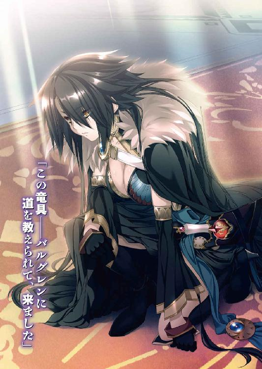
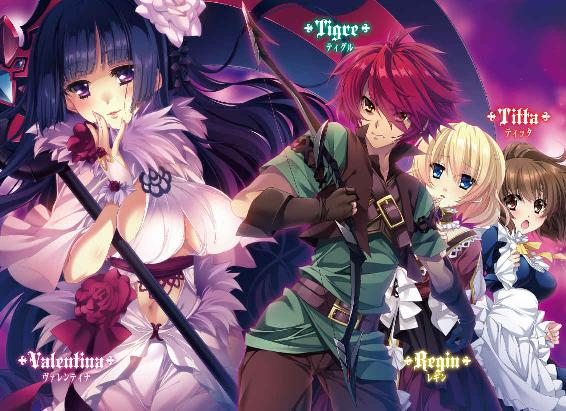
魔弾の王と戦姫12
川口 士
本作品の全部または一部を無断で複製、転載、配信、送信したり、ホームページ上に転載することを禁止します。また、本作品の内容を無断で改変、改ざん等を行うことも禁止します。
本作品購入時にご承諾いただいた規約により、有償・無償にかかわらず本作品を第三者に譲渡することはできません。
本作品を示すサムネイルなどのイメージ画像は、再ダウンロード時に予告なく変更される場合があります。
本作品は縦書きでレイアウトされています。
また、ご覧になるリーディングシステムにより、表示の差が認められることがあります。
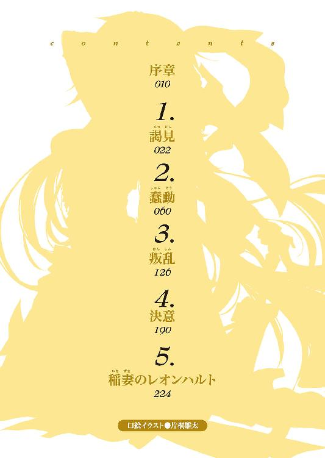
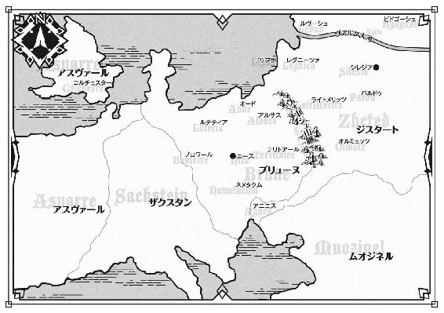
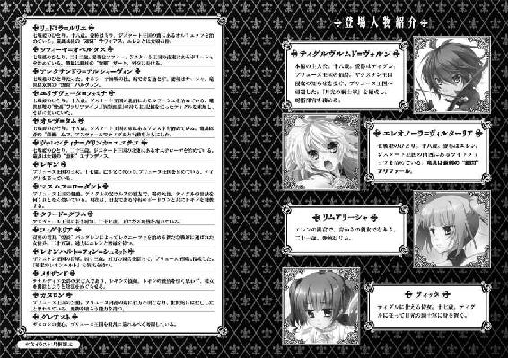
序
血の臭いを含んだ風が、吹き荒れている。
ここは戦場だ。より正確には、戦場の片隅だった。両軍の雇った傭兵隊同士が激突し、一方が総崩れとなったのが少し前のことである。
フィグネリアが雇われていたのは、負けた側だった。
敗走する味方に敵が追いすがり、味方は散り散りとなった。気づいたときにはフィグネリアのまわりに味方はおらず、追ってくる敵も数人だけになっていた。
逃げながら、ひとり、またひとりと敵を斬り捨て、相手の数が二人になったところでフィグネリアはようやく逃げることをやめる。敵に向き直った。
敵のひとりは革鎧を身につけ、両刃の斧をかまえた大男。もうひとりは鎖かたびらを着こんだ痩せ気味の男で、槍を持っている。
風に逆らうように、横薙ぎに振るわれた斧を、フィグネリアは頭を低くしてかわす。地面を蹴って大男の懐に飛びこみ、左右の手にそれぞれ持った小剣で鋭く斬りつけた。
短い悲鳴があがる。右手と、革鎧に覆われていない腹部を血で染めて、大男はよろめいた。フィグネリアはさらにもう一歩踏みこみ、大男の喉に小剣の刃を滑りこませる。大男は咳きこむように血を吐きだし、地面に転がってそのまま動かなくなった。
槍を持った男は、呆然と立ち尽くしている。自分が攻めあぐねている間に仲間がやられたのだ。無理もなかった。
その隙を、フィグネリアは見逃さない。もともと彼女が大男を先に狙ったのは、その巨体を盾代わりにして、槍の男の攻撃を封じるためだった。
一息で間合いを詰める。フィグネリアは左手に持っていた小剣を投げつけた。男は反射的に小剣を叩き落とそうとして、槍を振るう。
硬い金属音を響かせて小剣が地面に落ちたとき、フィグネリアは男に肉迫していた。
鎖かたびらには刃が通らないため、右手の小剣を男の顔面に突き立てる。男はかっと目を見開いて、仰向けに倒れた。
血と脂にまみれた小剣を握りしめたまま、フィグネリアは無表情で男たちを見下ろす。間違いなく死んでいることを確認すると、もう一本の小剣を拾いあげて周囲を見渡した。
空は暗灰色の分厚い雲に覆われて、暗い。地面は何十もの死体で埋め尽くされていた。傭兵だけに装備はばらばらで、革鎧を身につけている死体もあれば、甲冑をまとった死体もある。
「──ひどい戦だな」
横合いから声をかけられ、フィグネリアは反射的に小剣を振るいつつ、その場から飛び退く。声のした方を見れば、ひとりの男が立っていた。
年齢は三十半ばといったところか。中肉中背で、手には剣を持っている。身につけている鎧は血と泥で汚れていた。左頬の白い傷跡が目立つが、それ以上に、戦場に似つかわしくない穏やかな笑みが印象的な男だった。
「おまえ、どちらに雇われている？」
世間話でもするような口調で尋ねながら、男は剣を下げる。敵意はないと告げているのだ。フィグネリアは警戒を解かず、男との間合いを目で測りながら短く答えた。男は安堵の息を漏らす。
「それなら、いっしょに逃げないか。どうも負け戦らしい」
フィグネリアはすぐには答えず、遠くに視線を向けた。
二つの軍が激しく争っている。怒号と悲鳴、鉄と鉄のぶつかりあう音や肉の潰れる音が入り混じった、戦場特有の喧噪がここまで聞こえてくるほどだ。
男の言う通り、押されているのはフィグネリアを雇った側だった。
敗軍の傭兵が捕まったとき、奴隷商人に売り飛ばされるのはまだいい方だ。たいていの場合は、そうした手間さえ惜しまれて、その場で殺される。フィグネリアは女だから、より凄惨な目に遭うだろう。
男と距離をとったまま、フィグネリアは訊いた。
「あんた、他に仲間はいるのか？」
「ああ。見つけたやつはもう逃がした。念のために、ここにも来てみたんだが......」
男は渋面をつくる。ここに立っているのはフィグネリアだけだ。男の仲間がいたかどうか、死体をひとつひとつ確認する余裕などはない。
男を信用するべきか、フィグネリアは迷った。彼女はいままでどの傭兵団にも属したことはない。勝ち戦でも負け戦でも、彼女はいつもひとりで戦場から去っていた。
「──行くぞ」
突然、男が背を向けて駆けだす。フィグネリアはまだ答えを出していなかったが、男の動きにつられて走りだしていた。
敵の騎兵が単騎でフィグネリアたちを追ってきたが、二人は難なく騎兵を打ち倒す。
馬を奪って、戦場から離脱した。
男はヴィッサリオンと名のった。『白銀の疾風』なる傭兵団の団長だという。
「団長が、部下をさがしに戦場をうろついていたのか？」
フィグネリアが呆れた顔でヴィッサリオンを見ると、傭兵団の団長は屈託のない笑みを浮かべて大きくうなずく。
「それが俺のやり方だ。うちはあまり数が多くないからな」
フィグネリアは現在『白銀の疾風』の幕営にいた。ヴィッサリオンとともに戦場から逃げきったあと、彼に誘われて立ち寄ったのだ。戦の行方を知っておきたかったし、唯一の戦利品である馬を、彼とどう分けるか話しあう必要もあった。
もっとも、幕営に着いてすぐに話しあいができたかというと、そんなことはない。
負け戦だったのだ。小さな幕営は、怪我人であふれかえっていた。痛みを訴える呻き声や、言葉にならない悲鳴がそこかしこで聞こえる。
背中を丸めてうずくまり、あるいは地面に外套を敷いて横になっている男たちの間を、女たちが包帯や葡萄酒の瓶を手に駆けまわっていた。
──戦士ではない者も含めて、三十人と少しというあたりか。
手当てを受けている傭兵たちを眺めながら、フィグネリアはそんなことを考える。小規模ながら、傭兵団を運営するために必要な人材は一通りそろっているらしい。
傭兵団に女がいることは、不思議ではない。料理や洗濯、裁縫、町への買い出しなどをする人間が必要だからだ。日々の生活の中に当たり前のものとして家事が組みこまれていた女と、そうではない男とでは手際のよさが違う。
また、彼女たちには娼婦としての役目もある。血の気の多い男の相手をし、ときに愚痴や武勇伝の聞き役となり、慰め、励ますのは女でなければできなかった。
半刻ほどが過ぎて負傷者の手当てもほぼ終わり、幕営が落ち着いてきたころ、フィグネリアは自分に向けられる複数の視線に気づいた。
敵意の類ではない。女の傭兵が珍しいのだ。加えて、フィグネリアの服装は独特なものだった。黒を基調とした服で、袖のない上着と、足元まであるスカートが一体となっている。服に縫いこまれた隼の意匠が、鮮やかに浮かびあがっていた。
フィグネリア自身も、注目される要素はある。優美な身体の曲線は服の上からでもわかるほどで、左目を隠すように流れている長い黒髪にも色気が感じられた。
好奇の目にさらされても、フィグネリアは眉ひとつ動かさず平然としていた。こういった視線には慣れている。ただ、変なのに絡まれたらぶん殴ろうとだけは思っていた。腰に巻いた青い帯には小剣を差しているが、さすがにいきなり抜き放つつもりはない。
ところが、最初に声をかけてきたのは予想外の相手だった。
「あなたは傭兵なのか？」
緊張と興奮、期待の入り混じった子供のような声で話しかけられて、フィグネリアはそちらを見る。目を細めて、彼女はかすかな動揺を示した。
そこに立っていたのは二人の子供だったのだ。子供のような声なのは当然である。
ひとりは白銀の髪に紅の瞳を持った、いかにも快活そうな少女だ。年齢は十歳前後というところか。粗末な麻の服に短いスカートという格好で、剣を背負っている。
もうひとりは艶のない金髪を頭の左側で結んだ、長身の少女だ。銀髪の少女より二つか三つほど年長に見える。緊張しているのか表情が硬い。彼女の青い瞳はフィグネリアではなく、銀髪の少女に向けられていた。
「エレン。まず挨拶が先でしょう。それに、こちらから名のらないと失礼です」
金髪の少女の言葉に、エレンと呼ばれた銀髪の少女は小さく唸る。背筋を伸ばし、あらためてフィグネリアをまっすぐ見つめると頭を下げた。
「はじめまして、お客人。私はエレオノーラ。こちらの背の高いのはリムアリーシャだ。ええと......。以後、お見知りおきを」
フィグネリアはとっさに言葉が出てこず、当惑の表情で二人の子供を見下ろす。リムアリーシャという少女はともかく、エレオノーラ──エレンはあきらかに異質だった。雑用係だとしても若すぎるし、剣を背負っているのもおかしい。
「──ご丁寧にどうも。私はフィグネリアだ」
三つ数えるほどの間を置いて、ようやくフィグネリアは言葉を返した。返事があったことに勇気づけられたのか、エレンは紅の双眸を輝かせて大きく身を乗りだす。
「フィグネリア。あなたは傭兵なんだろう？ 私はいまでこそ見習いだが、いつかは傭兵になる。お願いだ、話を聞かせてくれ。傭兵の心得とか、戦い方とか......」
熱心に頼みこまれて、フィグネリアは困り果てた。
これまで彼女は、下心を持って近づいてきた男は容赦なく殴り倒してきたし、嫌悪感や侮蔑の眼差しを向けてくる者は無視してきた。
だが、子供にお願いをされたのは、これがはじめてだ。無視することもできず、さりとて何を話せばいいのかわからず、フィグネリアは無言で彼女たちを見下ろした。
リムアリーシャはといえば、半ば諦めた表情でエレンを見ている。よほどのことをしでかさないかぎり、エレンを止める気はないらしい。
「こら、二人とも客人に迷惑をかけるんじゃない」
穏やかな声に、フィグネリアは顔を上げた。エレンたちもそちらを見る。
ヴィッサリオンがこちらへ歩いてくるところだった。内心で胸をなで下ろしたフィグネリアとは対照的に、エレンは不満そうに頬をふくらませる。
「迷惑はかけてないぞ。ただ、いろいろと話を聞こうと......」
「そうか。それは次の機会にしろ。いまから大事な話があるんでな。リム、こいつが聞き耳を立てたりしないよう、どこかに連れていけ」
リムアリーシャ──リムにそう言いながら、ヴィッサリオンは手振りで幕舎の中に入るようフィグネリアに伝えた。黒髪の女傭兵はエレンの頭に軽く手を置く。
「また今度な」
そうしてエレンの反応も見ずに幕舎に入ったあと、らしくもない行動をとってしまったことを彼女は少し後悔した。
交渉自体はすぐに終わった。馬を金銭に換算した場合の数字を話しあって決め、その半分の金額をフィグネリアが受け取り、馬自体はヴィッサリオンのものになる。
それから、二人は情報交換をすませた。今度はどこで戦争が起きそうか、支払いのいい領主は誰かといったことを教えあう。それが一段落したところで、フィグネリアはふと気になったことをヴィッサリオンに尋ねた。
「あのエレオノーラって子、あんたの子供？」
「いきなり何を言いだすんだ、おまえは」
ヴィッサリオンは呆れた顔でフィグネリアを見つめる。その反応に黒髪の女傭兵は軽い苛立ちを覚えたものの、エレンが雑用係には見えないこと、剣を背負って見習いを自称していることなどを挙げて説明した。
「あんな子供を見習いとして置いておく傭兵団なんて、見たことがない」
「まあ、そうだな」
ヴィッサリオンは短い黒髪をかきむしって、苦笑を浮かべる。
「ああ見えて、エレンは古参なんだ。なにせ十年前からいるからな」
ヴィッサリオンの話によると、彼は十年前、赤子のエレンを拾ったらしい。捨てるのもためらわれたので、傭兵団で育てることにしたのだという。
「物心ついたときから、がらの悪い連中に囲まれていたせいかね。雑用もできないわけじゃないが、剣を振りまわすのが性に合う悪ガキに育っちまった」
悪ガキなどと言いながらも、ヴィッサリオンの声にはエレンへのたしかな愛情がある。育ての親であることを彼が誇り、喜びとしているのは疑いの余地がなかった。
フィグネリアが十八歳、エレンが十一歳のときの話である。
その後もフィグネリアはどこかの傭兵団に所属するようなことはせず、ひとりで戦場から戦場へと渡り歩いた。一戦ごとに彼女の刃は鋭さを増し、名を馳せた傭兵や騎士を次々と討ち取った。
いつしか彼女は『乱刃のフィーネ』という異名で呼ばれるようになっていた。
『白銀の疾風』とは何度か顔を合わせる機会があり、仕事を手伝うこともあれば、手伝ってもらうこともあった。傭兵団の団長としても、ひとりの戦士としてもヴィッサリオンは優れた能力の持ち主であり、傭兵団の者たちの信頼も厚かった。
フィグネリアも彼とは不思議と気が合い、酒を酌み交わしながら冗談をぶつけあうぐらいの仲にはなっていたが、彼女が『白銀の疾風』の一員になることはなかった。
あるとき、ヴィッサリオンが傭兵らしからぬ夢を持っていることをフィグネリアは知った。彼が話したのではない。勝ち戦の宴の席で、彼の娘が口を滑らせたのだ。
「ヴィッサリオンはな、国をつくりたいんだ」
「......国？」
「皆が飢えることなく、野盗や獣に怯えず、凍えるような寒さも乗り切ることができて、ひとの行き来が盛んで、誰もが笑って暮らせる。そんな国をつくりたいと言っていた」
国をつくる。
壮大に過ぎて、滑稽としか評しようがない夢だ。ヴィッサリオンに全幅の信頼を寄せ、その命令に逆らったことがない『白銀の疾風』の者たちでさえも、このことについては誰ひとりとして本気にせず、笑い話として受け取っていた。
正確には、彼の夢を信じている者はひとりだけいた。エレンである。
ヴィッサリオンの夢を手伝うのだと、彼女は公言してはばからなかった。そのために剣を鍛え、読み書きを学んでいるのだとも。
フィグネリアがこの話をはじめて聞いたときは『白銀の疾風』の面々とほとんど同じ反応を示した。文字通り、開いた口がふさがらなかったのだ。
「いくら夢だといっても、もう少し実現しそうなものにしたら？」
「俺は実現させる気でいるぞ」
ヴィッサリオンの返答に、フィグネリアは笑おうとして失敗した。傭兵団の団長は笑みこそ浮かべていたものの、両眼には静かな決意をあふれさせていたからだ。
その後、フィグネリアは仕方なくヴィッサリオンの話に何度かつきあった。彼の夢の話を聞く者が、エレンとリムの二人を除けば彼女しかいなかったからだ。
当然ながら、フィグネリアにそういった知識の持ちあわせはない。彼女は基本的に聞き役にまわり、気になったところだけ質問する形をとった。それでも貴重な聞き手を得て、ヴィッサリオンは満足そうだった。
しかし、ヴィッサリオンの夢は永久にかなわなかった。
彼の夢を、その命ごと断ち切ったのはフィグネリアだ。
とある戦場で、彼女と『白銀の疾風』は敵同士となった。戦いの中でフィグネリアはヴィッサリオンと一騎打ちになり、彼を斬った。
傭兵団というものは、統率者たる団長に拠るところが大きい。『白銀の疾風』も例外ではなかった。戦が終わったあと、何人かの傭兵がその日のうちに団を去った。女たちも、ある者は傭兵と結ばれて団を離れ、ある者は故郷に帰ると言って姿を消した。
雪が溶けるように、傭兵団は静かに消滅した。
フィグネリアが二十歳、エレンが十三歳のときの話である。
１ 謁見
起伏の緩やかな草原を、涼やかな春の風が吹き抜けていく。空に雲は少なく、太陽の光は咲き乱れる花や、その間に舞う蝶の姿を鮮やかに映しだしていた。
草原を貫いて延びている街道は、鉄と人馬の群れに埋め尽くされている。彼らは街道を北上して、ブリューヌ王国の王都ニースを目指していた。
風にひるがえる軍旗は多彩で、ブリューヌ王国の紅馬旗もあれば、隣国ジスタートの黒竜旗もある。さらに地方領主や騎士団の軍旗までが己の存在を誇示していた。
武器や甲冑が血と泥で汚れ、兵たちに負傷者が目立つのは戦いのあとだからだ。
この混成軍の名を『月光の騎士軍』という。数はおよそ一万。
総指揮官を務めるティグルヴルムド＝ヴォルンは十八歳。辺境の地アルサスを治める伯爵であり、親しい者からはティグルという愛称で呼ばれている。くすんだ赤い髪はとくに手入れをしておらず、黒い瞳にはひとのよさを感じさせる穏やかな輝きがあった。
田舎領主ならばともかく、一万もの軍を率いる総指揮官としては頼りなく見えるかもしれない。麻の服の上に革鎧をまとった格好も、春のあたたかな空気に包まれて馬上で大きくあくびをしているさまも、その印象を強調している。
だが、ブリューヌの人間で彼ほどの武勲を立てた者は他にいない。二年前、ティグルはブリューヌに侵攻してきたムオジネル王国の大軍を寡兵で退けた。また、レギン王女を暗殺せんとしたテナルディエ公爵を合戦にて倒し、内乱を鎮めてみせた。
さらに、彼は諸事情から隣国アスヴァールの内乱に介入し、タラード＝グラムという将軍に協力してエリオット王子の軍を打ち破った。
そして七日前、ティグルはブリューヌに侵攻してきたザクスタン王国の軍勢と戦い、勝利したのである。ザクスタン軍は西と南から攻めてきており、西の敵はまだ残っているものの、敗北の続いていたブリューヌにとっては貴重な勝利だった。
太陽が中天に達するまであと一刻はかかるだろうというころ、灰色の城壁に囲まれた王都ニースの姿が見えてきた。
王都からだいたい五百アルシン（約五百メートル）離れたところで、ティグルは軍を止める。軍が近づきすぎては王都の民を不安にさせるだろうと考えてのことだ。
「幕営を設置せよ。それから交代で休息をとるように」
兵たちに命じると、ティグルはそばに控えているマスハス＝ローダントを振り返る。ティグルの亡き父ウルスの親友であり、若者がもっとも頼りにしている男だ。彼はいまブリューヌ貴族たちのまとめ役を務めている。
「マスハス卿。王宮への使者に、誰を向かわせればよいと思いますか」
「ここで待っておれば、そのうち向こうから使者が来るじゃろう。戦勝の報告はとうにすませてあるからな」
灰色の髭を撫でながら、今年で五十七歳になった老伯爵は答えた。
七日前の戦いでザクスタンの将軍クリューゲルを討ち取ったあと、ティグルたちはすぐに王都へ伝令を走らせた。勝利の報によって王都にいる人々の不安を拭い去り、味方の士気を高めるためだ。戦いは、まだ終わっていないのだから。
はたしてマスハスの言った通り、それから半刻も過ぎないうちにティグルは兵士から報告を受けた。
「失礼いたします、伯爵閣下。王宮からの使者と称するジェラール＝オージェなる者が、閣下に面会を求めておりますが」
「すぐに連れてきてくれ」
ティグルは顔を輝かせて答える。ジェラールはティグルにとって頼もしい戦友のひとりだ。ほどなく、人馬と甲冑の群れを抜けてひとりの男が姿を見せた。
痩せ気味の身体を灰色の官服に包み、青銅色の瞳には皮肉めいた輝きを湛えている。くせのある褐色の髪を大雑把に撫でつけると、彼は丁寧な態度でティグルに一礼した。
「おひさしぶりです、ヴォルン伯爵。王宮までの案内役を務めるよう王女殿下に仰せつかり、かくまいりました。──いろいろと話は聞いていましたが、お変わりないようで安心しました」
「ジェラールも元気そうで何よりだ。オージェ子爵もご壮健か？」
「もう少し年齢を考えたらどうかと思うぐらいには元気ですよ、父は」
ジェラールの言葉はいつものように容赦のないものだが、口調には父への敬意がある。それから彼はティグルの隣に立つマスハスにも会釈した。マスハスが尋ねる。
「ジェラールよ。おぬしが来てくれたということは、わしらが王女殿下に謁見するまでの段取りは、そちらに任せていいということかな」
ブリューヌは現在、ひとりの王女によって統治されている。王女の名は、レギン＝エステル＝ロワール＝バスティアン＝ド＝シャルル。先王ファーロンが不慮の死を遂げたためとはいえ、王女が玉座に座ることはブリューヌにおいて異例であった。
だが、ここにいる三人はブリューヌの臣として彼女に忠誠を誓っている。王女の名が出ても、彼らの間では何の問題もない。
「基本的には。ただ、その件について、お二人にお願いしたいことがあります」
ジェラールは笑みを絶やさずに声を潜めた。ティグルとマスハスはすばやく視線をかわす。マスハスがひとりの兵士を呼んで、短く何ごとかを伝えた。その兵士は他の兵たちに声をかけ、ごく自然な足取りでティグルたちから離れていく。
──重要な話ならば、エレンを呼ぶべきかな。
現在、月光の騎士軍には二人の戦姫がいる。
『銀閃の風姫』の異名を持つエレオノーラ＝ヴィルターリアと『虚影の幻姫』の異名を持つヴァレンティナ＝グリンカ＝エステスだ。隣国ジスタートの重鎮である彼女たちは、ジスタート王ヴィクトールの命令によってティグルに協力していた。
エレオノーラは親しい者からはエレンという愛称で呼ばれており、ティグルもそれを許されている。彼女は若者にとって戦友というだけでなく、何ものにも代えがたい存在のひとりだった。エレンもおそらく、同じ感情をティグルに抱いてくれているはずだ。
一方、ヴァレンティナとは先日はじめて会ったばかりで、人柄についてもわかっていない部分が多い。しかし、彼女なりにティグルに力を貸してくれているのは事実だった。
月光の騎士軍において、この二人の立場は同列である。重要な話にエレンだけを呼んでヴァレンティナを呼ばなかったとなれば、不公平感が出てしまうだろう。
詳しい話を聞いてから、彼女たちを呼ぶべきか判断しようとティグルは考えた。
三人のまわりに誰もいなくなったのを確認して、ジェラールは口を開く。
「戦いの詳細は、あなた方がよこしてくれた伝令殿から聞いております。ついては、その勝利を喧伝するために、ヴォルン伯爵をはじめ五十人ほどの集団で王都の門をくぐってほしいというのがレギン王女殿下と宰相閣下の要望です。ちょっとした凱旋式ですね」
「その五十人の中には、ジスタート人も含めるんだな？」
確認するように聞いたティグルに、ジェラールはうなずいた。
勝利によって都市の住人を勇気づけるだけでは足りない。彼らに、ジスタート軍が協力者であることをわかってもらう必要もある。他国の軍が国内にいるというだけで、民衆の多くは警戒心を抱くものだ。
「夜には宴を開くので、謁見が終わったあとは、こちらの用意した部屋で休んでいただきます。ところで......現在の王都には、あなたについて不愉快な噂が流れていましてね」
ジェラールは不機嫌さを隠そうともせず、口をひん曲げて説明を続ける。
「ヴォルン伯爵はブリューヌを裏切り、ジスタートの走狗となっているというものです」
「聞き捨てならない噂じゃな」
マスハスが憤然として眉間に皺を寄せる。ティグルは何も言わなかったが、嫌悪感が顔に浮かぶのを抑えることはできなかった。
「おそらくメリザンドに従う一派の仕業じゃろう。ティグルがエレオノーラ殿らの協力を得てジスタートから帰ってきたことを知り、そのような流言を飛ばしたに違いない」
語気も荒くマスハスは吐き捨てる。
メリザンドはブリューヌ王家に連なる女性で、レギンにとっては叔母にあたる。王位の簒奪とレギンの暗殺をたくらんで行動を起こしたテナルディエ公の、妻でもあった。
二年前の内乱で息子と夫を亡くした彼女は、かつてテナルディエ公が治めていたネメタクムにある神殿で、静かに過ごしているかに見えた。だが、そう装っていただけであり、彼女はひそかに味方を募ってレギンを打倒する機会をうかがっていたのだ。
そのような女性であるから、マスハスが決めつけるのも無理はない。しかし、ジェラールは首を横に振った。
「私と父も最初はそう考えたのですが、どうも違うようです。彼らは積極的に噂に飛びつき、広めてこそいますが、噂の出所からは遠い位置にいます。この噂に対する反応ですが、王宮の外──つまり民衆たちはほとんど聞き流しています」
「ザクスタン軍に勝ったことが効いたのか？」
ティグルが聞くと、ジェラールはひとの悪い笑みを浮かべた。
「ええ。勝ったという事実は何よりも強力ですから。私たちも積極的に噂を流しました。ヴォルン伯爵は必ずやザクスタン軍を打ち倒し、かつて内乱を鎮めたときのように、ブリューヌに平和を取り戻すだろうと。もっとも、勝利の報が遅ければ危うかったですが」
ジェラールの台詞に、若者は息を呑む。あのときクリューゲルを討ちそこね、戦いが長引いていたら、取り返しのつかない事態を招いていた恐れもあったのだ。
しかし、まだ安心するには早いようだった。ジェラールの顔が、いよいよ難題に取りかかろうとでもいうようなしかめっ面になっている。
「王宮の外についてはいいとして、問題は王宮の中ですね。メリザンドの一派の他にも、この噂を信じている連中がいるんですよ」
青銅色の瞳に強い軽蔑をにじませて、ジェラールは言葉を続けた。
「ジスタートや戦姫殿を警戒している者、それからヴォルン伯爵の存在が気に入らないという連中です。これがけっこう多様でしてね。弓を蔑む者、ヴォルン伯爵が小貴族であることを理由に見下す者、数々の武勲に嫉妬している者など挙げればきりがない」
「しばらくブリューヌから離れている間に、俺もずいぶんと人気者になったものだな」
「あなたが浴びているのは声援ではなく、侮蔑と嫉妬と疑惑の視線ですけどね」
冗談に皮肉で返されて、ティグルは肩をすくめる。若者は何気なくジェラールから視線を外して、少し離れたところに置いてある己の弓を見た。
ブリューヌでは剣や槍、馬術が重んじられており、弓への評価はきわめて低い。戦場で弓を使う者は剣も槍も使えない惰弱者か、猟師か罪人であるといわれるほどだ。大きな戦果をあげたにもかかわらず、それを認められなかった弓兵部隊の話もある。
ティグルは弓においては卓越した技量の持ち主だが、剣や槍はろくに使えない。貴族とはいえ、家柄もよいとはいえない。領地も辺境のアルサスである。
家柄や血筋を尊び、剣や槍を重視するブリューヌ人ほど、ティグルのような男の存在は理解しがたく、許容しがたいだろう。
そのことは想像していたが、こうして王宮の事情に詳しいジェラールから話を聞かされると、あらためて冷たさを帯びた衝撃がティグルの身体を包んだ。
──いや、まだ認識が甘かったんだな。
ジスタート王ヴィクトールも言っていたではないか。ブリューヌの者たちは、ティグルの弓の技量は認めずとも、その戦果を無視することはできないと。
「都市の住人たちのためにも、ティグルや戦姫殿に王都の門をくぐってほしい。だが、ティグルや戦姫殿を気に入らない連中が王宮には数多くいる。そういうことじゃな？」
マスハスがずんぐりとした身体を揺すりながら話をまとめる。褐色の髪の書記官は、頭痛を堪えるような表情でうなずいた。
「ええ。かといって、ヴォルン伯爵と戦姫殿が王都に入らず、王女殿下に謁見しなければ裏切りの噂を信じてくれというようなものです。それに、王女殿下はヴォルン伯爵にとても会いたがっておられますので、ここで留守番などされたら私の首が危うくなりますね」
「少し大げさじゃないか。俺も王女殿下にお目にかかりたいとは思っているが......」
ティグルがそう言うと、ジェラールは大きく首を左右に振った。
「大げさなつもりはありませんけどね。あなたがアスヴァールからジスタートへ帰る途中で海に落ちたことを、殿下はそれはもう心配されていたのですよ」
ティグルの隣で話を聞いていたマスハスは、何とも言えないという顔になった。レギンがティグルを心配していたのは事実だが、彼女がジスタートに対してかつてないほどの怒りを見せたことを、この書記官は平然と隠している。
「王女殿下のお立場からいって、我が国に協力してくださった二人の戦姫殿に対して一言もなしというわけにはまいりません。そして、戦姫殿に会うのに、あなたに会わないとあっては、戦姫殿が王女殿下に不審を抱くでしょう」
ジスタートにおいて戦姫は国王に次ぐ権威を有し、敬意をはらわれる存在だ。しかも、ヴィクトール王の命令とはいえ、彼女たちは兵を率いてブリューヌのために戦い、血を流したのである。
エレンたちに非礼な対応をとれば、今後の外交に影響するだけではすまない。レギンは統治者として周囲から落胆と失望を買うだろう。
「──わかった。エレンたちには俺から頼んでおく」
くすんだ赤い髪をかきまわして、ティグルは答えた。エレンたちの安全については、レギンが手配するだろう。それでも彼女たちに不快な思いをさせるのは申し訳ないが、謁見を避ければ事態はより面倒になる。二人とも、そのことはわかってくれるはずだ。
お願いしますと頭を下げたジェラールに、マスハスが思いだしたように尋ねた。
「ところでジェラール卿。メリザンドはどうなった？」
マスハスの声は低く、顔を上げたジェラールも青銅色の瞳に敵意をにじませている。
「現在も客室で生活してもらっています。無用の騒ぎを起こした件について、処分を検討中という名目で」
新年のはじまりを祝う光輪祭で、メリザンドはレギンの権威の失墜を狙った。王宮にある『不敗の剣』が偽物であると知った彼女は、アルマン子爵に命じて偽物の不敗の剣を破壊させたのだ。
不敗の剣は始祖シャルルが振るっていたとされる王国の宝剣であり、それを失ったとすればレギンの治世は大きく揺らぐだろう。だが、レギンの仕掛けていた罠によってメリザンドの狙いは外れ、逆に彼女の方が面目を失ったのだった。
「アルマン子爵も同様です。もちろん部屋は別ですけれどね。彼には王宮の中を歩きまわるていどの自由も与えています」
「泳がせているのか？」
ティグルの質問に、ジェラールは不満そうな表情で答えた。
「さすがに慎重になっているようで、いまのところ成果は出ていませんがね」
王宮には、メリザンドを支持する貴族が何人もいる。彼らはもともとテナルディエ公爵の傘下に入っていたのだが、テナルディエ公の死後、メリザンドのもとに集まった。
彼らの存在を、レギンたちはあえて放っている。自分を支持しないからといって追放などの処分を与えれば、他の貴族たちによからぬ影響を与えるからだ。レギンの立場はいまだ盤石と呼べるものではなく、敵を増やさないことを心がけねばならない。
それに、恐怖で締めつけるやり方はレギンの好みではなかった。ときには断固たる処置が必要だとわかってはいるが、それに踏み切る前に打つ手を模索したかったのだ。
「ザクスタン軍を引き入れたのがメリザンドだったことについて、王女殿下と宰相はどういう手を打つつもりじゃ？」
声をいっそう潜めてマスハスが尋ねる。メリザンドの行為はあきらかにブリューヌという国を損なうものだ。王家の血筋も、もはや彼女を守ることはできないだろう。
「いまの段階では動くに動けないというのが王女殿下の結論です」
ジェラールの顔は苦々しさに覆われ、声は苛立ちを帯びている。
「ザクスタンの侵攻をこれ幸いと利用し、メリザンドを処刑しようとしているのではないか。そう疑われることを警戒していましてね」
レギンとメリザンドの対立は、デュランダルの偽物の一件で周知のものとなっている。
メリザンドを処断したとして、それがレギンの陰謀によるものと思われては、彼女の人望は地に落ちる。ザクスタンなどは内心で手を打って喜びつつ、表向きはメリザンドとの関係を否定し、さらにレギンを卑怯者と責め、己の侵攻を正当化しかねない。
「だが、いつまでも放っておくわけにはいかないだろう」
意図をたしかめるようにティグルが尋ねると、ジェラールは肩をすくめる。
「現在、我が国を無法に練り歩いているザクスタンの軍勢を完全に叩き出したあとに、ことを決するおつもりでいます」
ザクスタン軍を撃退すれば、レギンの名声は高まる。その余勢を駆って一気に決着をつければ、多少の反発は封じこめることが可能だろう。その際、メリザンドがザクスタン王国に通じていることは公表しない。混乱を最小限におさえるためだ。
「たしかに、それしかないか。それで、ザクスタン軍を叩きだす役は誰が務めるのだ？」
マスハスの質問に、ジェラールはひとさし指を動かして、ティグルと老伯爵を順番に指し示す。他に誰がいるのかと言いたげな表情だった。
「王女殿下は、すでに他の軍や部隊に命令を下しておられます。あなた方の指揮下に入るようにと。殿下の名声をもっとも高めることができるのは、殿下を玉座につけたヴォルン伯爵しかおりません。さきほど言ったように、噂も流しましたから」
「兵が増えるのはありがたいが......どれぐらいになりそうなんだ？」と、ティグル。
「二万から三万ほど加わるので、大きく見積もって四万ですね。敵の数は五万という話ですが、二度の戦いで多少は減らしていると思われます。ほぼ五分になるかと」
今度はティグルとマスハスが肩をすくめる番だった。
◎
ジェラールが去り、マスハスも部隊に指示を出すべくこの場から離れたあと、ティグルはジスタート軍の幕営に兵を向かわせ、エレンとリム、ヴァレンティナを呼んだ。ジェラールと話していた間に、幕営の設置はかなり進んでいる。
ほどなく、三人はティグルの幕舎に現れた。
エレン──エレオノーラ＝ヴィルターリアはティグルと同じく十八歳。白銀の髪は腰に届くほど長く、紅玉色の瞳には快活さと覇気が踊っている。青を基調とした軍装に身を包み、腰には翼を模した鍔を持つ長剣を吊していた。
その美貌に加えて颯爽とした態度は、幕営を歩くだけでも注目を集めずにはおかない。戦士としても軍の指揮官としてもエレンは充分な力量の持ち主であり、兵の信望も厚い。
リムは昔からエレンの副官を務めている。年齢は主より三つ上の二十一歳で、艶のない金髪を頭の左側で束ね、長身に青い軍装をまとっている。端整な顔には愛想がかけらも存在しないが、親しい者たちは、リムが感情豊かな娘であることをよく知っていた。
ヴァレンティナは、リムよりもさらに二つ上の二十三歳。戦場には似つかわしくない、純白のドレスに身を包んでいる。随所に薔薇をあしらったこのドレスに、彼女の長い黒髪はよく映えていた。
おっとりとした微笑とあいまって、清楚な姫君という印象を多くの者は持つだろう。彼女は禍々しい造形の大鎌を肩に担いでいるが、大鎌は不思議と彼女のまとう雰囲気に溶けこみ、違和感を生じさせずにいる。この大鎌こそが、彼女の竜具エザンディスだった。
ヴァレンティナはエレンと異なり、兵を率いていない。彼女だけが先行してブリューヌの地を踏んだのだ。
戦士としても軍の指揮官としても彼女の実力は未知数だが、ザクスタンとの戦いにおいて、ヴァレンティナの知謀が月光の騎士軍を勝利へと導いたのはたしかだった。
「忙しいところをすまないな」
ティグルは三人をねぎらうと、そばに控えていた少女を振り返る。少女は栗色の髪を頭の後ろで結び、黒い長袖と足元まであるスカートの上に白いエプロンをつけていた。
「ティッタ。何か飲みものを頼む」
ティッタと呼ばれた少女ははしばみ色の瞳を輝かせると、元気よく「はい」と答える。
彼女は小さなころからティグルに仕えている侍女だ。ティグルを慕っており、若者がジスタートに客将として赴いたときも健気につき従った。今年で十七歳になったが、可愛らしい面立ちにはまだ幼さがかすかに残っている。
葡萄酒を蜂蜜と果物の絞り汁で薄めたものをティッタは手際よく用意し、人数分の陶杯に注いで四人の前に置いた。少女に礼を言ってから、ティグルはエレンたちに向き直る。ジェラールに頼まれたことを説明した。
「ふむ。私たちに、不愉快な視線を浴びることを承知の上で王宮に行けと」
葡萄酒を一口飲んでから、エレンは冷たい笑みを浮かべてそんな感想を漏らす。
「すまないが、いっしょに来てもらえないか」
ティグルは陶杯を脇に置くと、地面に額がつくほど深く頭を下げた。彼女らは友軍としてこの地にいるのだ。どれだけ頭を下げても足りないほどの要求だった。
エレンとリムはすぐには答えず、隣でのんびりと葡萄酒を飲んでいるヴァレンティナを見る。自分たちはティグルの頼みであれば笑顔で応じるつもりだが、この黒髪の戦姫はどうだろうか。
「おいしいですね、これ。もう一杯お願いできるかしら」
ヴァレンティナはにっこりとティッタに微笑みかける。栗色の髪の侍女が急いで用意している間に、純白のドレスの戦姫はティグルに視線を向けた。
「視線だけで、すむのですか？」
ジスタートの介入を嫌う者たちが、思いあまってエレンたちに危害を加えないか。そのことをヴァレンティナは問うているのだ。
ティグルは顔を上げると、難しい表情で三人を見つめた。
「絶対に安全だとは言えない。ただ、俺の命と名誉に代えても、ジスタートの者は守ると誓う。王女殿下も同じお考えのはずだ」
もしもエレンたちが王宮で襲われれば、ブリューヌはジスタートまで敵にまわすことになってしまう。そのような事態を、レギンは何としてでも避けようとするはずだ。ティグルにしても、宣言を違えるつもりはない。大切な彼女たちに傷ついてほしくなかった。
「ティグルヴルムド卿。王都ニースに滞在するのは何日間になりそうですか」
それまで黙っていたリムが、淡々とした口調で尋ねる。
「マスハス卿と話しあってみたが、今日を含めて三日間になる」
武具や食糧の調達、軍の再編成や情報収集にかかる時間を考えて出した数字だった。
ティグルとしてはもう一日ほしかったのだが、一日引き延ばせば、その分の食糧や物資が必要になる。加えて、敵が西から迫っていることを考えると、時間をかけることはできなかった。
「私はかまわんぞ。他国の地で、そうした視線を逃れることなど不可能だ。いちいち気にしていられん。それに、ジスタートの戦姫としてレギン王女に会う必要もある」
陶杯の中の葡萄酒を一気に飲み干して、エレンが言った。彼女の言葉を待っていたかのように、ヴァレンティナも口を開く。
「私もまいりましょう。若き英雄殿にお願いされては、断ることなどできませんもの」
「おまえは幕営で身体を休めていたらどうだ。王宮に行き、王女に会うのはなかなか疲れる役目だ。身体の弱いおまえには辛いんじゃないか」
腕組みをして、エレンは鋭い視線を黒髪の戦姫に向ける。言葉こそ相手を気遣っているものの、ヴァレンティナに対する警戒心から発した台詞であることはあきらかだった。ヴァレンティナはといえば、微笑を浮かべてエレンの眼光を受け流す。
「そう言われるとつい甘えたくなってしまいますが、私も戦姫ですから。それに、私はレギン殿下にお目にかかったことがないので」
エレンはなおもヴァレンティナの意図をさぐるように目を細めたが、それ以上の追及はせず、視線をティグルに向けた。
「さて、ティグル。さっさと人選をすませてしまおうか」
話しあった結果、王都に入る五十人は次のようになった。ティグルとマスハスに統率されたブリューヌ人が二十八人。そして、エレンとヴァレンティナに率いられたジスタート人が十八人という構成だ。
ジスタート人はすべてエレン配下のライトメリッツ兵で、リムとルーリックが彼らをまとめていた。ルーリックは、ライトメリッツの騎士の中ではティグルがもっとも信頼している男だ。ルーリックもティグルを信頼し、ともに戦うことを誇りに思ってさえいる。
ブリューヌ人の中には、マスハスの息子であるガスパールや、リュテス騎士団を率いているシャイエがいた。また、ティッタも、ティグルの従者としてつき従っている。
「ヴォルン伯爵は、侍女ひとりしか従者を連れていかぬのか」
不思議そうな顔でティグルに尋ねたのは、ブルレック伯爵だった。ザクスタン軍との戦いにおいて月光の騎士軍の指揮下に入り、奮戦したブリューヌ貴族である。彼は月光の騎士軍に加わっている諸貴族の代表という立場であり、五人の従者を連れていた。
ティグルは苦笑を浮かべて答える。
「アルサスから連れてきた者はいますが、従者としての教育を受けていないので」
ティグルが小さいころから側仕えを務めていたバートランは、二年前の内乱で命を落とした。むろん彼以外にも側仕えとしての教育を受けていた者はいたが、宮廷で通用するだけの技量を持っていた者は内乱などで死んでしまっていた。
それでも差し迫った問題にならなかったのは、最近までティグルが客将としてライトメリッツに滞在していたからだ。従者が必要な事態があると、リムやルーリックといった親しい者たちがやってくれたのだった。
「なるほど。だが、それでは格好がつかぬだろう。私の従者をお貸ししようか」
ブルレックは好意で言っている。それがわかって、ティグルは礼を述べてから丁重に断った。三日の滞在なら、若者にはティッタだけで充分だった。
城壁をくぐって大通りに入った途端、ティグルたち五十騎は驚くほどの歓声を浴びた。
大通りの両脇には等間隔に兵士が立って、詰めかけている人々が踏みこまないよう抑えている。ザクスタンの侵攻は、やはり彼らを怯えさせていたのだ。また、ジェラールたちが流した噂も、彼らに期待を抱かせているのだろう。
ティグルは緊張に顔を引き締めて、前だけを見つめてまっすぐ進んだ。彼だけは、ジェラールが用意した礼装に身を包んでいる。
ティグル自身は気が進まなかったのだが、総指揮官がみすぼらしい格好で王女にお目にかかるのかと言われれば、拒絶はできなかった。
若者の隣で馬を進めていたジェラールはその様子を見てひとの悪い笑みを浮かべたものの、ここでからかってティグルがおかしな反応でも見せれば、若き英雄という幻想が崩れる恐れがある。せいぜいしかつめらしい顔をして先導役に徹した。
ジスタート人であるエレンやリム、ヴァレンティナに複雑な視線を向ける者もいたが、それはごく少数だった。大多数の者たちは彼女たちを協力者として歓迎し、またその美貌に憧憬や感嘆の眼差しを注いだ。
ようやく緊張がほぐれてきたティグルは、隣にいるジェラールにささやいた。
「俺に敵意を持っている者は、ここにはいないみたいだな」
「ここで騒いだところで意味はありませんからね。勝利の喜びに水を差す形になって、人々の敵意と反感を買うだけです」
ジェラールの言葉を聞きながら、ティグルは大通りの外側へ視線を向ける。歓声に混じって、歌声らしきものが聞こえた気がしたのだ。
戦場に流星の軍旗ひるがえるとき 風と嵐の女神は微笑とともに彼に寄り添う
いかなる季節、いかなる空であろうとも
月光の騎士が弓弦を引き絞れば その矢から逃げることはかなわず
いかなる甲冑、いかなる盾にても防ぐすべなし
猛々しき賊を打ち倒し 降りかかる災厄を払いのけ
悪しき軍勢に囚われた姫を助け 勝利を約束する一矢なり
おお、月光の騎士よ その武勇は正義のためにあり
その慈悲は民のためにあり その忠誠は王女のためにあり......
「──何だ、あれは」
「宣伝にはああいうのが手っ取り早いでしょう。評判は上々です」
顔を引きつらせるティグルに、ジェラールはすました顔で答える。
「苦労したんですよ。弓を褒める詩が、この国には古いものしかなかったので」
ティグルはもう何も言わず、ただ己の感情を表に出さないように務めた。ジェラールの台詞から考えると、あの詩はかなり広まっているに違いない。止める手段などない。せいぜい、あとで詩の内容を多少修正させることしかできないだろう。
ティグルは視線を大通りの先──王都の中央にそびえるリュベロン山へと向けた。王宮はこの山の中腹にある。そこでレギンが待っているはずだった。
◎
フィグネリアがジスタート王国の王都シレジアを訪れたのは、竜具と出会ってから七日後のことだった。
王都は春の陽気に包まれ、昼下がりの空からあたたかな陽射しが降り注いでいる。新年を祝う太陽祭が終わって十数日が過ぎているにもかかわらず、その余熱は王都のあちらこちらに残っているようだった。
フィグネリアは二十五歳。傭兵稼業は続けているものの、以前ほどには戦場を求めなくなっていた。足を向けた先に戦場があれば、刃を振るうというていどだ。
均整のとれた長身の持ち主で、黒を基調とした服の上に、長旅で汚れた外套を羽織っている。顔の左半分は長い黒髪で隠れており、切れ長の右目だけが、活気に包まれた王都の町並みを冷ややかに見つめていた。
彼女の腰の左右には、華麗な装飾をほどこされた双剣がある。
煌炎バルグレン。『討鬼の双刃』の異名を持ち、金色の刃と朱色の刃とで一対になるこの竜具こそが、フィグネリアを王都に導いたのである。
──やっぱり、こういうにぎやかなところは肌に合わないね。
そんな感想を内心でつぶやいて、彼女は王宮へと続く大通りをまっすぐ歩いていく。十年前から戦場を転々としてきたフィグネリアにとって、町や都市は身体を休め、武具や食糧を調達し、情報を集めるための場でしかなかった。
ほどなく王宮が見えてきた。フィグネリアは立ち止まって、旅塵にまみれた自分の姿を見下ろす。これから国王に謁見しようとする格好ではない。
だが、彼女は問題ないというふうに首を横に振ると、視線を王宮へ戻して再び歩きだした。替えの服など持っていないし、何よりも彼女が望んだわけではない。
王宮の前に着いたフィグネリアは、怪訝な顔をする門衛に双剣を見せる。はたして門衛は驚きの表情で彼女を見つめた。
「ただちに報告してまいりますので、しばしお待ちを」
門衛の態度の変化に戸惑いを覚えつつも、フィグネリアはうなずいた。
貧しい平民の生まれで、食べるために傭兵として生きてきた彼女は、他人からそのような対応をされたことがない。戦場で彼女の下についた若い傭兵たちから尊敬の眼差しを向けられたことはあるが、それはまた違う種類のものだ。
一刻ほど待たされるだろうか。彼女はそう思ったが、その予想は外れた。四半刻も過ぎないうちに官服に身を包んだ者たちが現れ、フィグネリアにうやうやしく一礼する。
「双剣の戦姫殿。よくおいでくださいました。部屋を用意いたしましたので、まずはそちらでおくつろぎください。用意が整いましたら、謁見の間へご案内いたします」
謁見の間でフィグネリアを待っていたのは、二人の男だった。玉座に腰を下ろしている老人と、その傍に控えている男だ。玉座の主がジスタート王ヴィクトールだろう。
近衛兵の姿などは見当たらない。身を隠しているのかと思ったフィグネリアは慎重に気配をさぐってみたが、それらしき者たちの存在をつかむことができなかった。
──人払いをしたということか。
「戦姫よ。我が前に」
ヴィクトール王がフィグネリアに呼びかける。大きくはないが老人特有の濁りもなく、よく通る声だ。フィグネリアは赤い絨毯の上を歩き、玉座から十歩ほど離れたところで膝をついた。微量の不快感を覚えたものの、顔には出さない。
騎士や貴族などと違い、傭兵は王国や王家に仕えていない。誰の庇護も受けず、その代わりに何ものからも自由であるのが傭兵だ。そうした生き方をしてきたフィグネリアにとって、自分が認めたわけでもない相手に膝をつくというのは面白くないことだった。
だが、場をわきまえるだけの分別はある。感情を消した顔で、彼女は国王を見上げた。
──こうして近くで見ると、枯れ木みたいな爺さんね。
それが、国王に対するフィグネリアの第一印象だ。もっとも、他者を外見だけで判断することの危うさを、彼女はよく知っている。
「フィグネリアといいます。この剣に道を教えられて、来ました」
女傭兵のもの言いはぞんざいだったが、ヴィクトールも、傍らに控えている男も彼女を咎めなかった。老王はフィグネリアを睥睨して、静かに告げる。
「よろしい。汝をバルグレンの戦姫と認めよう。『煌炎の朧姫』の称号とアルシャーヴィンの姓、そしてレグニーツァ公国を与える。そなたはこれよりレグニーツァに赴き、公主として臣下を束ね、彼の地を統治せよ」
ヴィクトールの口調は事務的で、新たな戦姫の誕生を喜ぶような雰囲気など微塵も感じられない。フィグネリアはそのことを不思議に思ったが、それ以上に、ヴィクトールが自分の言葉をまったく疑っていないことが気になった。
「私を信じ......お信じに、なるのですか？ バルグレンだって偽物かもしれないのに」
「偽物であれば、真のバルグレンが放ってはおかぬ。そなたは紛れもなく戦姫だ」
──竜具が生き物であるかのような言い方をするね。
フィグネリアは眉をひそめる。とはいえ、バルグレンがただの双剣でないことはよくわかっている。言葉ではなく、思念とでもいうような不思議な感覚で彼女の意識に訴えかけて、この王都まで連れてきたのだから。
「そなたの戦姫としての活躍に期待しているぞ」
それは退出を促す言葉だった。黒髪の女傭兵は拍子抜けした顔で老王の顔を見つめる。これで終わりなのかと思った。
一部の貴族諸侯にありがちな、仰々しいだけで中身のない会話をしたいのではない。これぐらい簡潔な方が自分の性にも合う。
だが、自分の素性について何も聞いてこないとはさすがに思わなかった。
玉座に悠然と座っているヴィクトールに、フィグネリアは今日まで抱いていた疑問を率直にぶつけた。
「陛下にお伺いしたいことがあります。なぜ、私が戦姫に選ばれたのか」
「それは余の知るところではないな。そなたを戦姫に選んだのは竜具ゆえ」
何でもないことのように老王は答える。フィグネリアは当惑した。彼女は、ヴィクトールが竜具に命じて自分を戦姫に任じたものだとばかり思っていた。そうでなければおかしいではないか。国王はジスタートを統べる存在なのだから。
だが、ヴィクトールの言う通りであれば、竜具が己の意思でフィグネリアを戦姫に選んだということになる。しかも、その理由は竜具しか知らないという。
ヴィクトールは首を動かして、傍らに控える男へと視線を向けた。
「この男はユージェン＝シェヴァーリン。余の頼みとする者であり、余の次に玉座の主となる者だ。これからのことについては、シェヴァーリンに聞くとよい」
ヴィクトールが言い終えるのを待って、ユージェンが前へ出る。謁見の間を静かに歩いてフィグネリアの前に立った。
「お立ちください。戦姫殿」
年齢は四十代半ばといったところか。痩身を白い官服に包んだ、穏やかな風貌の男だ。細面で、顎の下に灰色の長い髭がある。フィグネリアは立ち上がって彼を見つめる。黒髪の女傭兵の方が、ユージェンよりも背が高かった。
「のちほど、戦姫殿の部屋にお伺いします。詳しい話はそちらでいたしましょう。私に答えられることであれば、お答えします」
「そうしてもらえるとありがたいね」
ようやくいつもの調子を取り戻して、フィグネリアはそう応じる。
国王への謁見は終わった。
謁見を終えて客室に戻ったフィグネリアは、椅子に座る気になれず壁によりかかっていた。床に敷かれた絨毯や、室内を飾る数々の調度品から少しでも離れたかったのだ。
自分は正式に戦姫になったらしいが、まったく実感が湧かない。国王も、間近で見てみればただの老人という感想しか持てない。いまこの瞬間に扉を開けて道化師が現れ、これは芝居でしたと言われても納得できそうな気がしてしまう。
もちろん道化師が現れるようなことはなく、四半刻ほどが過ぎたあとに客室を訪れたのはユージェンだった。壁際に立っているフィグネリアを見て、ユージェンは不思議そうな顔をしたものの、それについては触れずに一礼する。
「何か飲みものを持ってこさせましょうか」
フィグネリアはひそかに感心した。ユージェンの態度は丁重でありながら堅苦しさをほとんど感じさせず、話をしやすい雰囲気をまとっている。自分を見る目に不審や侮蔑の色がないことにも好感を持った。
「遠慮しておくよ。大切な話のときは酒を飲まないと決めているんだ。さっそくだが......。私はこれから何をすればいい？」
「己の公国を治め、陛下のご命令があったときには兵を動かす。これが戦姫のなすべきことです。戦姫殿の場合は、陛下がおっしゃったように、西方にあるレグニーツァ公国を治めていただきます」
「公国ひとつをぽんとくれるとは、気前のいい話だね。あいにく、私は国どころか町や村の長になった経験もない。そんな女に任せて平気なのかい」
「私は幾人かの戦姫を知っていますが、国を統治した経験のある方はほとんどおりませんでした。それに、どの国にも戦姫殿を支える文武の官僚たちがおります。むろん、レグニーツァにも」
ユージェンの答えは明快で淀みがない。フィグネリアは強気に出てみることにした。
「私がレグニーツァとやらのことなど何も考えず、好き勝手に振る舞ったらどうなる」
「困りますな」
ユージェンが真顔で答えたので、フィグネリアはおもわず吹きだしそうになる。
「困るだけ？ たとえば軍勢を差し向けて、私に戦姫をやめさせるんじゃないか」
挑発的なフィグネリアの言葉に、ユージェンははじめて沈黙した。しかし、彼は言葉に詰まったのではないことを、黒髪の女傭兵はすぐに悟る。
ゆっくり五つ数えるほどの間を置いて、ユージェンは言った。
「信じられないかもしれませんが......。あなたから戦姫の資格を取りあげることができるのは、あなたの竜具だけです。陛下でさえも、そのようなことはできません」
フィグネリアは口の端を引きつらせる。何の冗談だと笑い飛ばそうとして、失敗した。
竜具は国王の命令を受けつけない。ユージェンはそう言っているのだ。その真剣な表情からは、彼がでたらめを言っているようには見えなかった。
「こいつが私を戦姫に選んだ理由はわからない。国王はそう言っていたが、本当なのか」
「戦姫殿。私も陛下の臣ゆえ、その言い方だけはあらためていただけませんか」
穏やかな声でたしなめてから、ユージェンは黒髪の女傭兵の質問に答える。
「竜具の意思は、使い手にしか伝わらぬといわれております」
フィグネリアは信じられないというふうに首を横に振り、ため息をついた。
国王を至尊の座に置くからこそ、王国は成り立つ。神々のすまう天上ならばともかく、地上において国王より上位の存在があってはならないはずだった。フィグネリアのような傭兵でも、そのことはわかっている。
竜具の存在は、王国を根底から揺るがすものではないか。
言いしれぬ恐怖と緊張が、身体の奥底からじわりと立ちのぼってくる。腰の双剣を手でそっと押さえながらフィグネリアは尋ねた。
「これは、何なんだ」
「このジスタートが興ったときから、代々の戦姫を選んできたものです。私の知るかぎりでは、おとぎ話に出てくるような不思議な力と、己の意思を持っています」
おとぎ話という言葉に、フィグネリアは口元をほころばせる。いい表現だと思った。奇跡だの神々の加護だのといった大仰な単語で語られるよりもはるかに受け入れやすい。
竜具に不思議な力があることを、否定する気はない。
七日前の出来事を、フィグネリアはあらためて思いだす。彼女は荒野を旅していた。
妙な音が聞こえ、目の前の空間が突然光り輝いたかと思うと、この双剣が現れたのだ。そして、竜具の発する意思に導かれてフィグネリアは王都に来た。
「あんたの言うことはわかったけれど......。よくこいつを叩き壊さないもんだ」
「戦姫殿は、建国神話をご存じですか？」
ユージェンは神妙な顔つきで尋ねる。フィグネリアはうなずいた。
「黒竜の化身を名のる旅の男が、七つの部族を味方につけてこの国をつくったんだろう」
建国神話は無数の詩や物語を生み、何らかの形で人々に伝わっている。田舎の小さな村から出たことがない子供でも、フィグネリアが言ったようなことは知っているだろう。
「その通りです。竜具は、初代国王が己の妻たちに渡したもの。破壊できるはずがありません。竜具が王のために戦姫をさがしていると考えれば、なおのことです」
「私のような人間を戦姫に選んでも？」
「──私にはわかりませんが」
少し考えるように間を空けたあと、ユージェンはそう前置きをして言葉を続けた。
「竜具がまったく無作為に戦姫を選んでいるとは思えません。また、ある戦姫のもとから突然竜具が去り、その方は戦姫でなくなったという話もあります。竜具には竜具なりの戦姫を選ぶ基準があり、それゆえにフィグネリア殿は選ばれたのでしょう」
「他の戦姫を見ても、そう思った？」
フィグネリアが訊くと、ユージェンは静かに「ええ」と答える。
「他の戦姫から話を聞いてみたいものだね」
そうつぶやいて、フィグネリアはひとりの戦姫のことを思いだした。
「エレオノーラという戦姫のことを知っている？」
「存じておりますが......。お知りあいですか？」
尋ねられて、フィグネリアはとっさに言葉に詰まる。知りあいには違いないが、顔を合わせずにすむならそうしたい相手だった。
ヴィッサリオンを斬ったことを、フィグネリアは仕方のないことだったと思っている。
戦場で、敵同士としてぶつかったのだ。二人とも戦いを避ける術を持たず、どちらかが死ぬしかなかった。
だが、それはフィグネリアの都合であり、エレンが納得するかどうかは別の話だ。さらにいえば、フィグネリアとて完全に割り切っているわけではない。『仕方のないことだった』は現実的な認識であると同時に、自分を納得させるための言葉でもあった。
「私は傭兵でね」
そう言うと、ユージェンは納得した表情になる。エレンがかつて傭兵だったことを、この男は知っているらしい。
「エレオノーラ殿は、ライトメリッツを治めています。あなたが治めるレグニーツァの南にある公国ですな」
自分の腰にある双剣が、フィグネリアにはやはり忌まわしいものに思えてきた。
──レグニーツァに向かわず、いっそ遠い国にでも行ってしまうか。
そうすれば、竜具も自分に愛想を尽かして離れるだろう。
──けれど......。
フィグネリアは双剣に視線を落とし、自分の考えに沈む。
これは、おそらく唯一の機会だ。この機会を逃せば、一介の傭兵に過ぎない自分が国を治めることなど二度とないに違いない。
フィグネリアの脳裏に、穏やかな笑みを浮かべたヴィッサリオンの顔が浮かんだ。
彼の夢の話につきあわされていたころ、一度だけだが、フィグネリアは自分が国を治めるとしたらどのようなものを目指すか考えたことがある。
決して影響されたのではなく、つきあいで考えたのだとくどいほどに念押ししてから、彼女はヴィッサリオンにそれを披露した。彼の夢とはまるで違うものだったが、傭兵団の団長は興味深そうに耳を傾けた。
忘れたことはない。だが、記憶の片隅にしまいこんで、引っ張りだすことなど二度とないと思っていた。
フィグネリアの目が、険しいものとなる。まさか、この竜具は彼女の思い出に反応したとでもいうのか。馬鹿馬鹿しいと笑い飛ばしたいところだが、ユージェンの話を聞いたあとでは、他に心当たりがないのもたしかだ。
──手向けにはなるか。
ヴィッサリオンの遺志を継ぐのではない。彼を斬った自分に、そのような資格があろうはずもないから。だが、彼への土産話にはなるだろう。
──でも、まだだ。
「シェヴァーリン、殿。ひとつ頼みがある」
使い慣れない敬称を付け加えて、フィグネリアはユージェンを見た。戦姫になる前に、戦士として確認しておかなければならないことがある。
「兵士が訓練に使っている場所があるだろう。どこにあるのか教えてくれないか」
「ご案内することはできますが......。何をなさるおつもりですか？」
怪訝な顔をするユージェンに、フィグネリアはすました顔で答えた。
「こいつを少し振りまわしてみるだけさ。迷惑をかけるようなことはしないよ」
フィグネリアが案内されたのは、客室からもっとも近いところにある中庭だった。
柱廊に囲まれた小さな空間で、一度に訓練できるのは十数人がせいぜいといったところだろう。端には木剣と、穂先を外した槍が六本ずつ立てかけられている。
ちょうどいまは使っている者がおらず、中庭は無人だった。
「ここでよろしいですか？」
「充分だ。ありがとう」
フィグネリアはユージェンに礼を言うと、中庭の中央まで歩みを進める。
両手を腰に伸ばし、双剣を静かに抜いた。
七日前に出会ってから今日まで、フィグネリアはこの竜具を振るったことがない。とくに恐れ多いなどと思ったわけではない。己の武器として信用する気になれなかったのだ。
──試させてもらうよ。武器としてのおまえを。
煌炎が自分を戦姫として認めても、自分が煌炎を認めるかどうかは別の話だ。フィグネリアはここで、竜具が自分にふさわしい存在であるのかを見極めようというのだった。
滑らかな表面を持つ白い柄は、てのひらにぴたりと吸いつく。まるで、フィグネリアの手に合わせて作られたかのように。左右いずれの小剣も決して重すぎず、また軽すぎるということもなかった。
磨きあげられた朱色の刀身と金色の刀身には、驚くフィグネリアの顔が映っている。傭兵として彼女はさまざまな武器を扱ってきたが、このような体験ははじめてだった。
腰を落として双剣をかまえる。小さく息を吸い、吐いた。
右手に握りしめた朱色の刃の剣を振りあげ、それに合わせて左手に持つ金色の刃の剣を薙ぐ。下から突き上げ、上から振り下ろす。一閃ごとに空気の唸る音が耳をくすぐり、心地よさを覚える。
スカートの裾をひるがえらせて、踊るように前へ出る。斬撃に蹴りをまじえながら横に跳ぶ。薙ぎ、払い、踏みこんで鋭く突きこむ。
これまで潜り抜けてきた数多の戦場で、自分がどのように武器を振るってきたのかを、フィグネリアは全身を使って双剣に伝えていた。
優れた剣の使い手がいた。巨大な斧を軽々と振りまわす巨漢の戦士がいた。槍を持った兵士たちに囲まれたこともあれば、突撃してくる騎兵と正面から対峙したこともあった。
荒野で、草原で、薄暗い城砦の中で、雪深い山奥で、フィグネリアは戦い続けてきた。
双剣はフィグネリアの体験を貪欲に吸収していく。彼女の思い通りの軌道を描き続け、わずかなずれも見せなかった。
無意識のうちに、フィグネリアは口元をほころばせていた。彼女の目は宝物を発見した子供のように輝いている。理想の武器というものがあるとすれば、彼女にとってこの竜具はまさしくそうだった。
不意に、双剣の刃が赤い輝きを放つ。二つの刀身が紅蓮の炎をまとい、火の粉をまき散らして大気を焦がした。今度は、竜具がフィグネリアに技量を問うているのだ。
フィグネリアの口元に浮かんでいた笑みが、不敵なものへと変わる。もちろん、彼女は煌炎の挑戦を受けた。
フィグネリアの動きが、炎をまとった舞いのようなものに変わる。赤と金の炎はときに一筋の帯となり、あるいは無数に重なりあって華と化し、彼女の周囲を鮮やかに彩った。
四半刻が過ぎたころ、フィグネリアはようやく動きを止めた。
肩が揺れるほど呼吸は荒く、顔は汗にまみれている。濡れた服が身体に張りついて、フィグネリアは不快そうに顔をしかめた。
「──わかったよ」
フィグネリアは口の中でつぶやく。負けを認めたのではない。受け入れたのだ。
双剣の刃から、すでに炎は消えている。フィグネリアは竜具を鞘に収める。その双眸には、静かな決意が炎のように揺らめいていた。
「やれるだけ、やってみるさ」
フィグネリア＝アルシャーヴィンは、戦姫としての道を歩みはじめた。
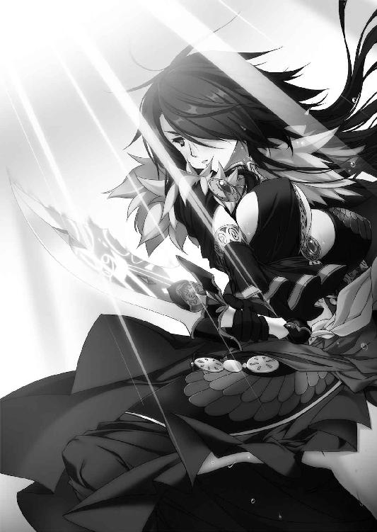
２ 蠢動
王宮の一室に、数人の男たちが集まっている。
部屋の中央に置かれた大きなテーブルを囲んで、彼らは真剣な視線をかわしあっていた。年齢はばらばらで、二十代であろう男もいれば、三十代とおぼしき男もいる。
彼らに共通しているのはブリューヌ貴族であることと、レギンを軽蔑し、ティグルを憎悪し、その二人に殺意すら抱いていることだった。仲間しかいないこの場では、負の感情を隠す必要がない。男たちの両眼は昏く濁り、顔つきはひどく歪んでいる。
この中でもっとも年長だろう男が、淡々とした声で言った。
「ティグルヴルムド＝ヴォルンが王都に着いたそうだ。ジスタート軍もいる」
「英雄様の凱旋か。ジスタートの犬が、いい気なものだ」
別の男が苦々しい顔で吐き捨てる。
「あの小僧がテナルディエ公に正面から挑み、あまつさえ勝ったというのが、いまだに信じられん。物陰に隠れて毒矢でも射放ったのではないか」
「ありうることだ。弓矢ごときで、あのロランやテナルディエ公と戦えるものか」
「あるいは、ジスタート軍に助けられたのを自分の手柄にしているのかもしれん」
二、三人が口々にティグルを中傷し、嘲弄した。彼らにとってティグルは何の能力もない辺境の小貴族であり、ジスタートの操り人形であり、レギンに媚びへつらう恥知らずだった。若者の弓の技量はもちろん、戦場の功績すら認める気はなかった。
話の口火を切った最年長の男は彼らに冷ややかな視線を向けたが、咎めようとはしなかった。別の男に視線を転じて、静かな口調で尋ねる。
「ヴォルン伯爵とジスタート軍が王宮に三日間留まるというのは、たしかか」
最年長の男が言葉を発すると、それまでティグルを罵倒していた者たちはいっせいに口をつぐんだ。尋ねられた男はうなずいて答える。
「間違いない。武具や食糧を用意するのにそれだけの時間がかかると」
その言葉を受けて、最年長の男は仲間たちを見渡し、悠然と言った。
「予定通りに決行する。ヴォルン伯爵が王宮に来たことで、レギン王女の気は緩んでいるだろう。ヴォルン伯爵も王宮に入って安心しているに違いない」
彼らの目的は三つ。王宮の一室に閉じこめられたメリザンドの救出。ティグルの暗殺。そして、レギンを捕らえて人質とし、最終的には殺害することだ。
彼らにやましさはない。彼らにとってレギンはまがい物の王女であり、メリザンドこそが仰ぐべき主だった。王子として育てられたなどという奇妙な過去を持つレギンよりも、まぎれもなく王家の血を引くメリザンドの方が王女にふさわしいと信じている。
ティグルの存在も放っておけなかった。レギンだけを殺した場合、ティグルがジスタート軍を本格的に招き入れてブリューヌを売り渡すのではないかと、彼らは疑っている。
「狙うのは、あくまでヴォルンとレギンだな？ マスハス＝ローダントやユーグ＝オージェ、ピエール＝ボードワンらは放っておくと」
ひとりが手を挙げて、確認するように尋ねる。その問いに答えたのは別の者だった。
「やつらの専横も、レギンとヴォルンの存在あってこそだ。肝要なのは根を絶つことだ」
「ジスタートの連中はどうする。レギンは彼らに滞在を勧め、もてなそうとするだろう」
「放っておけ。ヴォルン伯爵が死ねば、ジスタート軍は我が国にいる理由がなくなる。そのあとは、メリザンド様がやつらと正式に交渉なさるだろう」
最年長の男がそう答えると、男のひとりが賛同するようにうなずく。
「我々も数は多くない。狙いは絞るべきだ」
その言葉を聞いた別の男が、不満も露わに苦情を述べた。
「いまさら言っても仕方のないことだが、もう少し数を増やせなかったのか。レギンやヴォルンの存在を許せぬという者は、もっといるはずだろう」
「無理だ。これ以上増やしたら、間違いなくボードワンに気づかれる。現在の数だって、連中がザクスタンへの対応に追われているからこそ、隠し通せているんだ」
「ことを為すのに、この数で不可能ということはない」
最年長の男が、静かな声音で割って入る。それによって二人の男は激発をおさえ、それぞれ椅子に座り直した。一呼吸の間を置いて、最年長の男が尋ねる。
「だが、まだ答えを待っている者がいるのではなかったか」
「今日の夕方までには答えをもらうことになっている」
問われた男が答えると、さきほど数に文句を言った男が疑念の声を発した。
「だいじょうぶなのか？ ここへ来て、我々の計画が漏れるようなことは......」
「まだ詳細は話していない。その男を問い詰めても、何も出てこない。それから、アルマンはどうする。あの男にもまだ話していないが」
アルマン子爵は光輪祭においてメリザンドに従い、不敗の剣の偽物を破壊した男だ。最年長の男は首を横に振った。
「アルマンは泳がされている。決行直前まで接触するな。あの男はメリザンド様に忠誠を誓っている。事情を話せば、一も二もなく我々に同行するだろう」
その言葉に、テーブルを囲む男たちは無言でうなずいた。彼らはアルマンを評価していなかったが、メリザンドへの忠誠心だけは認めていた。メリザンドもそれがわかっているからこそ、子爵でしかない彼を可愛がり、光輪祭にともなったのだ。
「数といえば、ネメタクムから何か連絡はあったか」
「ああ。コティヤール伯爵が一万の兵を集めたそうだ」
最年長の男が答えると、男たちの何人かが勝利を確信した笑みを浮かべる。
メリザンドを擁する自分たちが王宮を内部から制圧し、レギンを人質とする。それに呼応して、コティヤール伯爵が一万の兵を率いて王都へと向かう。その段階で、ザクスタン軍も公にメリザンドを支援する。それが彼らの計画だった。
メリザンドが新たな王女となり、彼女のもとで自分たちが権力を握る。反発する者が現れたとしても、手元に一万の兵があれば圧倒することは可能だ。
また、かつてテナルディエ公爵に従っていた者ならば、その妻だったメリザンドに恭順の意を示すだろうという計算もある。
「ジスタートの連中のことだが」
さきほど、そのことに言及した男が再び口を開いた。
「彼らはヴォルンを守る可能性がある。ヴォルンが彼らのところへ逃げこむ可能性も。そうなった場合の対処だけ、決めておきたい」
男たちは顔を見合わせる。彼らにしてみれば、あり得る話だった。
「やむを得ん。その場合はジスタート人を斬るしかあるまい」
「ああ。いっそ、その罪はヴォルンに着せてしまうか。やつの首は王都に晒すとしても、首から下はジスタートへ送ってもよい」
「ヴォルンはジスタートと密約をかわしているという噂だ。噂とはいえ、そうでもなければ、何の力もない小僧が二度もジスタートの協力を得ることなどできぬだろう。密約のことで話がこじれて、ヴォルンと争いになった。そういうことにするか」
「それでかまわないが、あくまでジスタート人を巻きこむことになった場合だ」
釘を刺すように言ってから、最年長の男は再び仲間たちをぐるりと見渡す。
「繰り返すが、王宮にいる同志の数は多くない。だが、短時間で決着をつけるには、同時にことを起こさねばならぬ。我々の狙いはメリザンド様の救出、レギン王女とヴォルン伯爵の抹殺だ。そのことを徹底してくれ」
その言葉が締めくくりとなって、男たちの会合は終わった。
◎
王宮に入ったティグルたちを出迎えたのは、セルペット男爵という若い貴族だった。年齢は二十代半ばというところか。宮廷に勤める文官のひとりだが、日に焼けた精悍な顔からは、むしろ戦士らしさがうかがえる。
「はじめまして、ヴォルン伯爵。武勲誉れ高い閣下にお目にかかれて光栄です」
「恐縮です」
セルペットの差しだした手を握り返し、ティグルは会釈する。ジェラールの話では、セルペットはいわゆる中立派ということだった。積極的にレギン王女を支持しているわけではないが、不満や反発を表明しているわけでもないという。
こうした態度をとる者は、決して少なくない。もともとブリューヌでは、王女の王位継承権は非常に低い。直系の王女と傍系の王子がいる場合、よほどのことがなければ傍系の王子が優先されるほどだ。
加えて、レギンは自身の性別を偽っていた。二年前まで、彼女はレグナス王子として生きてきたのだ。それが、一部の貴族たちの不信を買っている。
彼らを味方にするには、レギンがブリューヌの統治者として充分な力量を持っていることを示しつつ、地道に説得を続けていくしかなかった。
ティグルたちはセルペットに武器を預ける。エレンとヴァレンティナも竜具を彼に渡した。ティグルから黒弓を受け取ったとき、セルペットはかすかに眉をひそめたものの、口に出しては何も言わなかった。
謁見の間に着くと、セルペットは一礼して歩き去る。ティッタやリム、ルーリックなどはこの場で待ち、ティグルをはじめとする六人だけが中に入るのだ。
扉の両脇に立っていた兵士たちが、ゆっくりと扉を開ける。ティグルはかすかな緊張を覚えながら扉をくぐった。
広間の左右には廷臣が居並び、奥の玉座にはひとりの娘が腰を下ろしている。レギン王女だ。彼女のそばには猫を思わせる風貌の老人と、銀の胸当てをつけ、腰に剣を帯びた女性が控えていた。宰相のボードワンと、レギンの護衛を務めるセレナである。
廷臣たちの視線を浴びながら、ティグルはまっすぐ歩く。
ふと、廷臣の中にオージェ子爵の姿を認め、安心感を覚えた。ジェラールの父で、マスハスと並んでティグルが頼みとしている老人である。テリトアールの領主だが、レギンらの頼みを受けて王宮に勤めていた。
所定の位置でティグルは膝をつく。
「ティグルヴルムド＝ヴォルン。ジスタートより帰還いたしました」
レギンの言葉は、呼吸三つ分ほどの間を空けてから発せられた。
「──まずは、こうして無事に再会できたことを、ともに喜びましょう。アスヴァールでの一件、それからザクスタン軍と一戦して勝利したこと、宰相より聞いています。我が国のために、よくやってくれました。生者には祝福を、死者には祈りを」
王女の声は冷静で、どこか突き放すような響きさえ帯びている。意外な思いに駆られてティグルはそっと顔を上げた。彼女の顔に感情らしきものはうかがえない。
──あえて、想いを抑えておられるのだろうか。
レギンが変わったとは思わない。もしそうであれば、マスハスやジェラールが教えてくれるはずだ。後で確認すればいいと考え、ティグルは黙って頭を垂れる。
「月光の騎士軍とは、よい呼称ですね」
不意に、レギンが何気ない口調で言った。その途端、廷臣たちの間から低いざわめきが起こる。しかし、それは大きなものとはならず、すぐに謁見の間は静けさを取り戻した。
次いでマスハス、ブルレック、シャイエがレギンの前に膝をつく。ティグルのときと同じように、レギンは彼らにねぎらいの言葉をかけた。
エレンとヴァレンティナも、膝をつく。二人はレギンの臣下ではないが、彼女を尊重することの必要性をわかっていた。エレンは型どおりの挨拶だけですませたが、ヴァレンティナは挨拶のみで終わらせるようなことはしなかった。
「この場を借りて、王女殿下にお伺いしたいことがあります。このたびのザクスタンとの戦について、殿下はどのような終幕を考えておいででしょうか」
臆する様子もなく、優美な態度を崩さずにヴァレンティナは尋ねた。廷臣たちの何人かがレギンに興味深げな視線を向ける。黒髪の戦姫は続けた。
「私たちは我が国の王に命じられ、殿下にお力添えをするべくここまで参りました。ですが、目指すべきものがわからなければ動きようがありません。ザクスタン軍をブリューヌの地から掃討すればよいのか。それとも──兵を挙げてザクスタンに攻めこむのか」
ティグルは膝をついた姿勢のまま、驚愕の眼差しを黒髪の戦姫へと向ける。ヴァレンティナは泰然として、口元には微笑すら浮かべていた。レギンの反応を楽しむかのように。
「そうですね。同盟相手に教えないわけにはいかないでしょう」
レギンは落ち着き払った声で答えた。
「ザクスタンに攻めこむことは考えておりません。余力がないのではなく、別の考えがあるからです。我が国の政事にかかわるゆえ、いまは明かすことができませんが......」
「いえ、そのお言葉を聞けただけで充分です。感謝いたします」
ヴァレンティナはうやうやしく一礼する。レギンはティグルたちを見渡して言った。
「夜には歓迎の宴を開きます。それまではどうぞ、部屋でくつろいでください」
謁見が終わったあと、ティグルはセルペット男爵によって客室に案内された。ティッタは隣の部屋だ。エレンたちジスタート勢は、別の階にある客室へ案内されている。
セルペットが去ると、ティグルは礼装に身を包んだまま大きなベッドに寝転がった。身体に蓄積していた疲労が、一気に噴きだした気がする。それから服にしわがついてしまうことに思い至ったが、かまうものかと思い直した。髪も乱れただろうが放っておく。
顔を傾ける。太陽は中天を過ぎているはずだが、窓から射しこむ陽光はまだ明るい。昼下がりといったところだろう。
扉が外から軽く叩かれて、ティッタの声が聞こえた。ティグルが寝転がったまま返事をすると、栗色の髪の侍女は部屋の中へ入ってくるなり若者を見てたしなめる。
「ティグル様、お行儀が悪いですよ」
「行儀については明日考えるよ。今日はこのまま寝かせてくれ」
「では、お休みになる前に紅茶でもいかがですか。お湯ももう用意してあります」
ティグルたちがレギンに会っている間に、湯の手配を頼んでいたのだろう。若者は彼女の気遣いに感謝しつつ、身体を起こした。ティッタに笑いかける。
「そうだな。一杯もらえるか」
ティッタは「はい」と答えると一旦自分の部屋に戻り、必要な道具を持ってすぐに姿を見せた。ほどなく、紅茶を注いだ陶杯をティグルの前に差しだす。
礼を言って陶杯を受け取ったティグルは、立ちのぼる湯気の香りを何気なく嗅いで不思議そうな顔をした。
「いつも淹れてくれているものじゃないな、これ」
「先日、リュドミラ様からいただいたんです」
嬉しそうなティッタの言葉に、若者は青い髪の戦姫の優しげな微笑を思い浮かべる。
曾祖母から続く戦姫の血筋を誇りとし、一身に背負っているためか、リュドミラ──ミラは他者に対して厳しい態度をとりがちなところがあった。
しかし、彼女は決してそれだけの人間ではない。この紅茶と同じように相手の心をあたたかくする優しさも、しっかり持っている。
ティッタだけでなくミラにも元気づけられた気がして、ティグルは顔をほころばせた。主の表情を見てティッタも笑顔になり、室内はなごやかな空気に包まれる。
「そういえば、レギン様......王女殿下のご様子はいかがでしたか？」
王女殿下と慌てて言い直しながら、ティッタは尋ねた。以前、短い期間ながらティッタはレギンの身の回りの世話をしていたことがある。レギンはティッタに対して高圧的に振る舞うようなことはなく、二人は少しずつ打ち解けていったのだ。
「ご挨拶しかできなかったが、お元気そうだったよ」
紅茶に口をつけながら、ティグルは表情を変えずにそう答えた。思ったことを正直に話して、ティッタを不安にさせることはない。それに、宴の席で何かわかるかもしれない。
──いっそ、宴までこうしてのんびり過ごすか。
そう思ったのも束の間、その考えを吹き飛ばすかのように扉が外から叩かれた。応対に出ようとしたティッタを手で制し、ティグルは立ち上がる。まだ紅茶が半分ほど残っている陶杯をテーブルに置いて、扉に歩み寄った。
扉を開けると、灰色の官服を着た男が立っている。宮廷に勤める侍従のひとりだ。
「お休みのところ失礼いたします、閣下。王女殿下がお呼びです」
レギンの呼びだしとあっては断れない。くすんだ赤い髪をかきまわして、ティグルは気持ちを切り替える。
「すぐにまいりましょう。殿下はどちらに？」
そう尋ねたとき、侍従が顔をしかめていることに若者は気がついた。どうやらティグルの服のしわや髪の乱れが気になっているらしい。だが、侍従は口に出しては何も言わずに背を向ける。
「謁見の間です。ご案内いたします」
ティグルは首をひねった。謁見の間ならば、さきほど行ったばかりではないか。だが、侍従に間違えたという様子はない。
とにかく呼ばれている以上は行かねばならない。ティグルは侍従を待たせて、ティッタを振り返った。聞こえていたのだろう、彼女は少しだけ残念そうな顔をしたものの、すぐに笑顔をつくってティグルに歩み寄る。若者の髪の乱れをすばやく直して整えた。
「ティグル様。くれぐれも王女殿下に失礼のないようお願いしますね」
「気をつけるよ。おまえのことも、しっかり伝えておく」
礼代わりにティッタの頭を優しく撫でると、ティグルは部屋をあとにした。
柱廊の外を彩る花壇や庭園を横目に、侍従に先導されて王宮の中を歩く。その間に若者は落ち着きを取り戻して、レギンのことを考えた。
謁見の間での、作業のようだった彼女の態度を思いだす。ティグルの知る彼女らしい振る舞いではなかった。何か理由があって、そのことをこれから話してくれるのだろうか。
謁見の間の前に着いた。両開きの扉を開けると、中はがらんとして誰もいない。侍従はかまわず扉をくぐって奥へと歩いていき、ティグルも彼に続いた。
玉座の脇を通り抜けて、奥にある扉の前で侍従は足を止める。
「殿下は、この先でお待ちです」
この先には、王都の北西を見渡せるバルコニーがあるはずだ。ティグルは侍従に礼を言って、扉を開けた。細長い廊下を歩いてバルコニーへと出る。
抜けるような青空の下、赤やオレンジ色の屋根が、春の陽射しを浴びて輝いていた。
王都に水を供給する上水道や、天上神ペルクナスを奉じる神殿、中央に始祖シャルルの石像を飾った広場なども見える。目を凝らせば、大通りを歩く人々や露店の数々、吟遊詩人などの姿も見えるかもしれない。
ティグルの視界の端に、風になびく金色の髪が映った。バルコニーに立ってにぎやかな王都の町並みを見下ろしていた少女が、髪をかきあげながらこちらを振り返る。言うまでもなくレギンだ。
彼女の碧い瞳が一瞬輝いたように思われたが、それはティグルの気のせいかもしれなかった。若者に身体ごと向き直ったとき、レギンは謁見の間で見たときと同じ無表情になっている。ティグルはかすかな落胆を覚えずにはいられなかった。
どこか事務的な口調で、金髪の王女は言った。
「わざわざ呼びだしてすみません。あなたに聞きたいことがあったものですから」
「どのようなお話でしょうか」
「アスヴァールであなたが成し遂げたこと。それから、先日のザクスタンとの戦いのことを。謁見の間でも言ったように宰相殿から報告は受けていますが、あなた自身から話を聞きたいのです。それから、ジスタートでどのように過ごしていたのかも」
レギンの声は仕事を処理するかのように平坦だったが、最後の台詞を発するときだけ、かすかに震えた。ティグルをまっすぐ見つめていた碧い双眸が、言い終えたときにはバルコニーの灰色の床に向けられている。その表情は、何かに耐えているようにも見えた。
「殿下......。もしかして、ご体調が優れないのでは？」
気遣ってティグルは声をかけたが、レギンは首を左右に振る。
「そんなことはありません。それよりも話を──」
「わかりました......」
その答えには納得しかねたが、まさか王女に向かって問い詰めるわけにもいかない。アスヴァールでの出来事を思いだしながら、ティグルは説明をはじめた。
マトヴェイやオルガとの出会い、タラードという男、ジャーメイン王子やエリオット王子のこと、ソフィーヤ──ソフィーの救出など、いざ話しはじめると頭の中でさまざまなことが思いだされて、考えていた以上にティグルはしっかりと話すことができた。
レギンは基本的に黙って聞き役を務め、気になることがあったら質問をするという具合だ。とくに彼女が興味を持ったのは、タラードとギネヴィア王女のことだった。
「タラード卿のことは私も聞いています。将軍としても、統治者としても、優れた資質を持った方のようですね」
「そうですね。彼には、より上を目指す強い意思があります。アスヴァールで重要な存在となるのは間違いないかと」
タラードには王になるという野心がある。ティグルはそのことに触れるべきか迷った末に、遠回しな表現を使った。しかし、それは無駄な配慮だった。
「ギネヴィア王女と恋仲であり、いずれは王になるだろうとも噂されていますね」
レギンの言葉に、ティグルは呆然とした顔で彼女を見つめる。金髪の王女は若者の反応を見て、つまらなそうに目を細めた。
さらにタラードやギネヴィアのことを聞いたあと、レギンは次の話題に移る。
ザクスタンとの戦いについて話す前に、ティグルはジスタートのヴィクトール王から金貨と馬車の褒美をもらったことを報告した。謁見の間でそのことに触れなかったのは、無用な疑いを招くことを避けるためだ。
レギンは小首をかしげて視線を宙にさまよわせると、ごく当たり前のことについて話すような口調で言った。
「では、我が国もジスタートと同じか、それ以上の報奨をあなたに与えましょう」
ティグルは絶句する。金貨の詰まった樽を満載した馬車の群れが自分の屋敷を取り囲む光景を想像して、背筋が寒くなった。
金貨はともかく、馬は世話をしなければならず、馬車は手入れをしなければならない。
国王や王女から賜ったものを、粗末に扱えるはずがない。ヴィクトール王からの褒美でさえ、正直にいえば持て余しているのだ。この上、レギンからも同じ褒美を受けとったら、ティグルは心労で倒れるだろう。
「身に余る光栄ですが、殿下。私がアスヴァールへ赴いたのは、ヴィクトール王の要請があったからです。むろんブリューヌのためになるとの思いもありましたが......」
「あなたの活躍がブリューヌの名誉を高めたのは事実です。それに対して報いるところがなければ、私が統治者としての器量を問われるでしょう」
レギンの言うことはもっともだった。功績が正しく評価されなければ、それは必ず歪みを生む。ティグルにしても、アルサスから連れてきた兵が武勲をたてれば褒美を与えなければならず、金銭はいくらあっても困ることはないのだ。
しかし、そこまで言ったところでレギンは若者が困っていることに気づいたらしい。一呼吸ほどの間を置いて言葉を続けた。
「......とはいえ、あなたには、南から攻めてきたザクスタン軍を退けた功績もあります。報奨の具体的な内容については、後日あらためて決めることとしましょう。それでは、ザクスタンとの戦いについて聞かせていただけますか」
「かしこまりました」
内心で安堵の息をつきながら、ティグルは考えをすばやくまとめる。ジスタートから帰還して、マスハスと合流を果たしたところから説明をはじめた。敵将クリューゲルとの戦いにおいて、ヴァレンティナから知恵を借りたことも隠さず話す。
レギンは何ごとかを考えこむように顔をしかめた。
「エレオノーラ殿の為人は、私なりに知っているつもりです。ヴァレンティナ殿はどのようなお人柄なのですか」
「私も彼女のことを詳しく知っているわけではありませんが......。有効とあれば、苛烈な手段もためらわない決断力を持っている方です」
「ジスタートは人材の宝庫ですね」
王都の町並みに目をやって、レギンはため息をつく。まったく同感だとティグルは思ったが、口に出すことは避ける。王女はあきらかに落ちこんでいたからだ。
「私が会ったかぎりでは、戦姫の方々には話の通じないような方はおりません。何かあったときは、私を使者としていただければ──」
彼女を励ますつもりでティグルは言ったのだが、半ばで言葉を呑みこんだ。自分を見るレギンの表情が、あきらかに不満そうなものになったからだ。
「ヴォルン伯爵は、ずいぶんと戦姫殿に好かれているという自信がおありなのですね」
「いろいろとあったので、まあ、それなりには......」
言葉を濁しつつそう答えると、レギンはますます不機嫌そうな顔になる。
「言い方を考えなさい。それでは王宮の内外にはびこるくだらない噂を肯定することになりかねません」
「軽率でした。申し訳ございません」
若者は深く頭を下げた。レギンのもの言いは手厳しいが、正しい。何より、この噂はエレンたちにも迷惑がかかるのだ。疑われるような真似は慎むべきだった。
「──以後、気をつけなさい」
短い沈黙を挟んで、レギンは言った。ティグルは恐縮しつつ顔を上げる。
「ザクスタンとの戦いについては、よくわかりました。これからのことですが──」
口調をあらたまったものに変えて、レギンは話題を転じた。
「この戦が終わったら、王宮に勤めていただけませんか」
碧い双眸が静かにティグルを見つめている。来たか、とティグルは思った。
「ありがたいお言葉ですが、私は王宮のことなど何も知らない、田舎育ちの小貴族です。そのような者が王宮に勤めれば、すでに王宮に勤めている貴族諸侯がいい顔をしないでしょう。何より、私は生まれ育ったアルサスを愛しています」
事前に考えていたということもあるが、何よりも素直な心情であったために、ティグルはつっかえることなく答えることができた。しかし、レギンも簡単には引き下がらない。
「不愉快なことを言う者がいれば、私が手を打ちましょう。また、アルサスに戻るなとは言いません。一年のうちの夏の間、あるいは冬の間だけなら戻れるようにします」
「──王女殿下」
意識して声に抑制をきかせながら、ティグルは尋ねた。
「なぜ私を王宮にお招きになるのか、殿下のお考えを聞かせていただけませんか」
理由はいくつか考えられる。現在のブリューヌにおいて、ティグルに比肩する武勲の持ち主がいないこと。ジスタートともっとも交流のある貴族が、ティグルであることだ。
さらに、レギンの側近の中にはマスハス、オージェといったティグルと親しい者たちがいる。ティグルが王宮に勤めれば、彼らの立場も強くなるだろう。
王都に着くまでの間に、ティグルは今後のことについてマスハスと話しあった。灰色の髭の老伯爵も、ティグルがアルサスを離れて王宮に勤める可能性を否定しなかった。その根拠となるものが、これらである。
しかし、これはあくまでティグルたちが予想したものだ。
ティグルは、レギンの考えを彼女自身から聞きたかった。
はたして、金髪の王女の口から出てきた答えは、若者の予想の域を出なかった。
二年前のブリューヌでの内乱、その最中に起きたムオジネルとの戦い、昨年のアスヴァールでの内乱、先日のザクスタンとの戦いにおける輝かしい勝利をレギンは挙げた。
さらに、ティグルがジスタートおよびアスヴァールの者と交流があり、彼らに高く評価されていること、私心のなさ、民や兵への寛容さを付け加える。
「あなたのような方にこそ、私のそばにいてほしいのです」
そう言葉を結んだレギンを、ティグルは戸惑いを隠せない顔で見つめた。
彼女は間違ったことを言ってはいない。だが、レギンの言葉は無味乾燥な文章を読みあげるのにも似た、どこか空虚なものとして若者の耳に届いた。
「......考えさせていただけませんか」
レギンから視線を外して灰色の床を見つめながら、ティグルはそう答える。二人の間に冷たい風が吹きこんだ。金髪の王女は感情に欠けた声で「わかりました」と答えたあと、それだけではもの足りないと思ったかのように、言葉を続ける。
「ごめんなさい。あなたはブリューヌに帰ってきたばかりだというのに、このような話をして。さすがに性急でしたね」
そして、ザクスタンとの戦が終わったあとにあらためて答えを聞かせてほしいとレギンは言い、ティグルはうなずいたのだった。
◎
ティグルが謁見の間の奥にあるバルコニーでレギンと話していたころ、エレンは用意された部屋の中で、早くも退屈を持て余していた。
普段の彼女は、必要と感じれば丸一日でもじっとしていることができる。だが、いまはどうもおとなしくしていることができなかった。ベッドに寝転がったかと思えば起きあがり、部屋の中を意味もなく歩きまわる。
壁に立てかけられている姿見鏡を見れば、不満を募らせた顔が映っていた。
王宮の客人となってしまえば不愉快な視線にさらされ、自由に動きまることなどできない。それを承知の上で引き受けたつもりだったが、不自由さは予想以上だった。
いまの彼女がティグルに会おうとすれば、それだけで疑惑を招いてしまう。たとえ世間話をしたいだけだとしても、この王宮にいる者たちの何人かは信じないだろう。
チェスを用意してもらい、隣の部屋にいるリムを呼んで暇を潰すことも考えたが、気分が乗らなかった。いまの自分にリムをつきあわせるのは可哀想だ。
ふと、エレンの口元にいたずらを思いついた子供のような笑みが浮かぶ。白銀の髪の戦姫はテーブルに置かれていた鈴を手に取り、軽く鳴らして侍女を呼んだ。しばらくして、恰幅の言い中年の侍女が現れる。
「姫さま、いかがなさいました」
エレンはおもわず苦笑した。間違いではないが、姫さまという呼称がおかしかったのだ。不思議そうな顔をする侍女に、エレンは気にするなというふうに笑いかける。
「じっとしているのも退屈でな。この王宮には眺めのいい庭園や花壇が多いと聞いた。案内してくれないか」
「かしこまりました。いまの季節は、どの庭園も色とりどりの花が咲いておりますから、きっと楽しんでいただけると思いますよ」
ひとのよさそうな侍女は相好を崩して、先導するように廊下を歩きだす。侍女の後について歩きながら、エレンは心の中で彼女に謝った。白銀の髪の戦姫の目的は、花とは別のところにある。
長い廊下を歩き、何度か角を曲がり、柱廊を抜ける。諸王の石像を飾った庭園や、花壇に彩られた中庭をエレンと侍女は見ていった。侍女の丁寧な説明をほとんど聞き流し、石像や花を見ているふりをしながらエレンは気配をさぐる。
思った通り、一定の距離を保って自分たちの後をつけている者がいた。
──二人いるな。だが、組んで行動しているというわけではなさそうだ。
おそらく自分を監視しているのだろう二人のうち、ひとりは尾行が上手ではない。何気なさを装って首をかしげながら視線を走らせると、物陰に身を寄せているのが見える。
しかし、もうひとりはそんな隙をまったく見せなかった。視線は感じるものの、明確な位置を容易につかませない。
──下手な方が私を油断させるための囮で、上手い方が本命ということかな。
ここまで相手の様子をうかがっていたが、立ち去るつもりはなさそうだ。いいかげん、こちらから接触してみてもいいだろう。
物陰に隠れている者との距離を、エレンは慎重に測る。侍女に花を一本もらい、その香りを楽しんでいるように振る舞いながら廊下を歩いて、相手との距離を縮めた。気づかれていないと思っているらしく、相手はその場から動かない。
床を蹴る。獲物に飛びかかる猛禽のような速さで、エレンは相手の正面へと回りこむ。
見覚えのある顔だった。たしか、自分たちを謁見の間に案内したセルペットとかいう男だ。日に焼けた顔は、不意を突かれた驚きに引きつっている。
「さっきからこそこそと私をつけまわして、いったい何が目的だ？ 私の美しさに見とれてしまったというなら、堂々と正面から見ればいいだろう」
高圧的な冷笑を叩きつけながら、エレンは手に持っていた花をセルペットの鼻先につきつけた。セルペットは狼狽も露わに、呻き声を発して首を横に振る。
「いえ、違うのです。戦姫殿。これには、事情がありまして......」
「セルペット男爵、だったな？ 拝聴しよう。内容によっては、レギン殿下に報告させてもらうからな。むろん、ごまかそうとしてもだ」
冷や汗を額ににじませながら、セルペットはエレンを守るために後をつけていたのだと説明した。
「我が国の不名誉をお聞かせして汗顔の至りですが、ジスタートの人間というだけで過剰に警戒する者がいるのです。彼らが戦姫殿によけいなちょっかいを出してきたら、すぐに飛びこもうと考えて、後を追っていました」
「なるほど、ありがたい話だな。しかし、レギン王女殿下からは何も聞いていないが。あなたは誰の指示で私の護衛をしている？」
「むろん自分の意思です。ジスタートはブリューヌにとって貴重な友邦。その信頼関係に傷がつくような事態は避けねばなりません。さらに申しあげれば、あなたのような美しい方を災厄から守るのは男として当然の義務でありましょう」
落ち着きを取り戻したのか、セルペットは身振り手振りをまじえてよどみなく言葉を紡ぐ。エレンは紅の瞳に呆れの色を浮かべて若い男爵を見た。言い逃れの嘘だとしても、とっさにこれだけ言えるのはたいしたものだ。
「あいにくだが、あなたが語ったような事情はとうに承知している。その上で私はここにいるのだ。せっかく花を愛でているのに、興をそぐような真似は謹んでもらいたい」
言い捨てて、エレンは庭園に足を向ける。その背中に、セルペットが声をかけた。
「戦姫殿。もしよければ、ひとつ教えていただきたいことがあるのですが......」
エレンは足を止め、首をひねって視線だけを男に向ける。セルペットは顔を伝う汗も拭かずに、緊張した表情で疑問を発した。
「二年前、あなたはなぜ、異国人のヴォルン伯爵に協力したのですか？」
「それを聞いてどうする」
「知りたいのです。戦姫はジスタート王国において国王に次ぐ存在であり、己の意思で数千の兵を動かせると聞いております。あなたの協力がなければ、ヴォルン伯爵の現在はなかったでしょう。ですが......」
エレンの反応をうかがうように、セルペットは一度言葉を切る。エレンは無言で男の視線を受け止め、続きを促した。舌で唇を舐めてからセルペットは口を開く。
「あなたが彼に力を貸した理由が、わからない。あなたがヴォルン伯爵とはじめて出会ったのは、二年前のディナントの戦場だ。それ以前は交流がない。つまり、たった数十日の間に、あなたとヴォルン伯爵との間に何かがあった。数千の兵を気前よく貸せるほどの」
しゃべるほどに、セルペットの目は熱を帯びて異様な輝きを放った。エレンはうんざりした顔になり、ぞんざいな口調で男に尋ねる。
「で、何があったとおまえは考えている？」
エレンの怒りを呼び起こしたことに気づいて、セルペットは慌てて両手を左右に振る。
「それがわからないので、教えていただきたいのです。辺境の地を治める身に過ぎないヴォルン伯爵が、あなたに何を提供したのか。あなたを満足させるような何かを、彼は持っていたのか。持っていなかったとしたら、どのような言葉や感情を通わせたのか」
セルペットが言い終えるまでの間、エレンは右手に持った花を握り潰してしまわないように自分をおさえなければならなかった。ようするに、この男はエレンとティグルの間に男女の関係があったのではないかと疑っているのだ。
──いや、そう思っているふりをして、私を挑発しているのかもしれんな。
相手の意図が何であるにせよ、こういう手合いの相手は慣れている。エレンはことさらに優しげな微笑を浮かべてセルペットを見た。
「そこまで聞きたいのなら答えよう。己の領地の民を助けたいと願う、ヴォルン伯爵の真摯な想いに心を打たれたのだ。私もヴィクトール陛下より公国をひとつ賜った身でな。民を守ろうとする想いは、よくわかる」
精悍な顔だちの青年貴族は、しらけた顔でエレンを見つめる。ほしいのはそんな言葉ではないというかのように。白銀の髪の戦姫はかまわず言葉を続けた。
「もっとも、万人に理解を求める気はないぞ？ あのときは、テナルディエ公爵やガヌロン公爵の威に打たれてちぢこまっていた者もずいぶんいたからな」
痛烈な皮肉に、セルペットが眉を吊り上げる。二年前の内乱で、セルペットが誰に従っていたのかエレンは知らない。だが、彼が『銀の流星軍』にいなかったことだけはわかっている。この際はそれだけで充分だった。
とっさに反論の言葉が出てこないらしいセルペットに、エレンは今度こそ背を向ける。
「好奇心を持つのはけっこうだが、時間は有限だ。困ったときに周囲から力を貸してもらえるよう、自己の研鑽に励んだ方がよいのではないか」
それ以上は彼を相手にせず、悠然とした足取りでエレンは庭園に歩いていった。背後でセルペットの足音が遠ざかっていく。
面倒な相手を追い払ったエレンだが、彼女の機嫌はよくなるどころか悪化した。もうひとり、エレンの様子をうかがっていた人物が、ぱちぱちと小さく拍手をしながらこちらへ歩いてきたからだ。
「つい聞き入ってしまいましたわ。名演説でしたね、エレオノーラ」
長い黒髪に、薔薇をあしらった純白のドレス。ヴァレンティナだった。
「あなたがヴォルン伯爵をどれほど大切に想っているのか、よくわかりました」
エレンは足を止め、剣呑な眼差しを彼女に向ける。ヴァレンティナが何を考えているのかはわからない。だが、自分は決してティグルに対する感情だけで動いたのではないと、しっかり言っておく必要はあった。
「己の領地を無法な輩に荒らされ、踏みにじられることの怒りと悲しみ。嘆き。治めるべき地を持つ者なら誰もが抱く想いだ。戦姫のおまえにわからないはずはあるまい」
「ええ、わかります。でも、彼の疑問ももっともだと思います。その義憤だけで、アルサスを救いに行くという判断を下せるものでしょうか」
小首をかしげて、無邪気にヴァレンティナは問いかけてくる。エレンは腕組みをして、そんなことかと言いたげな笑みを浮かべた。
「その甲斐があったことは、先日この目で確認できた」
彼女の脳裏に浮かんでいるのは、先日アルサスを通過した際に受けた歓待の情景だ。
今後、ライトメリッツの人間がブリューヌを旅することがあったとき、アルサスの人間は好意的な対応をしてくれるだろう。
ライトメリッツの人間にしても、ヴォージュ山脈を抜ければアルサスで人心地がつけるという確信を持てれば、なるべくアルサスを通過しようとするに違いない。
旅をする者にとって、安心できる場所があるというのがいかに大切か、エレンはわかっている。そして、これはヴォージュの山道を整備してブリューヌとジスタートの交流を活発にするというエレンの目的に合致するのだ。
だが、そのことをわざわざヴァレンティナに説明するつもりはない。エレンは話題を変えて、率直に疑問をぶつけた。
「そんなことより、どうして私をつけていた？」
「退屈だったものですから」
豊かな胸の前で手を合わせながら、悪びれずにヴァレンティナは答えた。
「ちょっと部屋を抜けだして、王宮の中を散策してみようかと思いまして。そうしたら、廊下を歩いていくあなたの後ろ姿を見かけて、つい」
肩を震わせて、エレンはヴァレンティナを睨みつける。彼女を怒鳴りつけたくなる衝動に、懸命に耐えねばならなかった。
「ブリューヌの者たちがおまえの怪しげな動きを見て、何かたくらんでいるのではないかと疑ったらどうするつもりだ。ティグルを困らせるような真似をするんじゃない」
「エレオノーラは、ヴォルン伯爵が本当にお好きなんですね」
声をおさえながらのエレンの叱責を微笑で受け流し、ヴァレンティナは頬に手をあてて楽しそうに白銀の髪の戦姫を見つめる。エレンはすぐには言い返さず、腕組みをしてヴァレンティナから視線をそらした。
「どうしても、私がティグルを好きだということにしたいのか」
「太陽祭であれほど仲睦まじくしていたではありませんか。腕まで組んで」
「腕ならリュドミラのやつだって組んでいただろう。協力者の足を引っ張るような真似はしたくない。私が考えているのはそれだけだ」
「本当にそう考えているのなら、ヴォルン伯爵に気を遣うのではなく、彼に言うべきでしょう。ブリューヌはつまらないことをして、我々の足を引っ張るべきではないと」
エレンは苦虫を噛み潰したような顔になる。ヴァレンティナの言葉の正しさを、彼女は認めざるを得なかった。渋々という感じでエレンは反論する。
「よそ者が嫌われるのは世の常だ。別に、ここに何日もいるわけではないしな」
「あなたらしくもない、ずいぶんと後ろ向きな考え方ですね。今回のことを話して、ヴォルン伯爵に何かおねだりしてみてはいかがです？」
「......ヴァレンティナ。おまえは何か誤解しているようだが」
こみあげてくる苛立ちをおさえつけ、平静を装ってエレンは言葉を続けた。
「私とティグルは戦友だ。その技量も人格も信頼しているが、おまえの思っているような関係ではない」
「あら、それでは生まれたばかりの姿をじっくり見られてしまったり、身体を触られてしまったりした私の方が、彼とはより深い関係にあるのでしょうか」
「何のことだ」
無意識のうちにエレンの声が低くなる。ティグルにどこか間の悪いところがあるのは知っているし、偶然や不注意によるものは仕方がないと思っていたが、ヴァレンティナにまで何かやらかしてしまったのだろうか。
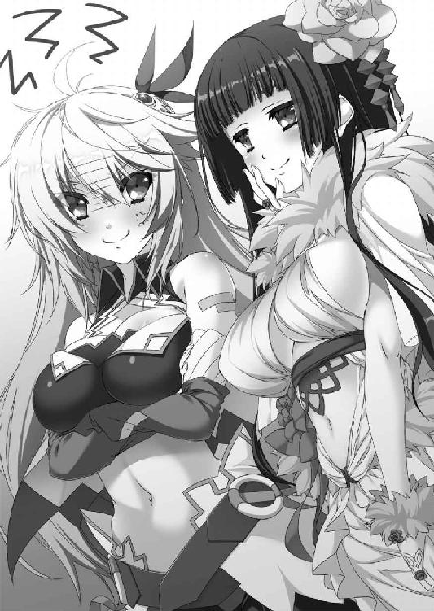
黒髪の戦姫はおおげさに肩をすくめて一歩後退する。
「顔が怖いですよ、エレオノーラ」
「顔のことはいいから、詳しく話してもらおう。私はティグルの協力者だからな。あいつの不始末は知っておく必要がある」
「不始末というほどのことではありません。若い男女が何もまとわずに見つめあい、触れあっただけです。気になさらないでくださいな、エレオノーラ」
くすくすと笑うヴァレンティナを見て、ようやくエレンはからかわれていることに気がついた。彼女は最初から答える気などないのだ。
──こいつから無理に聞きだす必要はない。あとでティグルに聞けばいいことだ。
エレンはため息をついて、庭園に視線を向ける。ここまで案内してくれた中年の侍女と目が合った。彼女はごゆっくりとでもいいたげな笑顔で、エレンたちに会釈する。
侍女に目礼を返しながら、ヴァレンティナはエレンに言った。
「あなたは、この状況を利用しようとは思わないのですか？」
「どういう意味だ？」
唐突で漠然とした問いかけに、エレンは眉をひそめる。黒髪の戦姫はくすりと笑った。
「あなたがご執心のヴォルン伯爵のことです。彼を、このブリューヌから排除したがっている者たちがいるでしょう。彼らを使えば、ヴォルン伯爵をあなたの公国へ連れてくることもできるのではないですか」
ブリューヌの貴族たちに、ティグルを追いださせてしまえ。ヴァレンティナはそう言っているのだ。エレンは目を細めて、軽蔑の笑みを浮かべる。
「本当に、おまえはそういうやり口が好きだな。だが、私は好きじゃないんだ」
「それは立派な心がけですが、そんなことをしていると、そういうやり口を辞さない者に大切なひとを奪られてしまうのではないかしら。彼はずいぶん人気者のようですし」
ヴァレンティナの台詞は、エレンの痛いところを突いた。太陽祭で他の戦姫たちがティグルと親しくしていた光景が、白銀の髪の戦姫の脳裏をよぎる。
レギンに謁見したときも、彼女の碧い瞳にティグルへの好意がにじんでいるのを、エレンは見逃さなかった。彼女は月光の騎士軍という呼称を短く褒めたが、おさえきれなかった好意があふれたものだとエレンは思っている。
エレンが黙っているからか、黒髪の戦姫は言葉を続けた。
「私は、ほしいと思ったものを手に入れるためには手段を問いませんわ。手段を選べるほど自分が有能ではないことを、わかっていますもの」
庭園から吹きこんできた風が、二人の髪をなびかせる。
エレンが何か言おうとしたとき、ヴァレンティナが先に動いた。
「そろそろ戻りますね。さすがに疲れてしまいました」
白銀の髪の戦姫の脇をすり抜けて、黒髪の戦姫は廊下を歩いていく。
呼び止めようとまでは思わなかった。エレンは言葉を発しかけた口をつぐみ、遠ざかっていく彼女の背中を無言で見送った。
エレンと別れて廊下を歩きながら、ヴァレンティナ＝グリンカ＝エステスはこれからどうするべきか考えを巡らせていた。
──ティグルヴルムド＝ヴォルン......。
いま、彼女がもっとも興味を持っている男の名を、声には出さずつぶやいてみる。
クリューゲル将軍に率いられたザクスタン軍との戦いで、ヴァレンティナにとっては残念なことがひとつだけあった。
黒い弓の力を、ティグルは使わなかったのだ。あの力を使えば、クリューゲルを丘砦もろとも吹き飛ばすことができたはずなのに。
ヴァレンティナとしては、ティグルと行動をともにしているこの機会に、黒い弓の力がどのていどのものなのか確認しておきたいところだった。
──もう少し追い詰められなければ駄目ということでしょうか。
さすがに命の危機が迫れば、ティグルも黒い弓の力を使うことをためらわないはずだ。そして、彼女にとっては幸いなことに、この王宮には使えそうな材料がある。
──セルペット男爵、といいましたね。
自分たちを謁見の間まで案内し、さきほどエレンにあしらわれていた青年貴族の顔を、ヴァレンティナは思い浮かべた。
自分たちを謁見の間まで案内する役目を任された男だ。普段のセルペットは、ティグルやジスタート人に好意的な言動をしているに違いない。
しかし、黒髪の戦姫は知っている。礼儀正しく振る舞っていたセルペットが一瞬、強烈な負の感情を帯びた視線をティグルに向けたことを。それを見逃さなかったのは、セルペットの表情や態度をそれとなく観察していたヴァレンティナだけだろう。
──エレンに、ヴォルン伯爵との仲を疑うような台詞を並べていましたが。
あれも、いかにもわざとらしい。ティグルへの視線もあわせて考えると、セルペットはくすんだ赤い髪の若者がジスタートの手先だと疑っているのではないだろうか。
──ちょっと揺さぶってみましょうか。
自分の部屋に戻ったヴァレンティナは、侍女を呼んで飲みものを用意してもらうと、しばらく彼女と世間話に興じた。談笑しながら、どの貴族が王宮のどのあたりに部屋を与えられているのかといったことを、ヴァレンティナは巧みに聞きだしていく。
頭の中に、ヴァレンティナは王宮の図面を少しずつ描く。エレンを尾行したのも、本当の目的は王宮のつくりについて少しでも知るためだった。
半刻近い時間が過ぎたあと、黒髪の戦姫は「楽しませていただきましたわ」と侍女に礼を言い、金貨を一枚渡して退出させた。
ひとりになった部屋で、ヴァレンティナは紙とペンを用意する。整ったブリューヌ語で次のような文を書きあげた。
『ティグルヴルムド＝ヴォルンは、ブリューヌの領土を割譲する密約をジスタートとかわしている。ジスタートが協力しているのは、第二のアニエスを得るためである。ヴォルンが王宮を発つ前に討つべし』
アニエスは、ブリューヌの南東にある地だ。二年前の内乱がレギンの勝利に終わったあと、ファーロン王は己の名でアニエスをジスタートに割譲した。協力への礼というだけでなく、ジスタートをムオジネルに対する盾として活用しようという意図が彼にはあった。
その意図を見抜いた上で、ジスタートはアニエスをもらい受けた。アニエスを得れば、ジスタートは南の海へ出られるからだ。その魅力は大きかった。
だが、ブリューヌ貴族の誰もがファーロンの意図を察したわけではない。領土の割譲を屈辱的なことと考える者もおり、それがレギンへの不審にもつながっている。
あとは、この一文がセルペットの手に届くようにすればよい。
もしもセルペットがティグルの殺害に成功したとしても、それはそれでかまわない。黒い弓の力について考える必要がなくなるからだ。それに、ティグルを失うことでブリューヌが混乱に陥るのは、ヴァレンティナにとって望むところである。
「メリザンドについては、お手並み拝見といきましょうか」
ティグルから聞いた話や、王宮に漂う雰囲気、さらにヴァレンティナがブリューヌの地を踏むまでに集めていた情報を総合すると、メリザンドとその一派は何ごとかを計画し、まだ諦めていないようだ。
──彼女がザクスタンと通じていたことを考えると、数日中には行動を起こすでしょうね。目的はやはりレギン殿下の身命かしら。
メリザンドの狙いについて、ヴァレンティナは何通りかの答えを推測し、またそれらへの対応をひとつひとつ考えておく。メリザンドたちの計画は失敗する可能性が高いと黒髪の戦姫は思うのだが、何が起こるかわからないのが世の中というものだ。
そうして一通り考えると、ヴァレンティナは侍女を呼んで、物語を綴った本を用意してもらった。ブリューヌ語で書かれているものでも、彼女は不自由なく読むことができる。
わざわざ本を持ってきてもらったのには、理由がある。本を読むのが好きだからだというのももちろんあるが、本を読んでいたといえば、部屋の中にひとりで長時間いたとしても、それほど怪しまれないからだ。
ヴァレンティナの竜具エザンディスには、空間から空間へ瞬時に跳躍する能力がある。
よほど緊急の用事でもないかぎり、客人の部屋の扉を勝手に開ける者などいない。自分がいないときに誰かが扉を外から叩いていたとしても、読書に夢中になって気づかなかったか、疲れて寝ていたと答えればよい。
セルペットをそそのかすのは、日が傾いて王宮全体が暗くなり、宴の準備で慌ただしくなっているころでいいだろう。
そう決めるとヴァレンティナは椅子に腰を下ろし、笑顔で本を開く。物語を、彼女は存分に楽しんだ。
ヴァレンティナも決して万能ではない。彼女と同じ目的を持つ者が、ひそかに行動していることなど思いもよらなかった。
◎
日が暮れたころ、大広間で宴が開かれた。友軍たるジスタート軍を歓迎し、ザクスタンとの戦いの勝利を祝うためのものだ。すでに大広間には大勢の貴族諸侯が集まり、楽士たちが隅に控えていた。料理や酒も次々と運びこまれてくる。
天井には銀色のシャンデリアがいくつも吊り下がり、壁際には燭台が等間隔に置かれていた。どれにも蝋燭が突き立ち、火が灯されて、大広間を明るく照らしている。
「すまんな、ティグル」
テーブルに並べられていく数々の料理を眺めながら、マスハスがため息をついた。
「この宴は、おぬしの帰還を祝うものでもあるのだが......」
「いえ、ありがたいですよ。人前で何かを話すというのは苦手ですから」
ティグルはそう言って老伯爵をなぐさめた。もっとも、ありがたいというのは本心だ。こういう場では何を言えばいいのか、さっぱりわからない。
「アルサスの収穫祭で乾杯の音頭をとったり、戦場で兵たちを激励したりするときは、言葉が出てくるんですけどね」
「そのあたりは、わしの教育不足じゃな。ウルスに申し訳が立たん」
大広間の奥には仮の玉座が置かれ、そのそばには不敗の剣が飾られていた。不敗の剣を目にして、光輪祭を思いだした貴族諸侯は多いだろう。もちろん、そのためにレギンはここで宴を開くことにしたのだ。
──あれが、不敗の剣の偽物か。
ティグルは遠くからデュランダルを眺める。自分たちがレギンに謁見する際に置かれなかったのは、なるべく目立たせたくなかったためらしい。
偽物だとわかっているせいか、鍔や鞘の輝きが飾りものめいて見える。何より、本物にあった荘厳な雰囲気がまるで感じられなかった。
それはティグルの気のせいなどではない。始祖シャルルの御代から伝わる本物のデュランダルは、本当に不思議な力を備えていたのだ。
戦姫の持つ竜具から放たれる竜技。また、ティグルの持つ黒い弓から放たれる一撃。人智を越えた恐るべき力の発現を、デュランダルの刃はことごとく打ち消した。
ふと、若者の胸中に疑問が湧き起こる。
──なぜ、デュランダルを盗んだ......？
デュランダルを盗んだ者はメリザンドか、そうでなくとも彼女の関係者であり、レギンの権威を傷つけ、貶めることが目的だろうとマスハスは推測していた。宰相のボードワンなども同じ考えらしい。
ティグルも、偽物を見るまではマスハスの意見に賛成だった。王国の宝剣を盗みだすなど、他に考えられないではないか。
だが、本当にそうなのか。もしかしたら、不敗の剣の能力を知る者の仕業ではないか。
頭の中に浮かんだその考えを、しかしティグルは首を横に振って意識の片隅に追いやった。思いつきにもほどがある。
そのとき、レギンがボードワンをともなって玉座のそばに姿を現した。他の貴族諸侯と同様、ティグルも彼女に視線を向ける。
ボードワンが、レギンに宝石を飾った銀杯をうやうやしく差しだした。その銀杯にはすでに葡萄酒が満たされている。
シャンデリアや燭台の明かりに照らされたレギンの顔は、やはりというべきか感情に乏しく見えた。バルコニーでティグルの話に憮然としていたときの方が、ましに思える。
ティグルがマスハスに銀杯と葡萄酒を用意してもらっている間に、レギンが口を開く。
「我々は、南から押し寄せていたザクスタンの軍勢を破りました。あとは、西から迫る敵を残すのみです。彼らが手強いことは認めましょう。ですが、決してかなわぬ相手ではありません。あなた方の勇戦に期待します。──神々も照覧あれ」
レギンが宝石を飾った銀杯を掲げると、大広間に集った者たちも杯を掲げた。
「我々に勝利を！」
ティグルもまた、銀杯を持ちあげる。ふと、視線を離れたところに立っているエレンやリムに向けた。ティグルたちは事前に話しあい、王宮にいる間はなるべく接触しないようにしたのだ。
若者はわずかな寂しさを感じたものの、銀杯の中の葡萄酒を飲み干す間に、その感情は吹き飛んだ。この宴の間に会っておくべき相手が数多くいるのだ。
「おお、ここにおったか」
横合いから声をかけられ、ティグルはそちらを見る。ローブをまとった小柄な老人が立っていた。ユーグ＝オージェだ。ティグルの顔に喜びの笑みが浮かぶ。
「オージェ子爵。おひさしぶりです」
「うむ。噂によれば、おぬしはジスタートだけでなく、アスヴァールにまで行ったそうだの。よく無事で帰ってきたものだ。ジェラールもこの大広間にいるはずじゃが」
皺だらけの顔をくしゃくしゃにして、オージェはティグルの手を握りしめる。若者は心が温かくなるのを感じ、彼に再会できたことだけでも、王宮に来てよかったと思った。
マスハスもまた、オージェと握手をかわす。二年前までは、二人とも王宮とはほとんど縁がなかった。マスハスはオードの地を、オージェはテリトアールの地を治めて一生を終えるだろうと思っていたのだ。
二人の顔にほぼ同時に浮かんだ苦笑は、運命の奇妙さに対する率直な感想だったろう。
オージェにとって、マスハスとは数十日ぶりだが、ティグルとは実に一年ぶりの再会である。話すことはいくらでもあった。だが、二人ともそればかりに時間を費やすこともできない身だった。
マスハスが他の貴族に声をかけられ、にこやかに応対する。オージェが、ティグルに会わせたいひとがいると言うので、二人はひとの波をかきわけるように進んだ。
ふと、談笑する人々の中に懐かしい顔を見つけて、ティグルはおもわず呼びかける。
「オーギュストじゃないか。おまえも来ていたのか」
頬から顎にかけて豊かな髭をたくわえた壮年の騎士は、静かな笑みを湛えてティグルに会釈した。髭が厳つさを強調しているものの、笑顔には不思議な愛敬がある。
「おひさしぶりです、ティグル様。いえ、伯爵閣下」
オーギュストはカルヴァドス騎士団に所属する騎士だが、彼が生まれ育ったのはアルサスだ。当然ながらティグルやティッタとも旧知だった。
「宴の場でくらい、堅苦しい呼び方はよそう。元気そうでよかった」
「ティグル様も各地で華々しくご活躍なさっているとか。今度の戦には、ぜひ私とカルヴァドス騎士団にもお声がけください。皆、喜んでティグル様に従うでしょう」
「頼もしいな。そのときには必ずオーギュストたちを呼ぶと約束しよう」
それからティグルがアルサスの様子を話すと、オーギュストは嬉しそうに聞いた。騎士団に所属している彼は、故郷のアルサスにもう何年も帰っていない。
オーギュストは、いまはわけあって部下とともに王宮にいるのだと言った。その際、彼は一瞬だけ遠くに視線を走らせる。彼の視線の先にはレギンの姿があった。金髪の王女は護衛の騎士と多くの貴族に囲まれ、熱のない表情で、しかし礼儀正しく応対している。
ティグルがオーギュストと話している間に、オージェが数人の貴族を連れてきた。かつて銀の流星軍に加わり、ティグルの指揮下で戦った者たちだ。
「今度は月光の騎士軍という名だとか。もちろん、貴殿の下で戦わせてもらいますぞ」
「私はザクスタン軍とすでに一度戦い、敗れた身ですが、使っていただければ幸いです」
彼らは口々に若者への協力を申し出る。ティグルとしても、気心の知れた仲である彼らがいてくれると心強い。よろしく頼むと答えて、ひとりひとりの手を握った。
しかし、彼らとはそれ以上話すことができなかった。また別の貴族たちがティグルに声をかけてきたのだ。ティグルがジスタートに行っていたころ、娘や従妹などを侍女扱いでそばに置いてもらえないかと手紙で頼んできた者たちだ。
このような雰囲気では断りづらく、ティグルはひとまず、ザクスタンとの戦が終わるまで答えは待ってほしいと言って逃げた。オージェがひとの悪い笑みを浮かべて口を挟む。
「どうじゃな、ヴォルン伯爵。戦場でもっとも勇敢に戦った者が紹介する娘を侍女として預かるということにしては」
あきらかに冗談とわかる口調だったが、それを聞いた貴族たちはいずれも真剣な顔になり、別れの挨拶もそこそこに去っていった。
ティグルは苦笑を浮かべてオージェに礼を言い、ふと思いだしたことを彼と、それからオーギュストに尋ねる。自分の母親のことだ。
何か知らないかと聞くと、二人とも首をひねった。
「もの静かで、お優しい方でしたな。王宮に勤めていた庭師の娘であったと、ウルス様からうかがったことがあります」
「ウルスと会ったとき、彼女は身寄りがおらんでな。むろんおたがいに愛しあっていたじゃろうが、放ってはおけないというところもあったのじゃろうな。しかし、何か気になることでもあったのか？」
「いえ。ひさしぶりに王宮を訪れて、母上のことを思いだしたので」
そう答えてティグルはごまかす。結局、二人から目新しい情報は得られなかった。
──俺の母は、弓とは何の関係もないのだろうか。父もそうだといえばそうだったが。
ティグルの父ウルスは、息子ほど弓が得意だったわけでもなく、関心を持っていたわけでもない。黒い弓についても「どうしても必要としたときにのみ使え」としか言い残さなかった。
その言葉も、家宝だからと考えれば、とくに重大な意味を含んでいるとは思えない。実際、二年前までは、ティグルは少し薄気味悪い家宝としか思っていなかったのだ。
「そういえば、オージェ子爵にひとつお願いしたいことがあるんですが」
ティグルがあることを頼むと、小柄な老子爵は笑顔でうなずいた。
「わかった。すぐにやっておこう」
「助かります」
「なに、自分の身を自分で守ろうとするのは当然のことじゃ。まして、この状況ではな」
そのあとも、ティグルの前には多くの貴族が現れた。マスハスやオージェ、それからオーギュストにジェラールが入れ替わり立ち替わり若者を支えてくれたおかげで、どうにか乗り切ることができた。
エレンやリムとは型通りの挨拶をかわすだけにとどめる。エレンは、おたがい苦労するな、とでもいうような苦笑を浮かべた。
レギンも、ティグルに声をかけてきた。しかし、いかにも事務的な態度であり「あなたの勇戦に期待しています」という言葉にも、それほど感情がこもっているようには思えなかった。ティグルは落胆を表に出さないように気をつけつつ、一礼した。
ルーリックがジェラールに声をかけられたのは、大広間の片隅で葡萄酒を呷りつつ、料理に舌鼓を打っているときだった。
香辛料をふんだんに使って焼いた鴨の肉からは香ばしい臭いが立ちのぼり、ブリューヌ各地から取り寄せたチーズはひとつひとつ味わいがある。濃厚なチーズの味が舌に残った状態で葡萄酒を一口飲むと、絶妙な酸味が口の中に広がるのだ。
タマネギやジャガイモを細かく刻んだスープは口の中の脂を流してくれる。香草を詰めたウズラは肉と香草の食感が楽しい。葡萄酒でやわらかくなるまで煮込んだ羊の肉などもうまい。どうしても肉に手が伸びてしまうのは、若さゆえだろう。
諸貴族への応対に忙しいエレンやリム、ティグルの分まで自分が食べねば、などという妙な責任感まで抱いている始末だった。
「もう少し品性のある食べ方というものができないものですか」
「よく味わい、うまいものはうまいと言うのが料理への礼儀だろう」
いつものように皮肉を飛ばしてきたジェラールに、海老の揚げものをかじりながらルーリックは応じた。ジェラールはといえば、小皿に盛った苺をつまんでいる。
「味わうという言葉の意味が、ブリューヌとジスタートでは違うようですね。手当たり次第に食べものを詰めこんでいるようにしか見えませんが」
「ひとつひとつの味について、じっくり感想を聞かせてやってもいいぞ。貴様に素直な心で聞く気があるならばな」
「素直な心でもって申しあげれば、雑音を聞く趣味はありませんね」
さらに短い皮肉の応酬を続けながら、ジェラールは本題に入った。王宮の雰囲気がよくないことと、ティグルに敵意を抱く勢力が存在することを、声をおさえて説明する。
自分たちに注目している者はとくに見当たらないが、ジェラールは明確にレギンを支持している立場であり、ルーリックはここでは珍しいジスタート人だ。警戒を怠るべきではなかった。
本来なら宴の場でする話ではないが、ジェラールがわざわざルーリックを訪ねる方が目立ってしまう。談笑の中に紛れこませるしか、ジェラールには思いつかなかったのだ。
「ジスタート人が狙われることはないと思いますが、万に一つということもあります。できれば、あなたの口から戦姫殿に申しあげていただけませんか。この宴が終わったら王宮を出ても......」
「私が申しあげてお聞き入れくださるような方なら、そもそもティグルヴルムド卿にここまでご協力はなさらぬだろうよ」
ルーリックは首を横に振る。
「ともあれ、貴様に感謝はしておこう。何か起こったとき、ためらわずに行動してもよいと事前にわかっているのは重要だからな」
「ええ。お願いします。必要なことがあれば、私か父上に言ってください」
二人は顔を合わせれば態度と言葉で嫌味をぶつけあう間柄だが、ティグルの下で激戦をくぐり抜けた仲でもある。危険に対する嗅覚はともに鋭かった。
必要な会話を終わらせると、ジェラールは何ごともなかったかのようにその場を離れ、ルーリックは食事に戻ったのである。
◎
宴のはじまりから一刻半ばかりが過ぎた。王宮の外は闇に包まれ、月はまだ低い位置にありながらも少しずつ上昇を続けている。
ティグルはマスハスに部屋へ戻ることを告げると、ひとりで大広間を出た。このころには、大広間にいる者たちの数は半分以下にまで減っている。レギンやエレンは部屋へ戻ったらしく、彼女たちの姿はすでになかった。
薄暗い廊下を歩いて、ティグルは己の部屋ではなく、浴場へ向かう。大広間を出る際、マスハスに勧められたのだ。精神的な疲れを感じていたので、老伯爵の気遣いはありがたかった。
浴場は大広間からだいぶ離れたところにある。浴場の前に立っている侍従に名前を告げると、すでにマスハスから話が伝わっていたらしく、中へ入れてもらえた。
浴場に入ると、まず広い脱衣室がある。脱衣室といっても、服を脱ぐ場所というだけではない。酒やチェス盤などが棚に並び、横になって身体を揉みほぐしてもらうためのベッドまで置かれている。
「それでは浴室に入ってお待ちください。身体を洗う役目の者を用意しますので」
「いや、自分でできるからいい」
ティグルは首を横に振る。侍従は意外そうな顔をしたものの、それ以上は何も言わずに黙って浴場の外へ出ていった。
無造作に服を脱ぐと、ティグルは厚手の布だけを持って浴室に入る。
脱衣室以上に広い浴室は薄暗く、湯気が立ちこめていて視界が悪い。ティグルは浴槽に歩み寄ると、床に膝をつき、手で湯をすくって自分の身体にかけた。
──こういうのは王宮にしかないか。
湯に浸かるためだけに大量の薪を燃やしてこれだけの湯を沸かすなどという贅沢は、裕福な貴族や大商人でさえも、なかなかできない。普段は暖かいうちに水を浴び、冬場は湯を絞った布で身体を拭くのが、ティグルのような小貴族や平民のやり方だ。
何度か湯をかぶって汗を流したとき、ティグルはふと動きを止め、後ろを振り返る。
出入り口のそばに人影が見えた。誰かが入ってきたらしい。こちらの要望が伝わらず、役目の者が入ってきたのだろうかとティグルは思った。
「誰だ？」
呼びかけてみたが人影は言葉を返さず、こちらへ歩いてくる。一歩一歩、ゆっくりと。慎重なようにも、気後れしているようにも見えた。
ようやくその人物が誰かわかったとき、ティグルは驚きに目を瞠っていた。
レギンだ。華奢な身体に、厚手の大きな布を巻いている。それでもやはり恥ずかしいのだろう、頬を赤く染めて、ティグルと目を合わせないようにうつむいていた。声をあげることもなければ、走り去ろうともしない。
ティグルはといえば予想外の出来事に頭が働かず、呆然と彼女を見上げている。布で身体を隠しているとはいえ、白くほっそりとした肩や胸元、すらりとした脚は若者の劣情を煽るのに充分すぎた。身体が自然と反応する。
レギンがわずかに顔を上げた。目が合う。ようやく我に返ったティグルは、慌てて彼女に背を向けた。呼吸が荒い。
若者は左右に視線を走らせて、身体を洗うときに使っていた布をつかむ。乱暴な手つきで腰に巻いた。レギンの視線の動きを考えても、おそらく見られなかったはずだ。
小さく息を吐いて多少の落ち着きを取り戻すと、ティグルは背後に感じるレギンの気配がそのままであることに気がついた。
──間違えて入ってきたんじゃないのか......？
どういうことだと内心で首をひねり、声をかけるべきかどうか迷っていると、レギンの方から言葉を発した。
「──ヴォルン伯爵」
声がかすかに震えているように聞こえたのは、浴室の構造のせいだけではないだろう。ティグルが緊張を帯びた声ではいと答えると、いくばくかの間を置いてレギンは再び若者の名を呼んだ。
「ティグルヴルムド卿。いえ......ティグル」
ティグルの返事は一呼吸分遅れる。わざわざレギンが自分を愛称で呼んだことに戸惑った。それに、いまの声はより近くで聞こえた気がする。
次の瞬間、ティグルの背中に濡れた肌のしっとりとした感触が伝わった。レギンが若者の背後に膝をつくと、身体を押しつけるようにして後ろから抱きついてきたのだ。驚きのあまり、ティグルは全身を硬直させた。
背中に、やわらかな二つのふくらみが当たっている。興奮から鋭さを増した背中の感覚は、やや固い突起の感触を二つとらえていた。首筋に熱い吐息がかかり、金色の髪が若者のうなじをくすぐる。
ティグルは何か言おうとしたが、顎が不器用に動くだけで声が出てこない。彼女をふりほどくこともできず、身体の奥底からこみあげてくる衝動に耐えるべく、腰にかけていた布の端をつかんで強く握りしめるのが精一杯だった。
微量の恥じらいを含んだ声で、レギンが若者の耳にささやく。
「やっと......やっと、あなたをティグルと呼ぶことができました」
ティグルはまだ狼狽から立ち直っておらず、彼女の言葉の意味をはかりかねて困惑したものの、自分に何か伝えたいことがあるらしいということだけはどうにか理解した。
「謁見の間であなたを迎えたとき、こうしたかった」
ティグルを抱きしめる彼女の細い腕に、力がこもる。謁見の間、とティグルはかすれた声でつぶやいた。若者の意識は、まだ興奮と混乱が大半を占めていたが、ようやく頭が働きはじめて王女の言葉に耳を傾ける。
喜びと悔しさの入り混じった声でレギンは続けた。
「あなたを笑顔で迎えて、手をとって......」
そこから先はほとばしる感情に押し流されて、言葉にならない。だが、若者には伝わった。抱きしめて、無事だったことを喜びたかったとレギンは言いたいのだろう。
──そうだったのか......。
謁見の間やバルコニー、そして大広間で見た彼女の表情を、ティグルは思いだす。感情が欠けているように見えたのは、己の想いを必死に抑制していたためだったのだ。
心の中でレギンの言葉を繰り返し、ティグルはうつむく。彼女の想いを察することができなかった自分を、恥ずかしく思った。
しばらくの間、レギンは黙ってティグルの背に身体を預け、静かな喜びに浸っていた。ティグルも何も言わず、静寂が浴場を包みこむ。
先に沈黙に耐えかねたのは、ティグルの方だった。感慨に浸るには、いまの状況は刺激的すぎた。このままじっとしていると、肥大化する欲望に身を任せたくなってしまう。心臓は早鐘を打ち続けて落ち着く気配を見せず、肉体は声高に活動を要求している。
別のことを考えようとしても、さきほど瞼の裏に焼きついたレギンの肢体が浮かびあがって気が散ってしまう。それならいっそ、レギンと言葉をかわすべきだった。
「で、殿下、その、そろそろ......」
離れていただけませんかとティグルは続けようとしたが、先にレギンが言葉を発した。
「ティグル。いまは私を殿下ではなく、レギンと呼んでくれませんか。ただのレギンと」
「レギン、ですか......？」
戸惑う若者に、レギンは口調をやや厳しいものに変えて応じる。彼女の声には甘えるような調子もわずかに含まれていたが、ティグルは気づかなかった。
「私がそうお願いしているのです。さあ、呼んでください」
ためらったものの、ティグルは彼女を「レギン」と呼ぶ。若者の背中でレギンが小さく笑った。双丘がかすかに弾んで、再びティグルの背中を刺激する。
「ありがとうございます。ようやく、本来の自分に戻れたような気がします」
「そ、そうですか」
ティグルには、まだ彼女の意図がわからない。他に答えようがなかった。
──それにしても、誰かに見つかったらどうするつもりなんだ......。
「そういえば、この浴場を管理しているひとが......」
いまごろになって、ティグルは浴場の外に侍従がいることを思いだす。顔から血の気が引いた。対照的に、下腹部は変わらず熱くたぎっている。
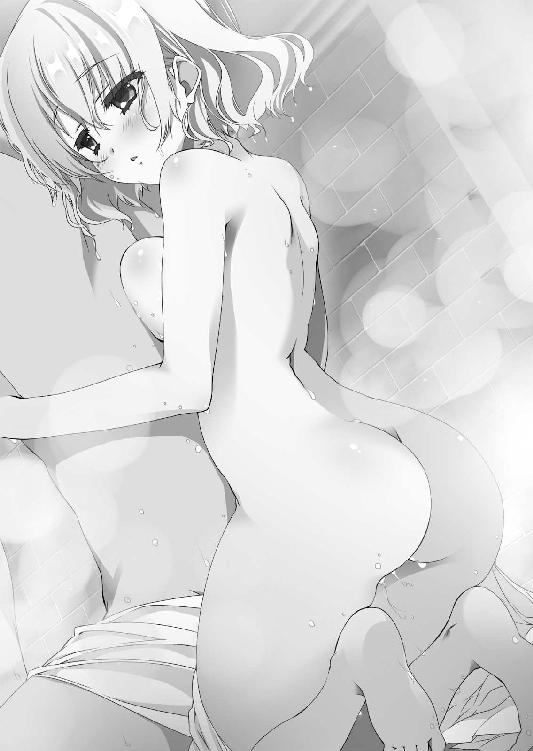
「彼ならいませんよ。しばらく場を外してもらっています」
うろたえるティグルに、レギンは何でもないような口調で答えた。
「いま、浴場の前にはセレナ──私の護衛を務めている者に立ってもらっています。私がここにいることは私とあなた、セレナの三人しか知りません。他に誰も入ってきませんから、安心してください」
とうてい安心できるような心境ではなかったが、わかりましたとティグルは答えた。ようやく理解する。レギンは、自分と二人だけで話すために、ここへ入ってきたのだ。
いくばくかの間を置いて、レギンは話しはじめた。
この国を統治するようになって、約一年。レギンの治世は安定しつつあった。ボードワンやマスハスに説得されずとも、彼女にあらためて忠誠を誓う者も現れるようになったのが、その証左といえるだろう。
だが、依然としてレギンに厳しい目を向ける者たちも数多くいた。
とくにブリューヌの伝統を尊重し、頑なに守ろうとする者たちは、レギンが統治者であることすら批判した。王女は早く国王となるべき者を定め、結婚して王妃となり、子をもうけるべきだというのが彼らの主張だった。
彼らは悪人ではない。無能でもない。たとえば領地を持つ者は領民から堅苦しい領主様だと思われつつも慕われており、王宮に勤めている者は昔からの習わしに詳しく、同僚からも頼りにされていた。
伝統は何をおいても守られるべきであるという思いこみだけが、彼らの問題点だった。欠点であるとは言い難い。レギンの父であるファーロンが統治していた時代は、彼らのこの考えも美点であったからだ。
ともかく、王女であるレギンに対してもそのような態度で接する彼らは、当然ティグルにも辛辣な評価を下した。
「めざましい戦果をあげたとはいえ、ヴォルン伯爵はまるでブリューヌ貴族らしくない。剣も槍も使えないとは、先代はどのような教育をしていたのだ。弓が得意だというのは、どぶさらいが得意だというのと同じで、誇れることではないだろうに」
「そもそも彼の戦果ではなく、ジスタート軍の戦果というべきではないか。百にも満たぬアルサスの兵が、いったいどれだけの働きをしてみせたというのか」
「王女殿下を救出したというが、その後の行動は、殿下の安全を考えたものとは思えん。殿下もそのあたりを誤らず、公平に評価してくださらねば」
レギンはそうした声を耳にするたびに、発言者を呼びだそうとしてはボードワンたちに止められたらしい。
「理解を得るのには時間がかかるのです。まして、彼らのような人々には」
申し訳なさそうな顔でボードワンが頭を下げたという。猫のようにぴんと伸びた髭が、そのときは主の気持ちを反映するように垂れ下がっていたとも。
ボードワンの言葉に納得したというよりも、信頼している重臣への気遣いから、レギンは引き下がった。それに、彼らを処罰すれば、喜ぶのはレギンに反発している者たちだけだ。統治者としての地盤が固まるまで、隙を見せるわけにはいかなかった。
そんな折、ティグルの帰還が決定し、マスハスによってそれが伝えられると、王宮にひとつの噂が流れるようになった。
レギン王女はヴォルン伯爵をどのように遇するのか、というものだ。
もしもレギンが笑顔でティグルの手をとり、抱きしめるようなことがあれば、彼らがどのような反応を見せるのかは容易に想像できた。また、彼らはレギンだけでなくティグルをも糾弾するだろうことも。
迷った末に、レギンは冷淡な統治者を演じることにしたのだった。
「──謁見の間で、私が月光の騎士軍について触れたときのことを覚えていますか？ あれだけのことで騒ぎだす者がいるのです。それも、ひとりや二人ではなく」
ティグルはうなずくことしかできなかった。激しい憤りが、一時的に若者から声を奪っている。伝統は大事だろう。だが、レギンがこの現状を引き起こしたわけではない。
テナルディエ公爵とガヌロン公爵が策謀をもてあそび、内乱を起こしてこの国を戦火で押し包んだからではないか。ファーロン王を早すぎる死に追いやったからではないか。
ティグルは王女殿下と言いそうになって、首を横に振る。息を吸い、吐いてから彼女に呼びかけた。
「レギン......」
己の右手を、自分を抱きしめている彼女の右手にそっと重ねる。彼女の置かれた立場の深刻さを思った。こうまでしないと、彼女は心情を吐露することもできないのだ。
レギンが小さく声を漏らし、体勢を変える。身体をよりティグルの背中に密着させ、自分の左手を、ティグルの右手に重ねた。嬉しそうに、彼女はティグルにささやきかける。
「本当は、バルコニーにあなたを呼んだとき、話すつもりだったんです。でも、私の言葉ではなく、王女の言葉として受けとられるかもしれないと思うと、怖くなって何も言えませんでした。それで、おもいきってここに......」
ティグルは無言で、彼女の右手を握った。自分のような男をこれほどまでに想ってくれたことが、嬉しかった。
その一方で、彼女の話を聞いている間におさえこんだはずの欲望が、再び首をもたげてきたのをティグルは自覚していた。彼女の手のやわらかさが、伝わってくるぬくもりが、欲望に活力を与えている。
レギンの手は小さく、指は細く、爪は整っている。美しい手だった。
この手をつかんだまま、衝動に任せて振り返り、押し倒してしまいたいと思う。
唾を飲みこむと、その音がやけに大きく聞こえた気がした。自分を突き動かす情動に、ティグルは必死に耐える。
レギンは、自分を信頼してくれているのだと言い聞かせた。あるいは、その解釈は間違っていて、彼女を失望させるのかもしれない。それでも仕方がないのだと割り切った。割り切るまでに、五十近い数を数えるほどの時間が経過した。
「──ありがとう。レギン」
言いながら、ティグルはレギンの右手を解放する。葛藤のあまり、よけいな力がこもってしまったのか、彼女の手はやや赤くなっていた。申し訳ないと思いながら、ティグルはゆっくりと言葉を紡ぐ。
「俺が、君にしてやれることは少ない。君が俺にしてくれることの、半分にも満たないかもしれない。ただ、これだけは言っておく。君が俺のことを大切に思ってくれているように、俺も君のことを大切に思っている」
主従だからではない。レギンという娘に好意を抱き、彼女のために何かをしたいと思うからこその言葉だった。ティグルとしては、自分の想いを率直に、過不足なく伝えたつもりである。
直後、ほんの一瞬だけだが、不自然な沈黙が二人の間に横たわった。
「ティグル。あなたのその言葉は嬉しく思います。偽りや思いつきなどではない、本心からのものだということもわかります。それを踏まえてひとつだけ聞きたいのですが──」
ティグルの背中にもたれかかったまま、レギンはゆっくりと言葉を続ける。
「私以外の者にもそのように言っていませんか」
今度はティグルが押し黙る番だった。しかも、レギンの沈黙が言葉を整えるためのものだったのに対し、若者のそれは返す言葉が見つからないゆえのものだった。
「否定はしないが......」
ややあって、ティグルは困ったようにそう言った。あるいは、見抜かれていることを承知の上で偽るべきだったかもしれない。「君にしか言っていない」と。
だが、ティグルはそうしなかった。レギンに不満を抱かせてしまうことになっても、自分の心情ははっきりさせておくべきだと思ったのだ。
レギンはくすりと笑うと、そっと抱擁を解く。ティグルの背中から離れた。
「わかりました。いまは、あなたの大切なひとになれたことを喜びましょう」
彼女の言葉が終わるか終わらないかのうちに、若者の背に新たな感触が伝わる。湯で濡れた布のようだ。いつになく明るい声で、レギンが言った。
「せっかくですから、あなたの背中を流してあげます」
「いや、そんな......」
ティグルは弱々しい声をあげて断ろうとしたが、レギンはかまわず手を動かす。何を言っても止めないだろうと思えて、ティグルは彼女の好きにさせることにした。
──アニエスのときとは逆になったな。
「以前、あなたに背中を拭いてもらったことがありましたね」
不意にレギンが言う。まさしくそのことを考えていたので、ティグルは反射的に背筋を伸ばした。その反応がおもしろかったのか、レギンは小さく笑う。
「私がはじめてあなたのことをティグルと呼んだのはいつだったか、覚えていますか？」
「アニエスのときではなかったかと」
首をひねりつつティグルがそう答えると、レギンは若者の肩を軽くつねった。
「違いますよ。あなたが、獲ったばかりの鳥を私に振る舞ってくれたときです。長い名前だと私が言ったら、ティグルでいいと言ってくれた。忘れていましたか？」
ティグルは沈黙を保つ。八年前のことだ。相手が王族であると知らずに焼いた鳥を食べさせたことは、その後に父から叱られたことと合わせて記憶に残っていたが、どのような会話をかわしたのかなど、さすがに覚えていない。
「嬉しかった。あんなふうに接してくれるひとがいて」
レギンは懐かしむように言いながら、ティグルの背中を湯で流す。
終わったらしいと思い、床に流れる湯を眺めながら若者は小さく息をついた。安堵感と同時に、この状態が終わることを残念に思う気持ちがある。そのことに気づいて、くすんだ赤い髪をかきまわした。とにかく、あとはレギンが立ち去るのを待つだけだ。
しかし、十を数えるほどの時間が経過しても、レギンは立ち去る気配を見せなかった。
「──ティグル」
真剣さを帯びた静かな声が、若者の耳朶を打つ。ティグルは自然と姿勢を正し、緊張に顔を引き締めていた。見えないが、おそらくレギンもそうしているだろう。
「もう少しだけ、私の話を聞いてもらえますか」
ティグルは「はい」とだけ答えた。
「──私は、ジスタートにもアスヴァールにも行ったことがありません」
ティグルの返答からわずかな間を置いて紡がれた王女の言葉は、若者の意表を突いた。
「ヴィクトール王の顔も、タラード卿やギネヴィア王女の顔も知りません。いま攻めてきているザクスタンの軍勢も、その影すら見ていない」
「それは、仕方のないことでは......」
ジスタート王ヴィクトールは老齢のために王都シレジアから動けぬだろうし、アスヴァールとて昨年に内乱がかたづいたばかりだ。このブリューヌも、まだ安定からは遠い。統治者が自由に動きまわる余裕はないのだ。むろん、戦場に行くことなど論外である。
「あなたの言う通り、仕方のないことかもしれません。でも、それではすまない事態が遠からず起こるでしょう」
レギンの言葉は凛としてよどみなく、何よりも彼女らしい強い意志を感じさせた。ティグルは黙って耳を傾ける。
「私が王女としてこの国を統治するようになってから、一年と少しが過ぎました。日毎に実感するのは統治の難しさと、私を支えてくれる者たちのかけがえのなさ。そして、もういない人々の偉大さです。彼らがこの国を遺してくれたからこそ、いまがある」
先王ファーロンや『黒騎士』の異名を持つロランをはじめ、ブリューヌのために力を尽くしてきた者たちがいた。戦場で倒れた無名の兵、荒れた地で細々と畑を耕す民、職人や商人。何十万、何百万もの人間が、この国をつくってきたのだ。
「ファーロンの子として、始祖シャルルから続くブリューヌ王家に生まれた者として、私にはこの国を守り、豊かにしていく義務がある。ですが、私の力だけではとうてい成し遂げられません。──私には、あなたが必要なのです」
ティグルの目に、驚きと戸惑いの入り混じった感情が浮かんでいた。決然たる意志に満ちて、傷ひとつない宝石のように静かな輝きを放つ王女の碧い瞳が容易に想像できた。
「レギン......」
ティグルの声が震えた。彼女の名前をつぶやくだけで、精一杯だった。
期待以上の答えを、若者はようやくレギンから受けとったのだ。
背後で、レギンが立ちあがる気配がした。
「聞いてくれて、ありがとうございます」
そう言ったときの彼女の声は、ティグルに抱きついてきたときのそれに似た、かすかな甘えを含んだものだった。
「あなたには......あなたにだけは、私の夢を聞いてほしかったんです。バルコニーでも言いましたが、答えは戦が終わったあとに聞かせてくださいね」
小さな足音とともに、彼女の気配が遠ざかっていく。出入り口の扉が開き、閉まる音を聞いてから、ようやくティグルは立ちあがった。目の前にある浴槽ではなく、端の方にある冷水を貯めた浴槽まで歩いていく。腰まで浸かった。
胸が熱い。顔が上気しているのが自分でわかる。
どんな小さなことでもいいから、彼女の役に立ちたいと思う。一切の迷いを捨てて、彼女についていきたいと思う。
だが、ティグルにはやらなければならないことがあった。何もかもを捨てるには、大切に思うものが多すぎた。
肉体から過剰な熱が去ったあとも、ティグルはしばらくの間、冷水の浴槽に浸かり続けていた。心と頭が冷静さを取り戻すまでには、かなりの時間が必要だった。
３ 叛乱
冷たく輝く星々を背景に、月が高く昇っている。
夜も更けて、もはや王宮の大広間にひとの姿はなく、廊下には見張りを務める兵士しか見当たらなかった。ごくたまに、遅くまで仕事をしていた文官が出歩くぐらいだ。
この夜、最初の異変は王宮の一階にある柱廊で起きた。
ひとりの男が、見張りをしていた兵士たちの前に突然現れたのである。突然現れたというのも奇妙な話だが、彼らの目にはそうとしか見えなかった。
壁にかかっている松明の炎に照らされたその男は、非常に小柄だった。影だけを見たら少年と思ってしまうほどに。男は上質の絹服をまとい、禿げあがった頭部には小さな帽子を乗せている。まぶたが大きく、目は開いているかどうかわからないほどに細い。
兵士のひとりが短槍をかまえながら、誰何の声をあげる。それが、その兵士が最後に発した言葉となった。
次の瞬間、兵士のかぶっていた兜はひしゃげ、中身は血まみれの肉塊と成り果てる。小柄な男が跳躍して兵士の頭をつかみ、兜の上から握り潰したのだ。
男は勝ち誇るでもなく、他の兵士たちにも次々に襲いかかった。
この柱廊には六人の兵士が見張りに立っていたのだが、誰もが起こっていることを正確に理解できないまま、仲間を呼ぶ余裕すらなく、頭を潰されていった。一方的な殺戮が終わるまでに、十を数えるほどの時間もかからなかっただろう。
「もう一ヵ所ほど潰して、それから行くかな」
血と肉片にまみれた手を兵士の服で拭うと、男は柱廊をあとにする。
男の名は、マクシミリアン＝ベンヌッサ＝ガヌロンといった。
ティグルはとうにベッドに入っていたが、なかなか寝つけなかった。革鎧を着けたまま寝床に入っているからというのもあるが、それだけではない。
浴場を出たあと、ティグルは自分の部屋に戻った。そして、葡萄酒の瓶を片手に現れたガスパールやルーリックと、他愛のない話をしていた。
それが、一刻前までの話だ。ルーリックは隣の部屋に移り、ガスパールはといえばこの部屋の床に毛布を敷いて寝ている。
ガスパールは、王宮の不穏な雰囲気に万が一の事態を考えたマスハスがよこしてくれた護衛だった。ルーリックは自らの意志で、エレンに許可を得た上で来たのだという。
ちなみにティッタは、隣の部屋にいない。ジスタートにいたころの話を聞きたいということでレギンに呼ばれ、王女の寝室へ行っているのだ。金髪の王女が自分を覚えてくれていたことを、栗色の髪の侍女は素直に喜んでいた。
薄闇に覆われた天井を見上げて、ティグルはぼんやりと考えごとをしている。レギンの話を思いだしながら、この戦が終わったあとのことに思いを巡らせていた。
アルサスを離れる決心は、固まりつつある。辛くないといえば嘘になるが、何よりも生まれ育った己の領地を守るためには、そうするしかない。
ブリューヌそのものが戦火に包まれれば、アルサスのような小さな大地は瞬時に灰燼と化すだろう。二年前の内乱で、ティグルはそれを嫌というほど思い知らされた。エレンの協力を得ることができなければ、若者の故郷は焼き滅ぼされていたのだから。
ブリューヌが平和であればこそ、その中でアルサスは己の平和を追求できる。
もちろん、レギンを支えたいという想いもあるし、マスハスやオージェ、ジェラールらを助けることができればという気持ちもある。
──でも、王都からはさすがに遠いな......。
どこが、という問いは若者にとって明白すぎた。この一晩のうちに、何度そのことを考えただろう。そして、結論を出せずにいるのだろう。
結論が出ないのをわかっていながら、ティグルは何度目かの思考を巡らせ──。
それを、瞬時に頭の中から消し去った。部屋の外から甲冑の擦れる音と、それに混じって複数の足音が聞こえたのだ。戦士として、また狩人としての本能と経験がティグルに危険を訴える。このような真夜中に集団で出歩くなど、ただの不審者であるはずがない。
部屋の外には見張りの兵士がいるはずだが、彼の声が聞こえないのも奇妙だった。
ティグルはすばやく身体を起こすと、ベッドの下に手を伸ばす。そこには黒弓と矢筒があった。矢筒には三十本の矢が入っている。宴の席でオージェ子爵に頼んで用意してもらったものだ。
床に寝ているガスパールに視線を向けると、彼も目を覚ましていた。その手には鞘から抜かれた長剣が握られている。これは、彼がひそかに持ちこんだものだった。
二人とも目は闇に慣れていたが、念のために、ガスパールはそばに置いていた燭台を引き寄せ、すばやく火を灯す。
足音が、ティグルの部屋の前で止まった。
直後、耳障りな破砕音が響いて、扉から刃が次々に飛びだす。鍵が破壊された。
勢いよく扉が開かれ、剣を持った複数の人影が部屋の中に飛びこんでくる。そのときには、ティグルはすでに黒弓に矢をつがえ、弓弦を引き絞っていた。
夜気を切り裂いて、三本の矢が飛ぶ。勢いよく侵入してきた三つの人影が、それぞれ額に矢を受けて派手に倒れた。
──ブリューヌ兵......？
ティグルは眉をひそめる。燭台の火が照らした侵入者たちの格好は、王宮に勤める兵たちと同じものだった。しかし、それについて考える余裕はない。
ティグルが起きていたことに侵入者たちが驚いたとしても、彼らの動きは止まらなかった。倒れた三人を押しのけるようにして、後ろにいた男たちが部屋の中に入ってくる。ティグルが矢を射放つ前に接近し、斬り伏せるつもりだった。
だが、そこへガスパールが横合いから飛びこむ。彼の手に握られた剣が、燭台の火を反射して鈍色に煌めいた。
ガスパールは先頭に立っていた敵を斬ると、手首を返して剣を横に大きく薙ぎ払う。残りの敵を斬るためではなく、牽制して近づけさせないためだった。狙い通り、男たちは後ろへ退いた。
「何をやっている。回りこめ」
侵入者のひとりが舌打ちをしながら指示を出す。その男だけ、兵士の格好ではない。絹服をまとっていた。絹服をまとった男は正面からガスパールに斬りかかる。
強烈な一撃を、ガスパールはかろうじて弾き返した。強敵を前に動けなくなったガスパールの左右から、男たちが剣を振りあげてティグルに接近する。
ティグルはベッドを蹴って跳躍しながら、矢を二本放った。右から迫っていた二人の敵がそれぞれ鼻と喉を貫かれて転倒する。ティグルもまたバランスを崩して床を転がった。左から回りこんでいた敵の刃が迫る。
「ティグル！」
ガスパールが顔を青ざめさせて叫んだ。だが、ここで彼が敵に背を向ければ、その瞬間に斬り殺されるだろう。絹服の男の斬撃を受け止めながら、彼は歯噛みした。
ティグルは弓を抱きかかえるようにしてさらに床を転がり、自分めがけて振りおろされた剣をかろうじて避ける。敵の刃は若者の革鎧をかすめた。
敵が再度、剣を振りあげたときだ。部屋の出入り口で、短い悲鳴があがった。侵入者たちの仲間が発したものだ。彼らの注意が、一瞬そちらに向けられる。
「やれやれ。男が夜這いとはティグルヴルムド卿もかわいそうに」
血に濡れた剣を手に、ジスタート語で軽口を叩いたのは禿頭の騎士ルーリックだった。彼はさらに剣を振るい、呆然と立ち尽くしていた敵のひとりを斬り伏せると、絹服の男に狙いを定めた。おもわぬ敵の出現に、絹服の男もそちらへ視線を向ける。
その隙を突いて、ガスパールが動いた。いまにもティグルに剣を振りおろさんとしていた男に猛然と斬りかかる。鉄の刃よりも、その気迫に圧されて男はたじろいだ。
気合いの叫びとともにガスパールは剣を振りあげ、振りおろす。男の口から鮮血とともに濁ったような声が漏れた。剣を放りだして仰向けに倒れ、動かなくなる。
ガスパールは念のために、男の胸に剣を突き立てた。残酷なようだが、薄闇の中での戦いだったのだ。確実に仕留めておかなければ、とうてい安心できない。
「だいじょうぶか、ティグル」
それからガスパールは、床に膝をついてティグルに手をさしのべた。
「助かりました、ガスパール兄さん......」
肩で息をしながら、彼の手を借りてティグルは身体を起こす。そのときには、ルーリックと絹服の男の決着はついていた。己の剣を叩き落とされ、刃の先端を突きつけられて、絹服の男は諦めたようにうなだれた。
「しかしまあ、たいしたものだな」
幸いにも火の消えなかった燭台を拾いあげ、侵入者たちがたしかに死んでいることを確認しながら、ガスパールが呆れた声を出した。ザクスタン軍との激戦が記憶に新しいせいか、死体を見ても怯む様子はない。ティグルが不思議そうな顔で聞いた。
「何がですか？」
「おまえさんの弓の腕だよ。闇に目が慣れていて、かつ燭台の明かりがあるとはいえ、いきなり入ってきたやつの額を、こうも見事に狙えるものなのか？ それも三人まとめて」
「すべての弓の使い手の名誉のために言っておくが、それはティグルヴルムド卿しかできない技だと思っていただきたい」
どこか誇らしげな口調で言ったのはルーリックだ。
「ところで、ガスパール卿は、この不届き者どもに見覚えがあるか？」
ルーリックが尋ねると、ガスパールは唸り声を発して首をひねる。
「名前はよく思いだせんが、どこかの貴族の子弟が何人かいるな。ジェラール卿ならすぐにわかるだろうが......」
そこまで言ったところで、ガスパールの両眼が鋭くなる。ルーリックに剣を突きつけられている絹服の男を、彼は知っていた。ガスパールだけではない、ティグルもだ。
「セルペット男爵、でしたね」
苦い表情で、ティグルは絹服の男──セルペットに呼びかける。セルペットは首だけを動かし、憎々しげにティグルを睨みつけた。
「私たちの計画を知っていたのか？ いや、知っていたのだろうな。そうでなければ、仲間や武器を都合よく用意できるものか」
「知っていなければ用意せぬというのであれば、戦場では生きていけんぞ」
ルーリックが冷然とした声で言い、ガスパールがうなずく。実際、三人とも彼らの計画なるものはまったく知らなかった。
「話してもらえますか。どうして俺を殺そうとしたのか」
厳しい表情でティグルが言うと、セルペットは傲然と胸を張り、嘲笑を浮かべる。
「知れたことを。貴様がジスタートにこの国を売り渡そうとしたからだ。現に、ジスタート人の部下がいるではないか」
セルペットがルーリックを睨みつけた。ティグルは、まずルーリックと、次いでガスパールと顔を見合わせる。死体の服をひとつ切り裂いて帯状にし、セルペットの両手を後ろにまわして縛りながら、ガスパールが問うた。
「この兵士たちも、ティグルがブリューヌを裏切ったと思っていたのか」
「だからこそ、私たちは行動を起こしたのだ。この国の正義と平和を守るために」
日に焼けたセルペットの若々しい顔が、憎しみのために歪んでいる。ガスパールは怒りをおさえた声で、若い男爵を責めた。
「正義か。こんな夜更けに徒党を組んで、寝込みを襲うのがあなたの正義か」
「卑怯だとでも言うのか。国を裏切ることにくらべれば、ささいなことではないか」
「自分に都合の悪いことを、ささいなことだと言ってごまかす者を、私は何人か知っている。そういう連中は例外なく小悪党と呼ばれているがな」
禿頭の騎士が軽蔑も露わに吐き捨てる。ティグルは彼らの脇をすり抜けて、部屋の外に出た。見張りの兵士がいることを思いだしたのだ。彼が負傷していたら、手当てをしなければならない。
しかし、ティグルが見たものは意外な光景だった。見張りの兵は床に尻をつき、壁にもたれかかって眠りこけていたのだ。
──交代したばかりで、元気だったはずだが......。
もしや、と考える。寝てしまったのではなく、眠らされたのではないか。
ティグルは部屋の中を振り返ると、床に転がっている剣に視線を向けた。よく見ると、敵の持っていた剣の何本かは、血を乱暴に拭った跡がある。いまの戦いでは、ティグルたちの誰も負傷していないのにだ。
そもそも兵士に化けているとはいえ、十人もの集団がここまで来るのに、他の兵に見咎められないはずがない。
不意にティグルは視線を転じる。セルペットを見据え、語気も鋭く問いかけた。
「狙いは俺だけじゃないな？ 他に仲間がいるだろう」
「いない」とセルペットは答えたが、若者の眼光と声音とにひるんで声がうわずった。
その反応は、かえって若者に確信を抱かせる。ここまで無法を押し通すのであれば、レギンに取って代わり、彼らの行いをすべて許す人間が必要となるだろう。
ティグルはもう彼を相手にしようとはしなかった。矢の入った矢筒を拾いあげると、二人の男に呼びかける。
「マスハス卿の部屋へ急ぐ！ ガスパール兄さん、案内をお願いします」
ティグルは王宮の構造にはまるで詳しくない。謁見の間と大広間なら、昼間であれば行けるかもしれないというていどだ。それ以外の場所は、案内なしで行ける気はしない。まして、王宮が夜の闇に包まれている状態では。
ガスパールならば、当然マスハスの部屋の場所を知っているだろう。マスハスの部屋へ向かい、彼と合流したのちにレギンの寝室へ向かうつもりだった。
悔しげに叫ぶセルペットの声を背に、ティグルたちは廊下を駆けだした。
メリザンドの部屋は、王宮の地下にあった。
狭くはないが、広くもない。家具はテーブルと椅子、ベッドなど最低限のものしか置かれておらず、調度品の類はひとつもない。窓は、外の明かりを取り入れるための小さな穴が天井近くにあるだけだ。
光輪祭が行われた日から、メリザンドはこの部屋で日々を過ごしていた。
食事や衣服、湯浴みをするための湯などは問題なく運ばれてくる。しかし、外に出ることも、親しい者を呼ぶことも許されず、ほしいものがあるときは宰相のボードワンに許可を求めなければならない。
彼女がやったことを思えば寛大すぎるほどの処置だったが、メリザンドにとっては屈辱以外の何ものでもなかった。空想の中で、彼女は何度レギンとボードワンを絞め殺したかわからない。おそらく百でも足りないだろう。
すさまじいまでの憎悪に身を焦がしながら、メリザンドは、表面上はおとなしく過ごしていた。まだ機会が失われていないことを、彼女はわかっていたのだ。
そして、その機会はついにやってきた。
いま、扉の外から聞こえてきた物音でメリザンドは目を覚ました。
彼女は三十五歳になるが、実年齢よりも五歳ほど若く見える。不本意で不自由な生活の中でも長い金色の髪は輝きを失わず、整った顔だちが崩れることもなく、その美しさはいささかも損なわれていなかった。
彼女が身につけているのは夜着などではなく、飾り気のない麻の服だ。これは王宮から渡されているので仕方なく着ているのだった。
彼女はベッドの上に身体を起こすと、傲然と扉を睨みつける。もしもレギンやボードワンの手の者が現れたら、このような時刻に何ごとと怒鳴りつけるつもりだ。かすかな恐怖と不安はあったが、彼女の自尊心はそれを塗り潰していた。
甲冑の擦れあう不快な音に、重いものが床に叩きつけられるような鈍い音が続く。それからほどなく、外から鍵がかかっていた扉がゆっくりと開かれた。
「──メリザンド様」
戸口に、絹服をまとい、血濡れた剣を持った大男が立っている。歓喜と緊張の入り混じった声がメリザンドに呼びかけた。彼女にとって耳慣れた声だ。このとき、ようやくメリザンドは自分が救出されようとしていることを確信した。
「アルマンか」
「はい。お待たせして申し訳ございません」
大男は剣を床に置いて膝をつき、たくましい巨体を必死に縮めて頭を垂れる。すると、彼の背後に三人の兵士が立っているのが見えた。そのうち二人が松明を持っているのも。
メリザンドはベッドから出ると、アルマンの前まで歩いていき、尊大に言い放つ。
「許す」
彼女にとって、これはそうとうに寛容な対応だった。責めもせず、罰も与えず、直接声をかけてやるのだから。相手がアルマンでなければ、当然のように叱責していただろう。
立ちあがったアルマンの脇を通り抜けて、メリザンドは廊下に出た。血の臭いが鼻をつき、彼女は顔をしかめる。
見れば、見張りを務めていた兵士が腹部を血で染めて、床に倒れていた。すでに息絶えている。彼女は路傍の石を見るような目で死体を一瞥すると、アルマンに視線を転じた。
「状況はどうなっているの」
アルマンは太い首をすくめるようにうなずいて、簡単に説明する。
自分たちは六十人と少しの集団であること。五十人がレギンを捕らえるべく彼女の寝室へ向かい、十人がティグルヴルムド＝ヴォルンの暗殺に向かっていること。アルマンは残った三人を従えてメリザンドを救出に来たこと。
話を聞き終えたメリザンドは、不満そうに唇を突きだした。
「たった五十人で、あのまがい物を捕らえることなどできるはずないでしょう」
まがい物とはレギンのことだ。主の苛立ちにもアルマンは怯まず、懸命に答える。
「少ないとはいえ、五十人の中にはスティード卿のもとで剣を振るっていた元騎士も多数おります。王宮勤めの兵など相手になりません」
スティードは、テナルディエ公爵の側近だった騎士だ。武芸においても、戦場での指揮能力においてもテナルディエの信頼厚い男だったが、二年前の内乱で命を落とした。
「また、兵士の食事に毒を盛りました。死ぬようなものではなく、頭痛や腹痛を起こしたり、眠らせたりする類のものですが」
宴に出される料理については、レギンを支持する者たちが厳重に監視していた。厨房はもちろん、厨房と大広間をつなぐ廊下にまで兵士を配置し、立ち入ろうとする者は貴族諸侯でさえ追いだすという徹底ぶりだった。
料理人や、できあがった料理を大広間まで運ぶ者たちを買収することもできなかった。
そこで、彼らは兵士の食事を狙ったのだ。兵士の食事は別の厨房でつくられる。毒味役なども当然いない。そして、この場合は自分たちが少数であることが有利に働き、事前に指示を行き渡らせることができる。
「我々は、これからレギンめの寝室へ向かいます。何があってもメリザンド様の御身はお守りしますゆえ」
アルマンはそう言うと、仲間のひとりから松明を受けとり、先頭に立って廊下を歩きだす。メリザンドは悠然とした足取りで彼の背中を追った。三人の兵士があとに続く。
血の臭いが薄れてきたところで、メリザンドは冷たい夜気を胸いっぱいに吸いこみ、盛大に吐きだして解放感を味わう。ようやく彼女は自信に満ちた笑みを浮かべた。
◎
ガスパールが先頭に立って、ティグルたち三人は薄闇に包まれた王宮の廊下を駆ける。
途中、ティグルの部屋の見張りを務めていた兵士のように、床に倒れて眠りこけている兵士を何人か見た。そうでない兵士もいたが、彼らは同僚が眠ってしまったり、腹痛を訴えて動けなくなっていたりして、どう動けばよいのかわからないようだった。
ティグルとしては、彼らに申し訳ないと思いつつも、こう叫ぶよりない。
「王女殿下の危機だ！ 殿下の寝室へ急げ！」
彼らの最大の目的はレギンに違いないと、ティグルは判断している。多少の混乱を招こうと、そう叫び、訴えることは有効なはずだった。
「この男はティグルヴルムド＝ヴォルンだ！ ザクスタン軍を打ち倒した英雄だぞ！ 彼の言葉を信じてくれ！」
ガスパールも大声を張りあげる。兵の反応は鈍かったが、それでも何人かはティグルたちに続いた。仲間を呼びに行った者もいる。
「ガスパール卿。この王宮には、どれぐらいの数の騎士や兵士がいるのだ」
息を切らしながら、ルーリックが聞いた。答えるガスパールの呼吸も荒い。
「一万を超えるはずだが、王宮は広いからな......」
いくつかの重要な場所を例外として、兵たちは王宮内に薄く広く配置されている。何かあれば鈴や鐘、かけ声などで連絡を取りあい、集まるのだ。
兵士たちに毒を盛って混乱させ、分断すれば、少数でも間隙を突くことは可能だ。まして敵は王宮の構造に詳しく、夜の闇にまぎれて行動している。
通路が二手に分かれたとき、ティグルはついてきてくれた兵士たちを、別の通路へ向かわせた。仲間を増やし、この異常な状況を多くの者に知ってもらわなければならない。
柱廊を抜け、角を曲がり、階段を駆け上り、あるいは駆け下りる。
「もう少しで父上のいる部屋だ」
幅の広い廊下に出たとき、三人は誰からともなく足を止めた。
廊下の中央に、小柄な人影がぽつんと立っている。三人が立ち止まったのは、その人影から尋常でない殺気が伝わってきたからだった。壁には松明がかかっており、炎が静かに燃えているが、その明かりは人影に届いていない。
「何者だ」
ガスパールが剣をかまえて、鋭く問いかける。ティグルも黒弓に矢をつがえながら前へ進みでた。若者の目は、人影から離れない。離すことができなかった。
──こいつは......。
ティグルの額に汗がにじむ。かつて若者が遭遇し、戦ったひとならざる者たち──ヴォジャノーイやトルバラン、バーバ＝ヤガーといった魔物たちがまとっていた雰囲気と同じものを、ティグルは人影から感じとっていた。
二歩ほど前へ踏みだした人影を、松明の明かりが照らす。
男だった。絹服をまとい、禿頭に小さな帽子を乗せている。大きなまぶたの下の細い目が、言葉にできない薄気味悪さを帯びてティグルを見つめていた。彼の後ろには、この廊下の見張りだったのだろう兵士たちが倒れている。
「やあ」
男は右手を挙げ、ティグルたちに笑いかけた。ティグルは答えず、弓弦を引き絞って男に狙いを定める。
「おまえは、何者だ？」
それは、さきほどのガスパールの質問とよく似ていた。だが、前提はまるで異なる。
ガスパールは男を人間だと思って尋ねたが、ティグルはそうは思わなかった。
「そういえば、こうして正面から会うのははじめてだったか」
男は楽しそうに肩を震わせて笑い、そして名のる。
「私はガヌロン。マクシミリアン＝ベンヌッサ＝ガヌロンだ。おまえのことは知っているから、名のる必要はないぞ。ティグルヴルムド＝ヴォルンよ」
「ガヌロン......？」
その名前をつぶやいてなお、ティグルが相手のことを思いだすのに呼吸二つ分の時間が必要だった。ガヌロン。二年前の内乱でテナルディエ公爵と争っていた大貴族。
「馬鹿な」
そう声をあげたのはティグルではなく、ガスパールだった。
「ガヌロンは二年前に死んだはずだ！ テナルディエに敗北し、己の都市に火を放って」
ガヌロンは薄笑いを浮かべるだけで、答えない。彼にとっては、ガスパールもルーリックもどうでもいい存在だった。細すぎる目を、ガヌロンはティグルに向ける。
「今日は、おまえの力を見せてもらいに来たのだ」
ティグルの顔が緊張に引き締まった。弓弦をさらに力強く引き、ためらわずに射放つ。廊下は薄暗く、ティグルとガヌロンの距離は十アルシン（約十メートル）にも満たない。確実に命を奪う一矢となるはずだった。
三人の目の前に、驚くべき光景が出現する。ティグルの放った矢を、ガヌロンは受け止めたのだ。鏃を、指でつまむことによって。
「ヴォルンよ。私はこんな児戯を見に来たわけではない」
ガヌロンは口元に酷薄な笑みを浮かべ、鏃をつまんでいる指をわずかに動かした。
矢が、ガヌロンの指から離れて床に落ちる。鏃が失われていた。ガヌロンが指ですり潰したのだ。鉄の鏃を。
ティグルは小さく唸り、新たに二本の矢をつがえる。すばやく射放った。
しかし、やはり矢は届かない。ガヌロンが己の顔の前で軽く手を振ったかと思うと、次の瞬間には、彼の手に二本の矢が握られていた。かつて、ティグルも飛来する矢を手でつかみとったことがあったが、それとはあきらかに次元が違う。
「少々、痛い目を見せねばならんかな」
ガヌロンが矢をへし折って放り捨てる。床を蹴った。
ティグルは目を瞠る。いつのまにか、目の前にガヌロンの顔があった。
ガヌロンが手を振りあげる。ティグルは無我夢中で床に身体を投げだした。何かが左耳のそばを通り過ぎる。
床に転がったティグルの呼吸は、ひどく乱れていた。すぐさま身体を起こしたものの、顔から汗が噴きだして止まらず、顎を伝って床にいくつもの黒い染みをつくる。左耳が熱と痛みを訴えていた。
「よく避けた」
ティグルの目の前に降り立ったガヌロンは、賞賛の言葉を投げかける。その背後から二人の男が斬りかかった。ガスパールとルーリックだ。ガヌロンに気圧されて指一本動かせなかった二人だが、勇気を奮い起こして斬撃を叩きこむ。
ガヌロンは彼らを振り返りすらしなかった。ただ、万歳をするように右手と左手を後ろへ振りあげる。
甲高い破砕音が響いて、無数の鉄片と化した刀身が空中に舞った。二人の剣は、それぞれ鍔元から粉々に吹き飛ばされたのだ。その衝撃はすさまじく、二人の剣士は何かに殴られたかのようによろめき、仰向けに倒れた。
「力を出せないのか？」
怪訝な顔をするガヌロンを、若者は無言で睨みつける。答えることはできなかった。
いまのティグルは、自分の意思で黒弓の力を使うことができる。ただし『力』を乗せた矢を放つには、多少の時間が必要だった。
そんな自分の弱点となりうることを、話せるはずがない。また、話したとしても、目の前にいるこの男が、自分に充分な時間を与えてくれるとはとうてい思えない。
「ならば、役には立たんということだな。つまらないが、殺しておくか」
ガヌロンが右手を振りあげた。ティグルは黒弓をかまえて矢をつがえる。だが、それは凶悪な猛獣に対する、哀れな小動物の健気な威嚇でしかなかった。
刹那、耳の奥に違和感を覚えて、若者は動きを止める。ガヌロンもまた、右手を振りあげたままの姿勢で周囲に視線を走らせた。自分たちのいるこの空間に異物が入りこんできたことを、彼らは肌で感じとったのだ。
「──虚空回廊」
歪みをともなった静かな声が、二人の頭上から聞こえた。その声が消えるよりも早く、ガヌロンは床を蹴って後ろに跳躍する。金属と岩石がぶつかりあうのにも似た、甲高い音が廊下に響き渡った。そして、ティグルの目の前に純白の布地がふわりと舞い降りる。
「おひさしぶりですね。ガヌロン公」
鈴を転がすような、美しい澄んだ声だった。
松明の炎に照らされて、青みがかった長い黒髪と、白いドレスが暗がりの中に浮かびあがっている。赤と黒で彩られた禍々しい造形の大鎌が、鈍い輝きを放っていた。
『虚影の幻姫』ヴァレンティナ＝グリンカ＝エステスが、あたかもガヌロンからティグルを守るように立っている。
「まったく、妙なところで会うものだ」
ヴァレンティナを見て、ガヌロンは薄い笑みを浮かべた。
「なぜ、その小僧をかばう？ おぬしにとって必要な駒ではなかろうに」
「ヴィクトール陛下から、ヴォルン伯爵に協力しろと命じられたので。戦姫としては、王命に従うよりありませんわ」
微笑を絶やさずにヴァレンティナは答え、ガヌロンを苦笑させる。黒髪の戦姫が、国王からの命令などまるで意に介さないことを彼はよく知っていた。だが、彼女がティグルヴルムド＝ヴォルンを守るつもりなのはたしからしい。
「わかった。では、少しの間遊んでやろう」
言い終えるが早いか、ガヌロンの両手に光が生まれる。光は瞬く間にふくれあがり、紅蓮の炎を帯びて人間の頭ほどもある火球へと変化した。
ヴァレンティナの後ろで二人のやりとりを見ていたティグルは息を呑む。ルヴーシュでバーバ＝ヤガーという魔物と戦ったとき、若者はいまと同じ光景を目にしたのだ。あの魔物も、何もない空間に炎の塊を出現させていた。
──やはり、こいつも......。
ガヌロンが両手を前に突きだすと火球が放たれ、虚空に弧を描いてティグルたちに襲いかかる。ティグルはおもわず怯んだが、ヴァレンティナは涼しげな表情で火球を見つめていた。彼女は避けようとせず、右手に持った大鎌──虚影を振りあげる。
「──黒霞」
ヴァレンティナが虚影を一閃させた。迫る火球を狙ったものとしては、振り抜くのが速すぎる。湾曲した巨大な刃は大気を唸らせて、何もない空間を通り過ぎた。
しかし、黒髪の戦姫は失敗したわけではない。彼女が振るった大鎌の軌道に沿って、空中に黒い霧のようなものが湧きだした。それは瞬く間に広がっていき、二つの火球を受け止める。
黒い霧に衝突した瞬間、水をかけられた火が消えるような音を発して火球は消滅した。
「ほう」
感心した声を、ガヌロンがあげる。ヴァレンティナは艶然とした微笑でもって、小柄な元公爵の昏い眼光を受け止めた。
ガヌロンが前へ踏みだす。その瞬間、ヴァレンティナの顔から笑みが消え、黒髪の戦姫は大鎌を両手でかまえて勢いよく振り抜いた。
落雷を思わせるすさまじい衝突音が、廊下にとどろく。ヴァレンティナの頭上から襲いかかったガヌロンの右手は、虚影の幻姫の竜具に受け止められていた。ガヌロンは追撃をかけず、大鎌を蹴って空中を舞い、床に着地する。
わざとらしく右手に息を吹きかけながら、ガヌロンは横目でヴァレンティナを見た。
「やはり、おぬしとの相性は悪いな。とても悪い」
「あなたの身体がもう少し大きく、腕がもう少し長かったら、危うかったですね」
ヴァレンティナは口元に微笑を取り戻してそう応じる。彼女はさらに言葉を続けようとしたが、自分の手にある大鎌の変化に気づいて口をつぐんだ。
彼女の竜具であるはずの虚影が、彼女の意思によらず、湾曲した刃に黒い輝きをまとっている。そして、その輝きはゆるやかな螺旋を描いてヴァレンティナの脇を通り抜け、後ろへと流れていた。
そこには、ティグルヴルムド＝ヴォルンがいる。立ち上がり、両足で力強く床を踏みしめ、黒弓をかまえ、矢をつがえていた。弓弦はすでに、最大限に引き絞られている。
ガヌロンとヴァレンティナの壮絶な戦いを、若者は黙って見ていたわけではない。紅蓮の火球や戦姫の竜技に目を奪われながらも呼吸を整え、身体を奮いたたせて、黒弓に呼びかけていたのだ。
そして、黒弓は使い手の呼びかけに答えた。ヴァレンティナの竜具もまた、ティグルへの協力を承諾した。若者のつがえた矢の先端に黒い輝きが流れこみ、ヴァレンティナやガヌロンさえも目を瞠るほどの強大な力が生まれつつある。
「それだ。私が見たかったものは」
ガヌロンの声が歓喜に震えた。
「おまえの父親は、善良だったかもしれないが平凡な男だった。おまえの母親もやはり、ただの女だった。その二人からおまえのような者が生まれるのだから、実におもしろい」
哄笑しながら興奮気味に言葉を紡ぎ、魔物めいた雰囲気を持つ元公爵は両手を前へと突きだす。放たれるだろう矢を、手で受け止めんとするかのように。
「来るがいい、ヴォルンよ！」
ティグルは答えない。まだ、鏃に竜具の力は注ぎこまれている。矢が耐えられなくなる直前まで、黒い輝きを蓄えるつもりだった。その分、若者の身体に負担がかかるが、ここで妥協はできない。
──この一撃で打ち倒す......！
そのつもりで放たなければ、ガヌロンにはおそらく通じないだろう。
ひとつ。二つ。三つ。そして四つめを数えるほどの時間が過ぎたとき、ガヌロンの右足がわずかに動いた。気合いの叫びとともに、ティグルの右手から矢が離れた。この二つの行動は、まったく同時に起こった。
ガヌロンが目を見開く。ティグルの放った矢が、音もなく消えたのだ。
小柄な元公爵が戸惑いを覚えたとしても、それはほんの一瞬のことだった。だが、彼が戸惑いから覚めるよりも早く、消えたはずの矢は彼のすぐそばに出現したのだ。
ガヌロンの左隣にある空間の一点に、闇が生まれた。闇は正確な円形に拡大し、その奥から一本の矢が撃ちだされる。鏃はむろん黒い輝きを帯びていた。
ティグルとヴァレンティナの視界が、黒い輝きに埋め尽くされる。そして、彼らの聴覚には砂嵐にも似た、耳をつんざくほどの轟音が容赦なく叩きつけられた。黒い輝きはほとんど一瞬で消えたものの、今度は濛々と砂煙が舞いあがる。
その砂煙も晴れて、ようやく視界が開けたとき、二人の見たものは竜の爪にえぐられたかのような無残な天井と、石畳がめくれあがり、無数の瓦礫が転がる床、そして左側の壁に開けられた巨大な穴だった。天井からは、ぱらぱらと砂塵が降っている。
「......まあ」
ヴァレンティナは口元に手をあてて、ようやくそれだけを言った。ティグルはといえば立っているのも辛いほどで、呼吸を整えるだけで精一杯である。
黒髪の戦姫はティグルを振り返ると、首をかしげて率直に尋ねた。
「左側に矢を跳躍させたのは、狙ったものですか？」
唐突な質問にティグルは顔をしかめたものの、肩で息をしながら小さくうなずく。黒い瞳を、壁の大穴に向けた。穴の先には黒弓の力で吹き飛ばされた庭園があり、さらにその先には夜の闇が黒々とわだかまっている。
矢を瞬間移動させたのは、もちろんガヌロンの不意を突くためだ。その上で、ティグルは王宮に甚大な被害が出ないよう配慮したのだった。
ヴァレンティナの口元に笑みが浮かぶ。若者の判断をおかしがるようでもあり、感心しているようでもあった。
そのとき、ティグルの後ろで呻き声が聞こえた。ガスパールとルーリックが目を覚ましたのだ。ヴァレンティナは大鎌を振りあげながら、ティグルに言った。
「ヴォルン伯爵。私は彼を追うので、あとはお願いしますね」
ティグルが彼女の言葉の意味を考えている間に、黒髪の戦姫は竜技を行使する。
「虚空回廊」
水面に波紋が広がるように、ヴァレンティナの周囲の空間が歪んだ。歪みに溶けこむように黒髪の戦姫の姿はぼやけて、色と輪郭を失っていく。ティグルが止める暇もない。
虚影の幻姫は、突然現れたときと同じように、突然消え去った。
呆気にとられて立ち尽くしていたティグルだが、マスハスの声が聞こえて我に返る。廊下の奥を見ると、右手に剣を持ち、左手に火のついた松明を持った老伯爵の姿があった。おそらく、黒弓の一撃による轟音を聞きつけたのだろう。
ガヌロンとヴァレンティナのことは気になるが、いまはそれよりも重要なことがある。ティグルは自分たちがセルペットらに襲われたことを、手短に説明した。マスハスの表情が深刻なものとなる。
「わかった。いまは殿下の寝室へ急ぐとしよう」
ガスパールとルーリックは死んだ兵士から剣を借り受ける。二人は短く神々に祈った。
今度はマスハスが先頭に立ち、四人はレギンの寝室へと急いだ。
◎
騒ぎが起きたとき、レギンは自分の寝室にいた。天蓋つきの豪奢なベッドの中に、彼女はティッタと並んで寝ていたのだ。自分を守ってくれる者たちの邪魔をせず、ティッタの話を聞くとなると、これが最良の方法だった。
「──殿下。お休みのところ申し訳ありません」
王女を眠りの世界から引き戻したのは、緊迫したオーギュストの声だ。天蓋越しに何度か呼びかけていたらしい。レギンが返事をすると、彼は安堵の息をついた。
「申し訳ありません。いますぐ動きやすい服装にお着替えください」
レギンは眉をひそめる。これほど緊張を帯びた彼の声を聞いたことが、いままでにあっただろうか。だが、こういうときに疑問を発するべきではないということを、彼女はよくわかっていた。
「セレナは？」
自分の護衛を務める女性の騎士について聞く。返事を惜しむかのように天蓋がめくられて、服らしきものを脇に抱えたセレナが現れた。彼女はすでに銀の胸当てを身につけ、腰に剣を帯びている。
「お早く」
短く言って、彼女は服をレギンに押しつけた。服は自分の分だけでなく、ティッタが着るための侍女の服もある。
レギンは隣で寝ているティッタを起こすと、寝ぼけまなこの少女に服を渡した。ベッドの中で夜着を脱ぎ、すばやく着替える。ティッタも着替えながら、すぐに意識をはっきりとさせた。その間にセレナが説明する。
「叛乱です」
短く彼女は言い切った。数十人の兵が、見張りの兵たちを次々に殺害しながらここへ向かっているのだという。
「万が一ということもありえます。いまのうちにここからお離れください」
レギンは愕然とした。衝撃のあまり、とっさに言葉が出てこない。目を大きく見開き、口を半開きにして、いまにも泣きそうな顔でセレナを見た。
自分に不満を持ち、反感を抱く者たちの言葉にも耳を傾けてきた。苛烈な処置や極端な指示は控え、時間をかけて解決をはかってきた。それがブリューヌのためだと信じて。
だが、いま、自分は剣によって排除されようとしている。自分のやり方は間違っていたのか。それとも、自分の存在そのものを認められないというのか。
「──レギン様」
決意をこめた声で彼女に呼びかけたのは、侍女の服に着替えたティッタだった。不安をはしばみ色の瞳の奥に押しこめて、栗色の髪の少女は精一杯の笑みを浮かべる。
「きっと......きっと、ティグル様が来てくれます。だからいまは、逃げましょう」
ティッタの声と、ティグルの名とでレギンは我に返った。そうだ。考えたり悩んだりするのはあとだ。いまは逃げなくてはならない。
萎えそうになる気持ちを懸命に奮いたたせて、レギンはベッドから出た。
鈍色の甲冑をまとったオーギュストは戸口に立っており、険しい顔で廊下の様子をうかがっている。頬から顎にかけてたくわえた立派な髭が、緊張でかすかに揺れていた。
「オーギュスト。廊下の様子はどうですか」
「しばらくは持ちこたえられます」
オーギュストの言葉と表情から考えると、敵はかなり近くまで来ているのだろう。レギンはセレナを振り返った。
「セレナ。手を貸してください。これを動かします」
レギンが視線で示したのは、さきほどまで彼女とティッタが眠っていたベッドだ。
「この下に、道があります」
その言葉でセレナは理解した。レギンとセレナ、それからティッタの三人がかりで、重いベッドを動かす。それからレギンが床に触れ、ある箇所を強く押すと、きしんだ音を発して床の一部に四角い穴が開いた。穴はまっすぐ下に延びていて、壁面に鉄の取っ手がいくつも取りつけてある。
そのとき、もうひとりの護衛であるクロードが寝室に入ってきた。彼もセレナと同様に銀の胸当てをつけ、腰に剣を帯びている。彼はレギンたちの顔を見回し、それから床の穴を見て、すべてを理解したようだった。
「俺が先頭に立ちます。次が王女殿下で、セレナには後ろを守ってもらう」
「ティッタも連れていきます。私の後ろに」
レギンが言い、セレナは困惑を顔に浮かべた。ティッタに侍女の服を渡したのは、王宮に勤めているふうを装って、侍女たちの部屋に逃げこんでもらうつもりだったからだ。
セレナはクロードと顔を見合わせ、それからティッタを見る。栗色の髪の少女は強くうなずいた。
「差し支えなければ、ご、ごいっしょさせていただきます」
説得をしている暇はない。クロードは早くも穴を降りはじめている。
「わかりました。あなたのことも、できるかぎりお守りしましょう」
考え直してセレナはそう言った。敵の数も、その性格もわかっていないのだ。侍女たちの部屋へ行かせることが、ティッタにとって必ずしも安全とはかぎらなかった。
そのとき、オーギュストがこちらへ歩いてきた。
「ティッタ。王女殿下を頼む」
オーギュストは微笑を浮かべて、ティッタの肩に手を置く。このとき、彼はカルヴァドス騎士団の騎士ではなく、アルサスの地で子供たちの面倒を見ていた青年に戻っていた。ティッタはオーギュストを見上げて、強くうなずく。
「また、またあとで会いましょう。オーギュストさん。絶対に」
レギンもまた、オーギュストを見上げて言った。
「オーギュスト。生き延びるために戦いなさい」
降伏しろと言っても、また逃げよと言っても、この騎士は決して聞かないだろう。オーギュストとはあくまで主従であり、それほど親密な交流があったわけではないが、そのていどのことはさすがにわかる。この男は、そういう男なのだと。
「御意」とオーギュストは短く答える。これが、この男の誠意だった。
かすかに剣戟の響きが聞こえてきた。オーギュストの両眼に戦意がゆらめき、それがレギンたちに行動をうながす。レギンは穴の縁にしゃがみこむと、壁面の取っ手に足を乗せて、慎重に降りていった。
レギンたち四人が秘密の通路に入ったあと、オーギュストは天蓋つきのベッドを動かして穴を隠した。これで、多少は時間を稼げるだろう。
──万全でさえあれば、何の問題もないものを。
オーギュストは拳を握りしめ、奥歯を強く噛みしめる。
王女の護衛を務めるカルヴァドス騎士団の騎士は、オーギュストを入れて二十九名。だが、そのうちの半数以上が頭痛や腹痛を訴えて使いものにならなくなっていた。剣を握るどころか、立つことさえもおぼつかないのだ。
敵の数はこちらより多く、中でも同等の技量を持つ者が十人以上いる。
「あいつら、ただの兵士じゃありません。訓練を受けた騎士ですよ」
部下の言葉を思いだす。ようするに、同じ手を使われたのだ。自分たちがボードワンに頼まれて王宮に入ったように、敵も王宮に騎士を引き入れたのだ。
大勢の剣を持った男たちが現れたという兵士の報告を受けたとき、オーギュストはこれまで使ってきた、レギンの寝室で敵を迎え撃つという手を捨てた。王女を守りきれない事態を考慮したのだ。
寝室の外にある細長い廊下に、まだ動ける部下たちを配置する。多数であるという敵の長所を活かせないようにした。だが、王女の寝室を強襲しようというだけあって、敵は決して弱くなかった。
部下たちは徐々に後退を強いられ、ひとり、またひとりと倒れていき、残るはオーギュストひとりとなる。
弩を撃ち放って、敵のひとりを倒すと、オーギュストは弩を捨てた。
剣と盾をかまえる。
「来るがいい、雑兵ども。カルヴァドス騎士団のオーギュストが叩き斬ってくれる」
敵が、剣を振りあげて飛びこんでくる。オーギュストはひとりめを斬り伏せ、ふたりめの剣を盾で受けた。ひとりめの死体を乗り越えて迫る男の剣を、かわす。すでに血に濡れている刃がオーギュストの甲冑をかすめた。
剣を振るって、敵の腹部を刺し貫く。だが、それは失敗だった。腹部を貫かれた男はオーギュストの剣を抱えこむようにして倒れたのだ。オーギュストの手から剣が抜けた。
迫る敵のひとりを、盾で殴りつける。その直後、敵は身体ごとぶつかる勢いでオーギュストに斬りつけてきた。オーギュストの腹部に鈍い痛みが走る。握り拳を固めて、その男を殴りつける。そこへ、新たな敵が剣を振りあげて襲いかかってきた。
腹部の痛みが、オーギュストの行動を鈍らせる。直撃は避けたが、男の剣はオーギュストの甲冑に叩きつけられた。オーギュストは体勢を崩す。傷つけられた腹部から、真紅の血がこぼれでた。
身体が重い。呼吸が乱れる。男たちが金切り声をあげてオーギュストに殺到する。
オーギュストはおもいきり身体をそらして、あらんかぎりの声で叫んだ。もっとも接近していた敵に、盾を横殴りに叩きつける。その敵は吹き飛んで壁に叩きつけられ、ずるずると崩れ落ちた。血にまみれた顔が、変形している。
男たちがたじろいで、前進を止めた。オーギュストは獰猛な笑みを浮かべると、男が取り落とした剣を拾いあげる。ただそれだけの動作でさえ、いまのこの男にはひどく辛いものだった。視界が揺れ、呼吸が乱れる。
──部下をことごとく死なせてしまったな。
死んでいった部下たちに、オーギュストは詫びた。彼らは、より彼らにふさわしい戦場でもっと活躍できたはずなのだ。不甲斐ない上司ですまん、と内心でつぶやいた。
カルヴァドス城砦にいる友人や同僚、上司たちにも同じく詫びた。ただ、最後まで騎士らしく振る舞い、騎士団の名誉を汚すことはしなかったと報告する。
──ティッタは無事に逃げることができただろうか。ティグル様は......。
朦朧とする意識の中で、オーギュストの脳裏に二人の顔が浮かぶ。しかし、それはすぐに消え去って、ひとりの男が姿が浮かんだ。
──ウルス様......。
オーギュストにとって、アルサスの領主といえばやはりウルスだった。
ティグルがふさわしくないというわけではない。ティグルが父の後を継いでアルサスの領主となってから、まだ四年しか過ぎていないのだ。あと十年も過ぎれば、オーギュストにとってアルサスの領主はティグルとなっていただろう。
オーギュストが騎士になれるよう推薦状を書いてくれたのはウルスであり、騎士になれたことを喜んでくれたのもウルスだった。
──申し訳ありません、ウルス様。
剣を振るい、盾で殴りつけながら、オーギュストは詫びた。
──騎士として、アルサスの民として、ティグル様に長くお仕えするつもりでしたが、どうやら......。
それ以上、言葉は続かなかった。失血が、オーギュストの意識を奪ったのだ。
動きの止まったオーギュストに、次々と剣が突き立てられる。
剣と盾を握りしめたまま、オーギュストは倒れた。
男たちは、すぐにはオーギュストに近づかなかった。すぐに起きあがり、剣を振るってくるかもしれないと恐れたのだ。
二十を数えるほどの時間が過ぎて、ようやく彼が死んだと確信すると、男たちは倒れたオーギュストを踏み越えて、王女の寝室に侵入を果たした。
レギンの寝室からかなり離れたところで、メリザンドは報告を受けた。敵を倒したものの、すでにレギンの姿はなかったという。
「奥の廊下から通じる道には、我々の仲間がすでに先回りしております。ですが、そちらには逃げてこなかったというのです。まさかとは思いますが、窓から逃げたとしか」
ためらいがちに報告する部下に、メリザンドは小馬鹿にするような笑みを浮かべた。
「謁見の間へ向かうわ」
その言葉に、男たちは不思議そうに顔を見合わせる。メリザンドは言った。
「寝室から謁見の間へ行ける隠し通路があるのよ。レギンはそれを使ったに違いないわ」
それは、メリザンドがかつて王族にのみ伝わる秘密として父から教わったものだった。これについては、夫のテナルディエにさえ話したことがない。
メリザンドの父は、彼女のために教えたのだろう。情勢の変化によっては、メリザンドが王女になっていた未来もあったのだから。統治者を追い詰めるために使われることになろうとは、思ってもみなかったに違いない。
三十近い仲間の死体と、その半分以下の敵の死体を残して、メリザンドたちは謁見の間に向かった。
狭く細長い通路を、レギンたちはわずかな明かりと手探りとで進んでいる。
明かりを持っているのは先頭に立つクロードだけだ。彼の右手には剣が、左手には火のついた松明がある。
不意に、クロードは足を止めてレギンを振り返った。
「殿下。道が二つにわかれていますが......」
レギンは彼の肩越しに、通路の先を覗きこむ。たしかに、通路が左右にわかれていた。
──たしか、左を行けば謁見の間で、右を行けば王宮の外に出られたはず......。
父ファーロンから教わった、王族にのみ教えられる秘密のひとつだ。いまは、一刻も早く王宮を出るべきだろう。
「右を......」
そこまで言ったとき、レギンの後ろにいたティッタが震える声で呼びかけた。
「あ、あの、レギン様......。右に行くのはやめておいた方がいいと思うんです」
レギンは怪訝な顔でティッタを振り返る。栗色の髪の侍女の顔は、緊張と恐怖で白くなっていた。恐ろしいものを見るような目で右への通路を見ながら、ティッタは言った。
「この先には、なんだかとても怖いものが待ちかまえているような......」
レギンが迷ったのはほんの一瞬で、王女は安心させるようにティッタの肩を軽く叩く。
「わかりました。左へ行きましょう」
ティッタは巫女としての修行を積んだことがあるという。彼女は何らかの危険を感じとったのかもしれない。何より、右に行ったとして絶対に安全だという保障はないのだ。
レギンたちは左の通路を進む。謁見の間には、また別の秘密の通路がある。秘密の通路から秘密の通路へ移れば、敵から離れられるだろう。
レギンたちは知るよしもないことだが、ティッタの直感は的中していた。右の通路を出た先には、ティグルの前から姿を消したガヌロンが待ちかまえていたのである。そちらに進んでいれば、レギンたちは死をまぬがれなかっただろう。
左の通路は何度か曲がりくねったのち、突き当たりにぶつかった。壁には梯子代わりの取っ手が埋めこまれており、上へと延びている。クロードはレギンに松明を渡すと、上へと登っていった。レギンたちも彼に続く。
取っ手のはしごを登りきった。松明を掲げながら見回すと、すぐそばに玉座がある。偽物のデュランダルもあった。
「ちゃんと謁見の間に出たようですね」
レギンは安堵の息をつく。秘密の通路を使ったのははじめてだったから、不安があったのだ。彼女に続いてティッタとセレナも通路から出てきた。
玉座の後ろには、バルコニーへ通じる細長い廊下がある。そちらに隠れることも考えたが、レギンは首を横に振ると、玉座から見て左側の壁に視線を向けた。そこに、王宮の外へ通じる隠し通路がある。
「休んでいる暇はありません。先を急ぎましょう」
レギンが左側の壁へ歩きだそうとした、そのときだった。
廊下へ通じる扉が勢いよく開いて、剣と鎧で武装した男たちがなだれこんでくる。驚きの声をあげて、レギンとティッタは立ちすくんだ。クロードとセレナがすばやく二人の前に立ち、剣をかまえる。
侵入者たちは手にしていた松明や燭台を掲げる。レギンたちの姿が照らしだされた。
「いたぞ、王女だ」
誰かが叫び、侵入者たちがどよめく。彼らの声には王女に対する敬意など、かけらもなかった。クロードとセレナの顔に絶望の影がよぎる。暗がりでわかりにくいが、敵の数はおよそ二十というところだ。たった二人でどうにかできる数ではない。
「レギン様、ごめんなさい......」
いまにも泣きだしそうな表情で、ティッタが言った。
「あたしが、こっちの道を、って言ったせいで......」
「違いますよ、ティッタ。こちらへ進むと決めたのは私です」
レギンはティッタに優しげな碧い瞳を向けて、慰めるように彼女の頭を撫でる。守るべき者の存在がレギンを立ち直らせ、励まして、戦う決意を抱かせた。
レギンたちは、兵たちよりも一段高いところにいる。剣を前に突きだしてじりじりと距離を詰めてくる侵入者たちを金髪の王女は冷然と見下ろし、鋭く一喝した。
「場をわきまえなさい」
侵入者たちは驚いたように動きを止める。レギンは続けた。
「おまえたちもブリューヌで生まれ育った人間ならば、王宮を踏み荒らすことを恥ずかしいと思わないのですか」
その声は決して大きくはなかったが、たしかな威厳をもって謁見の間に響き、兵たちを動揺させる。追い詰められながらも、レギンは決して怯む様子を見せなかった。たじろぐ兵たちを見て好機と判断し、セレナがレギンにささやく。
「王女殿下。私たちが時間を稼ぎます。通路を引き返して、お逃げください」
「言っておくけれど、通路を引き返して逃げられるなんて思わない方がいいわよ」
だが、セレナの言葉は勝ち誇った高らかな笑い声に吹き飛ばされた。複数の人影が、廊下から謁見の間に入ってくる。大広間を照らす明かりの数が増えて、ひとりの女性の姿が照らしだされた。メリザンドだ。その隣には、大剣を担いだ巨漢のアルマンもいる。
「久しぶりね。会いたかったわ、レギン」
優越感を練り固めたような声で、メリザンドはレギンに笑いかけた。
「どうして私がここにいるか、わかるかしら？ おまえの姿が見つからないという報告を受けたとき、すぐにここが思い浮かんだのよ。正々堂々という言葉からはほど遠いおまえのこと、恥知らずにも隠し通路を使って逃げるだろうとね」
レギンは言葉を返さない。メリザンドがこの通路の存在を知っていたことに、驚きを隠せなかった。そして、完全に退路を断たれたとも思った。
こうして先回りしてきたのだから、メリザンドが秘密の通路の構造を知っているのは事実なのだろう。寝室に戻っても、彼女の部下が待ちかまえているに違いない。
だが、メリザンドがこの王宮を完全に支配下に置いたとは思えない。
──諦めては駄目。
ボードワンやマスハス、オージェ、そしてティグルがいる。彼らはきっと、自分を助けるために行動してくれている。それを信じて、少しでも時間を稼ぐのだ。
碧い瞳に嗜虐的な感情をちらつかせて、メリザンドが言った。
「すぐに殺しはしないわよ。この世に生まれてきたことを後悔するほど痛めつけ、徹底的に辱めてくれる」
「すぐに殺さないのは、私に人質としての価値があるからではないのですか」
毅然としてレギンは言い返す。重要なのは、彼らにセレナやクロード、ティッタを傷つけさせないことだ。また、時間稼ぎを悟られてもいけない。
「そうね。その通りよ。あなたには人質になってもらわないといけない」
メリザンドは真面目な表情になって、レギンの指摘をあっさりと認めた。しかし、彼女はすぐに酷薄な笑みを浮かべる。
「でも、人質は生きていればいいのよ。あなたの腕や足を斬って、やつらに見せつけてやろうかしら。目玉をえぐり抜いてやるのもいいわね。そうだわ、ボードワンの首を要求しましょう。やつらが拒否するたびに、おまえの身体を少しずつ切りとって渡してやるの。どのあたりでボードワンの首が送られてくるか、楽しみだわ」
「どうでしょうか。ボードワンは硬骨のひとですから。一国の王女がむやみに辱められるよりは死んだ方がよいと考えるかもしれませんね」
背筋を走る恐怖と悪寒に耐えながら、レギンは強気に受け流してみせた。メリザンドは忌々しげな視線を向けてきたが、黙りこむ。その反応は、レギンに確信を抱かせた。
やはり、彼女たちは王宮を支配するまでに至っていない。
「メリザンド。あなたに聞きたいことがあります」
堂々とした姿勢を崩さないよう気をつけながら、レギンは慎重に言葉を紡ぐ。気になっていたことが、ひとつだけあった。
「私を亡き者にしてブリューヌの統治者となったあと、あなたは何をするつもりですか」
メリザンドは顔をしかめる。レギンの気丈な態度が癪に障ったということもあるが、その質問の意味がメリザンドにはわからなかったのだ。レギンはさらに言った。
「このブリューヌを、あなたはどのように治めるのかと聞いているのです」
「そんなこと？ 決まっているわ。戻すべきものをかつての姿に戻し、すべてを正しい方向にあらためるのよ」
当然だと言いたげに、メリザンドは鼻で笑った。
「ジスタートとの同盟は破り捨て、アニエスの地を取り戻す。おまえに媚びへつらって王宮にはびこる愚者どもを一掃し、おまえやガヌロンに従っていた諸侯から領地を取りあげる。真に王家に忠誠を誓う心正しき者たちを登用し、彼らに新たな領地を与える」
レギンは息を呑んだ。メリザンドのやろうとしていることは、国の内外に敵をつくる愚行でしかない。ジスタートを敵にまわせば、喜ぶのはムオジネルなどの近隣諸国だ。領地を取りあげられた貴族諸侯も叛乱を起こすだろう。ブリューヌは間違いなく滅ぶ。
だが、メリザンドは自分の考えが間違いないというかのように、高らかに言った。
「ブリューヌは力を取り戻す。おまえみたいなまがい物には決してできないでしょう」
「そんなことが、本当に上手くいくと思っているのですか......！」
レギンの声に怒りがこもる。メリザンドは冷笑で応じた。
「おまえのようなまがい物といっしょにしないでちょうだい。私は王家の血を引く女として育てられてきたのよ。そう、まがい物といえば......」
メリザンドの視線が、玉座の横に立てかけられている不敗の剣に向けられる。
アルマンの名を呼ぶと、巨漢の男爵は獰猛な笑みを浮かべて歩きだした。レギンは顔を青ざめさせたが、止める術はない。下手に動けば、兵たちがいっせいに襲いかかってくるだろう。クロードもセレナも動けなかった。
玉座のそばで足を止めたアルマンは、担いでいた大剣を床に置くと、デュランダルをつかむ。両手で振りあげ、勢いよく床に叩きつけた。
金属的な破砕音が響いて、不敗の剣の刀身が半ばから砕け散る。
刀身の破片は回転しながら空中を飛んで、床に転がった。メリザンドの両眼は狂熱を帯びて輝き、謁見の間に彼女の哄笑が響き渡る。
「やはり......やはりまがい物だった！ あのときは、よくもつまらぬ小細工で私をたばかってくれたわね、レギン！ この屈辱、この怒りをどうしてくれようかしら」
レギンは言葉を返せない。彼女の心もまた、折れかけていた。自分の身体を支えるだけで、精一杯だった。
色めきたったのは、護衛のセレナやクロードだ。二人はロランのことを尊敬しており、不敗の剣の偽物を造らざるを得なかった事情も知っている。それだけに、メリザンドとアルマンの行動を許せなかった。
「貴様......！」
「──やめなさい」
敵陣に斬りこもうとしたクロードを、レギンは静かに手で制する。碧い双眸には、うっすらと涙がにじんでいた。だが、彼女は指先でそっと涙を拭い去る。
不敗の剣が砕かれたことは、たしかに衝撃だった。だが、いまの行為はメリザンドたちが余裕を通り越して慢心に至っていることの証明でもある。彼女たちが何をしようと、それによって少しでも時間が稼げるのならば、耐えるべきだった。
「では、そろそろ本番といこうかしら。あなたの護衛たちをひとりずつ殺して、最後にまがい物の両手と両足を切り落としてあげる」
メリザンドの目が冷酷な輝きを放ち、彼女の兵たちが動きだす。セレナとクロードは剣をかまえたが、いかに二人が勇戦しても、二十人近い厚みを突破してメリザンドに肉薄するのは不可能だろう。
「メリザンド。話はまだ終わっていません」
レギンが言った。どのような屈辱を受けてでも、この状況を長引かせるつもりだった。
そのときだった。空気を切り裂いて、何かがレギンの頭上を飛び越えた。その音にレギンが気づいたときには、それはメリザンド兵の顔に命中し、後頭部まで抜けている。
それは一本の矢だった。レギンやメリザンドたちに気をとられていたとはいえ、セレナやクロードでさえ、とっさに反応できなかった。
低い呻き声を発して、顔を矢で貫かれた兵士が倒れる。甲冑が床に激突して甲高い金属音が響いた。残響が夜気を震わせる中で、驚愕を多分に含んだ沈黙が場を満たす。いったい何が起こったのか、誰もわからなかった。
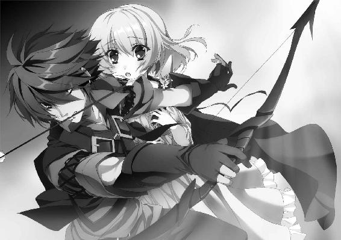
レギンたちの後ろから、足音が勢いよく近づいてくる。足音が止まると同時に大気が唸り、新たな矢が飛来してメリザンド兵の首筋に突き立った。兵士が倒れ、甲冑の床にぶつかる音が再び大気を震わせる。
黒い人影が、レギンの前に立った。
誰もが息を呑んでその人物を見つめる。黒い弓を持つ、くすんだ赤い髪の若者だった。革鎧を身につけ、腰には矢筒を下げている。黒い瞳には戦意が輝き、口に矢をくわえて、多数の敵兵を恐れる様子もなく見据えている。
若者の名はティグルヴルムド＝ヴォルンといった。
時間を少し前に戻す。
ティグルたちが王女の寝室に着いたのは、四半刻前のことだ。若者が見たのはいくつも折り重なって倒れている死体と、血にまみれた壁だった。濃い血の臭いが廊下に漂ってきたときから不安を感じていたが、想像以上に凄惨な光景が広がっていた。
そして、ティグルはいくつもの死体の中に変わり果てたオーギュストの姿を見つけた。
「オーギュスト......！」
ティグルは服が血で汚れるのもかまわず、オーギュストに駆け寄り、彼を抱き上げる。すでにオーギュストは息絶えているかに見えたが、ティグルが繰り返し呼びかけると、うっすらと目を開けた。若者と目が合うと、かすかに口元を動かす。
それが、彼がこの世で行った最後の行動となった。オーギュストの目は再び閉じられ、若者の必死の呼びかけにもかかわらず、二度と開くことはなかった。
「──ティグル」
マスハスが呼びかける。ティグルは胡乱げな顔で老伯爵を見上げた。マスハスの両眼に哀れみの色が浮かんだが、老伯爵はそれを振り払うと、厳しい顔つきで若者に言う。
「王女殿下のお姿は見つからなかった。おそらく、どこかへお逃げ遊ばされたのだ」
ティグルがマスハスの言葉を理解するまでに、二つ数えるほどの時間が必要だった。若者は悔しそうに歯を食いしばると、オーギュストの亡骸をそっと床に横たえる。
いま、やらなければならないことは何なのか、ティグルはわかっていた。
「すみません。取り乱してしまって」
「なに、これだけの死体を見れば驚きもするじゃろう。ティッタの姿もないから、おそらく殿下といっしょに逃げたのだろうが......」
「しかし、父上。王女殿下はいったいどこへ......」
ガスパールの顔には焦りが浮かんでいる。
エレンがリムをともなって現れたのはそのときだった。
「ティグルか。無事のようだな」
青を基調とした軍装をまとったエレンとリムの姿を見て、ティグルは安堵の息をつく。レギンとティッタを見なかったか尋ねた。唐突な質問をエレンたちは訝ったものの、死体と赤黒い血に覆われた廊下を見て、だいたいのことを推察したらしい。エレンが答えた。
「そういえば、ここに来る途中に三十人近い兵たちを見たな。謁見の間がどうとか言っていたが」
エレンが見たのは、メリザンドたちだった。彼らに斬りかからなかったのは、多勢に無勢だったということもあるが、その時点では状況を把握できていなかったからだ。二人はジスタート人であって、下手にブリューヌ人と戦っては問題になるのだった。
「謁見の間か......。そこだとすれば、ここからでは時間がかかるぞ」
マスハスが悔しそうに灰色の髭を震わせた。
「マスハス卿。謁見の間はどこにあるのですか？」
リムが尋ねた。マスハスは足元の床を指で示す。
「この真下といってもいいところじゃ。だが、下への階段はどれも、かなり離れたところにあってな......」
それでも、とにかく急ぐしかない。マスハスが廊下を走りだそうとしたとき、ティグルが白銀の髪の戦姫に呼びかけた。
「エレン。頼みがある」
ティグルの視線は、すぐそばの窓に向いている。マスハスの「真下」という言葉にもしかしたらと思い、窓の縁に手をかけて身を乗りだし、若者は夜の闇に目を凝らした。
夜空を背景に、王都の町並みが漆黒の影となって浮かびあがっている。その輪郭は、今日の昼過ぎにレギンと並んで見たバルコニーからの景色と同じものだった。今日のことでなければ、ティグルはすぐには思いだせなかっただろう。
窓の縁につかまりながら、若者は首を巡らせる。斜め下に、謁見の間の奥にあるバルコニーが見えた。エレンが若者の隣に立って、同じように身を乗りだす。
「どうした？ 急ぐんじゃないのか」
「あそこに、俺を飛ばしてくれ」
ティグルはバルコニーを指で示す。声は、かすかに震えた。
エレンの竜具であるアリファールには、風を操る力がある。それを使えば、ここから一気に飛び移れるのではないか。ティグルはそう考えたのだ。
「本気か、おまえ」
さすがにエレンも緊張を隠せない顔でティグルを見た。
「バルコニー以外につかまるものがないじゃないか。つかまりそこねたら、一気に落ちるぞ。夜の闇の中で感覚がずれることもあるし、アリファールだって万能ではない。その力がどこまでも届くわけじゃないんだ」
バルコニーは地上から十五アルシン（約十五メートル）ほどの高さにある。つまり、失敗すればティグルはその高さから地上に叩きつけられるのだ。死はまぬがれない。
「だいたい、謁見の間にレギンがいるとはかぎらないだろう」
「わかっている。でも、それならいないとわかる。合図を送ることもできる」
ティグルは必死に訴える。押し問答をしている時間はない。エレンはため息をついて若者の頼みを受け入れた。
「──わかった。ただし、おまえだけだ。何人もまとめて飛ばせる自信がないからな」
黒弓を背負い、矢筒を腰にまわして、ティグルが窓の枠に立つ。下から吹いた夜風が、若者の顎を撫でた。見張りの兵たちが持つ松明の明かりのおかげで、地上の様子がぼんやりと見える。ここが、地上からどれだけ高いのかも。
「行くぞ！」
自分を鼓舞するために、叫ぶ。ティグルはバルコニーを見据え、窓枠を蹴って、虚空に身を躍らせた。強烈な風が後ろから吹きつけて、ティグルをバルコニーに近づける。
だが、それ以上に落下が速い。暗がりゆえに目測を誤ったのだろうか。
バルコニーが眼下に迫る。手を伸ばす。わずかに届かないような気がする。バルコニーの柵の上に指が触れた。そして、弾かれた。
──落ちる......！
恐怖に、心臓が鷲掴みにされる。なおも懸命に手を伸ばす。柵の下に指が届いた。
ティグルはかろうじて柵につかまり、ぶら下がる。どっと汗が噴きだす、呼吸が荒い。
だが、つかまることができた以上は、こちらのものだった。ティグルはもう片方の手も伸ばして柵をしっかりつかむと、呼吸を整え、自分をバルコニーの上へと引き上げる。
バルコニーに降り立つと、謁見の間からかすかに声が聞こえた。ティグルは黒弓を握りしめ、矢をつかんで謁見の間へと飛びこんだのである。
メリザンドは、突然現れたティグルを唖然とした顔で見つめていた。だが、ティグルを正確に認識すると、彼女は顔色を一変させる。
「おまえが......！」
レギンにすら向けたことのない怒りを帯びた顔で、メリザンドは叫んだ。
「おまえが、息子と夫の仇か！」
ティグルは目を瞠る。ザイアンとの戦いも、テナルディエ公爵との戦いも、己に恥じるところはない。だが、メリザンドの叫びはティグルを驚かせた。
「やつを殺せ！」
それまでの冷静さをかなぐり捨てて、メリザンドが叫ぶ。兵たちが剣を振りかざして動きだした。
「レギン、ティッタ、下がれ！」
叫びながら、ティグルは黒弓に矢をつがえる。射放った。三人の兵士が近距離から額に矢を受けて倒れたものの、他の兵士たちは怯まず、怒濤となって襲いかかる。
クロードとセレナがティグルの前に立ち、剣を振るう。たちまちのうちに二人の敵が倒され、血煙の中に沈んだ。
だが、多勢に無勢だ。ひとりや二人を倒しても、三人、四人の敵が殺到する。クロードとセレナはおたがいを守るように並び、防御に徹して剣を振るったが、それでもいくつもの刃が二人の身体をかすめた。
彼らが後退を余儀なくされると、ティグルも後ろに下がらざるを得なくなり、あっという間に五人は追いつめられる。
不意に、風が通り過ぎた。白銀の髪を薄闇の中で輝かせて、新たな乱入者が戦場に飛びこんでくる。
「エレン！」
ティグルが歓喜の声をあげた。それに答えるようにエレンも声を張りあげる。
「ジスタートの戦姫がひとり、エレオノーラ＝ヴィルターリアだ！ 戦姫に挑もうとする者はいるか！」
ジスタートと戦姫の名が、彼らを一瞬怯ませる。そして、エレンにとってはその一瞬で充分だった。銀閃の風姫は果敢に敵の中に躍りこみ、容赦なく長剣を振るう。
ひとり、またひとりとメリザンドの兵は数を減らしていった。メリザンドは顔を蒼白にして立ち尽くす。ほんの少し前まで、彼女はまぎれもなく勝者だった。そのはずだった。
ただひとりの戦姫が文字通り戦況を一変させてしまうなど、誰に想像できただろう。
「貴様ら！ メリザンド様に何をするか！」
アルマンが大剣を振りあげてエレンに襲いかかった。だが、彼がエレンの間合いに入るより早く、ティグルの射放った矢がアルマンの額を穿つ。巨漢の子爵は息を詰まらせたような短い悲鳴を発し、前のめりに倒れてそのまま息絶えた。
どうにかしてレギンを狙おうとする者もいたが、息を吹き返したクロードとセレナが彼らの前に立ちふさがる。二人は、完全に己の役割を理解していた。攻撃はティグルとエレンに任せて、自分たちはレギンを守ることに専念すればいい。
レギンは松明を持ち、ティッタを守るように立って、戦況を見守っていた。剣戟の響きに流血と死が続く光景は凄惨で、直視しがたいものだったが、彼女は目を背けなかった。
「戦いなさい！ ここまできて降伏なんてできると思っているの！」
たじろぐ部下たちをメリザンドは必死に怒鳴りつける。彼女の言う通りで、いまさら降伏しても、彼らが許されることはありえなかった。
覚悟を決めた兵たちは、いっせいにクロードとセレナに襲いかかる。王女を捕らえて人質とする以外に、生き延びる方法はない。
クロードとセレナはそれぞれ剣を振るって、メリザンド兵たちを斬り伏せる。その瞬間を狙って、メリザンドが動いた。彼女は床に転がっていたデュランダルの破片を拾いあげると、身体ごとぶつかる勢いでレギンに襲いかかったのだ。
レギンは反射的にメリザンドへ松明を突きだす。メリザンドは怯まなかったが、視界を灼かれて狙いを外した。デュランダルの破片はレギンの脇腹に赤い一筋の傷をつくるだけに留まる。二人はもつれあうようにして倒れた。
先に身体を起こしたのはメリザンドだったが、彼女は悲鳴をあげてよろめいた。彼女の服に、火がまとわりついている。倒れた際、松明の炎が燃え移ったのだ。
デュランダルの破片を握りしめたまま、メリザンドは激しく身をよじる。彼女のすぐそばには、穴が開いていた。王女の寝室と王宮の外へ通じる秘密の通路が。
体勢を崩して、メリザンドは落ちた。ようやく身体を起こしたレギンの耳に、何かが叩きつけられたような、重苦しい音が聞こえた。
メリザンドほどではなかったが、レギンの服にも火は燃え移っている。それを手で強くはたいて消すと、レギンは松明を拾いあげた。火傷の痛みが気にならないほどに、彼女は緊張している。
穴を覗きこむと、暗闇が広がっていた。松明の炎も穴の底までは届かない。メリザンドの服についていた火も、落下の衝撃で消えたらしかった。
「──王女殿下。私が見てまいります」
セレナが歩み寄る。戦闘は終わっており、謁見の間にはティグルたち六人だけがいた。
穴に落ちたとはいえ、メリザンドが死んだと決まったわけではない。それを考えれば、セレナの言うことが正しい。だが、レギンは首を横に振った。
「セレナ。私も降ります」
それだけは譲れないというふうに、強い口調で言った。セレナは自分が先に降りるという条件で、承諾する。
ティグルとクロード、エレン、ティッタの四人が見守る中、セレナとレギンは取っ手を使って穴を降りていった。二人はすぐに穴の底にたどり着く。
メリザンドは、穴の底に倒れていた。その姿を見たセレナとレギンは息を呑む。
彼女の首は奇怪な方向にねじ曲がり、さらに胸元にはデュランダルの破片が突き刺さっていたのだ。流れでる血は彼女の服を赤く染め、さらに床にまで広がっていた。
メリザンドはまだ死んでいなかった。手を震わせ、唇を痙攣させながら、彼女は目を動かしてレギンを見上げる。
「わ、た......しは......」
かすれた声で、メリザンドは続けた。
「私は......ただ、戻し、たかっ......。あの、ころに......」
あのころ。彼女の夫と息子が健在であり、テナルディエ家がブリューヌの大貴族として揺るがぬ地位を築きあげていたころだろう。
レギンは何も言わなかった。ただ、彼女の唇はかすかに動いて、無音の言葉を発した。
私だって。
レギンとて、戻せるものなら時間を戻したい。父王ファーロンが健在だったころに。
目立たない王子として生活していても、何の問題もなかったころに。
だが、死者が生き返ることはない。失われたものを取り戻したとしても、それは決して元の形のままではない。多くの人間の息遣いが刻みこまれ、違うものになっている。
何より、いまの彼女には成し遂げたい理想があった。
前を見つめて、進んでいくしかないのだ。それが苦難に満ちた道であっても。
メリザンドの目があらぬ方向に向けられ、力を失う。
叛乱は終わった。
リュベロン山の中腹にある王宮から少し斜面を下ったところに、ひとりの男がいた。マクシミリアン＝ベンヌッサ＝ガヌロンだ。
彼のいるあたりは傾斜が厳しく、奇妙にねじまがった木や、背の高い草に覆われているため足場も不安定で、王宮に勤めている兵たちでも近づく者はいないところだった。ティグルの黒弓による一撃を受けたあと、彼はまっすぐここに来たのである。
見上げれば、夜の闇の中でも壮麗さを失わない王宮があった。
「さて、どうなるかな」
釣り竿を垂らした釣り人のような表情で、ガヌロンはうそぶく。
「何が、どうなるんです？」
独り言に対する質問は、ガヌロンの横から発せられたものだった。ガヌロンは警戒するそぶりも見せず、視線だけをそちらに向ける。彼の目の前で空間が音もなく歪み、大鎌を肩に担いだヴァレンティナが現れた。
彼女はスカートをふわりとなびかせて地面に降り立つと、珍しく顔をしかめる。
「服が汚れてしまいますわ」
「すでに汚れているではないか」
笑いながら言うガヌロンの格好は、ひどいものだった。絹服は黒くすすけてあちこちがほころび、とくに左肩から先は完全に吹き飛んで左腕が露わになっている。帽子もなく、見事な禿頭がさらけ出されていた。ズボンや靴も、ぱっと見てわかるほど傷んでいる。
ヴァレンティナはガヌロンの姿を見て、おかしそうな笑みを浮かべた。
「手ひどくやられたものですね」
「うむ。期待以上だった。ところで、なぜ私を追ってきた？ 世間話でもしようてか」
「そんなところです。正直、あなたがいるとは思わなかったので」
大鎌を後ろ手に持って、ヴァレンティナは小首をかしげる。男の大半が惹きこまれてしまうだろう魅力的な笑顔だ。だが、ガヌロンは口の端を吊りあげるだけだった。
「おぬしが話してくれるなら、私も話そう。それでどうだ」
「わかりました」
ヴァレンティナはあっさり承諾し、ティグルを助けた理由を説明する。
彼女は、セルペット男爵をはじめとする十人の男たちがティグルの部屋を襲ったときから、若者の様子を見守っていたのだ。
セルペットたちが敗れたあとは、一定の距離を保ちつつティグルたちを追った。まだ騒乱は終わっていない。どこかで、ティグルが黒弓の力を使うかもしれなかった。
そこに、ガヌロンが現れたのだ。
話を聞き終えたガヌロンは、肩を揺らして笑った。
「そんなにおかしいでしょうか」
「おかしいとも」と答えて、ガヌロンは共犯者の笑みを浮かべる。
「私も同じ目的でここに来たからだ。ヴォルンの力を見るためにな」
「でも、それだけにしては必要以上に兵を殺してまわっていた気がしますが」
夜空を見上げながら、何気ない口調でヴァレンティナが指摘した。気づかれていたらしいとガヌロンはまたも苦笑する。別に、隠すつもりはなかった。ついでの用事だったので言わなかっただけだ。
「それは、メリザンドへのちょっとした手助けだ。──ここにいるのもな」
「手助けですか？ 常に自分のことしか考えていないあなたが」
「今度、オステローデに質のいい鏡を送っておこう」
皮肉に嫌味で返してから、ガヌロンは聞いた。
「この叛乱──叛乱と呼ぶにはあまりにちっぽけだがな。成功すると思うか？」
「具体的な計画は知りませんが、現在、王宮で起こっていることだけを見るならば、どちらにも転ぶ可能性があるというところでしょう」
「そういうことだ」
黒髪の戦姫の観察力に感心しながら、ガヌロンはわざとらしくため息をつく。
「私は王宮の二ヵ所で少しばかり暴れた。兵どもの注意を引きつけつつ、彼らが仲間と連絡をとりづらくするためにな。それがなかったら、とうにメリザンドたちは鎮圧されていただろうさ」
兵たちの食事に毒を盛ったのは、たしかに有効な手だった。今夜に行動を起こしたことも正しい。だが、それでも失敗するとガヌロンは見ていた。数が少なすぎるのだ。あのままでは、レギンの前にたどりつける者はひとりもいなかっただろう。
「そこで、ほんの少し望みをつないでやったというわけだ」
「いっそ、あなたがレギン王女を討ち取った方が早いでしょう」
「そうまでして殺す理由はない」
あっさりと、ガヌロンは言った。
彼にとっては、レギンが生き延びようと死のうと、どちらでもいいのだ。だから、二年前にレギンがディナントの戦場からアニエスへ逃げたときも積極的に追わなかったし、アルテシウムの地下に仕掛けた罠も確実性のあるものではなかった。
「もしも私の前に転がりこんできたなら殺すが、わざわざ足を運ぶ気にはなれんよ。あの娘は、おぬしたち戦姫にも、やつらにも、女神にも関わっていないのだからな」
やつらとは、魔物と呼ばれる者たちのことである。ガヌロンが真剣に考え、行動するとすれば、その三つに関わることだけだった。
「ここにいるのも、メリザンドへの手助けと言っていましたが」
ヴァレンティナの言葉に、ガヌロンは少し離れたところにある茂みを指で示す。
「あの王宮には秘密の通路がたくさんあってな。王女の寝室からここへ出るものとか」
「待ち伏せというわけですか」
「どうかな。言った通り通路はたくさんある。必ずここに出てくるとはかぎらん」
他の通路を使って、ここではない場所へ出る可能性は充分にあるというわけだ。ヴァレンティナは納得したようにうなずくと、話題を変えた。
「それにしても、あなたが彼の力をたしかめに来るということは......近いのですね？」
開いているかどうかわからないほど細いガヌロンの両眼が、白っぽい光を放つ。だが、彼はすぐに警戒を解き、口元に笑みを浮かべてみせた。
「まもなくだ。おぬしがヴォルンに入れこんでおるなら、守ってやるのだな」
「彼を守りたいという戦姫なら、充分にいますよ」
夜風に黒髪をなびかせて、ヴァレンティナはくすりと笑う。言葉を返そうとしたガヌロンだが、彼は不意に王宮を見上げた。つまらなさそうに眉をひそめる。
「女神め。でしゃばりおった......」
ガヌロンはため息をついた。急にやる気を失ったかのようで、彼はヴァレンティナに背を向ける。闇の中を、音もなく歩き去っていったのだった。
４ 決意
メリザンドの死によって、叛乱は幕を下ろした。
ボードワンやオージェ子爵が事態を把握したのは、ちょうどこのときである。彼らはティグルが黒弓から『力』のある矢を放ったときの轟音で目を覚ましていたのだが、まず状況を知ろうとつとめたため、動くのが遅れた。
愕然とした二人は、慌ただしく最低限の着替えだけをすませて、レギンの執務室を訪れた。指示を出すために、レギンはそこへ移っていたのだ。
王女の頬や腕には薬を塗った布が貼られ、服の隙間から包帯が覗いている。だが、レギンの表情は凜として、乱れた髪ぐらいしか疲労をうかがわせるものはなかった。
髪と髭の乱れた顔で陳謝する二人の老臣に対し、レギンは首を横に振る。
「見ての通り私は無事ですから、気にすることはありません。それより、あなたがたが無事でよかった」
そして、レギンはさっそく今後のことを二人と話しあった。
メリザンドが叛乱を起こしたこと、それを鎮圧し、彼女が命を落としたことを発表するべきか。貴族諸侯の中には、権力争いの末にレギンがメリザンドに罪を着せて殺害したと思う者も出てくるだろう。
「多少の危険はあっても、発表するべきだと私は思います」
レギンはそう言った。メリザンドの死は、彼女と通じていたザクスタンにも打撃を与えるだろう。これ以上の侵攻を諦めて撤退するとまではいかないだろうが、これから彼らと戦うティグルたちへの一助となるのは間違いない。
「疑う者については、どうしますか？」
「相手にしないだけです」
あっさりとレギンは答える。
「王宮に勤めていた多くの兵が、彼らのために苦しみました。友人や同僚を失いました。彼らから話を聞けば、メリザンドたちが何をやったのかわかるでしょう。そのていどのことも調べようとしない者に用はありません。それでも何か言ってくるようならば──」
碧い双眸に静かな怒りをたぎらせて、レギンは続けた。
「私を守ってくれた者たちに対する侮辱と見做し、相応の処置をとるまでです」
ボードワンとオージェは粛然として襟を正し、あらためて王女に一礼した。
レギンの安全が確保され、ボードワンたちが指揮を執れるようになれば、王宮においてティグルにできることなど何もない。それでもティグルは自分にできることがないかとマスハスに聞いてみたのだが、返答は次のようなものだった。
「どこに何の部屋があるのかも知らんおぬしでは、迷子になるのがおちだ。休んでおれ」
言葉こそ冷たいが、老伯爵の眼差しにはティグルを気遣うあたたかさがある。オーギュストの死で精神的に消耗していたということもあって、ティグルはマスハスの言葉に素直に従い、寝ることにした。
ティグルとティッタには、それぞれ別の客室が用意された。ティグルの部屋には死体がいくつも転がってひどい有様だったし、そんな部屋の隣でティッタを休ませることは、ティグルもマスハスも、そしてレギンも許さなかったからだ。
ティグルたちが眠っている間、王宮において何かできる者はひとり残らず事後処理に追われることとなった。
命を落とした兵たちを埋葬してやらねばならず、彼らの遺族にもそのことを伝えるよう手配しなければならない。見舞金も計算する必要がある。壁や床にこびりついた血も洗い流さなければならなかった。
メリザンドに従っていた者たちの死体は、当然ながら別のところへ埋葬する。
おとぎ話に出てくる巨人か竜に殴られでもしたような、すさまじい破壊の跡が刻まれた廊下がひとつあったが、詮索は後回しにされた。優先されるべきは治療と修復だった。
ティグルを殺そうとしたセルペット男爵をはじめ、叛乱に荷担した者たちはことごとく捕まり、投獄された。
彼らの口からこの叛乱を計画した人物の名があがり、その男も捕縛された。デラボルド伯爵といい、書記官や参議を歴任し、王宮に二十年以上も勤めていた古株である。ボードワンやマスハスとも親しく、彼らは衝撃を隠せなかった。
「なぜ、こんな馬鹿げたことをしでかしたのだ」
苦しげに顔をしかめて問いかけたマスハスに、デラボルドは表情を変えずに答えた。
「レギン王女も、ヴォルン伯爵も、私には理解できない」
先王ファーロンの子とはいえ、王子として育てられた過去を持ち、また王女の身でブリューヌを統治しているレギン。
ブリューヌ人でありながら弓を得意とし、小貴族の身でテナルディエ公爵を討ち、ジスタートに親しい友人を多く持ち、アスヴァールでも武勲をたてたティグル。
「メリザンド殿の方が、まだ私には理解できた。理解できない方に仕えるなど......」
それ以上デラボルドは何も言わなかったが、彼が何を言いたかったのかをマスハスは理解した。牢獄に連れていかれる旧友の後ろ姿を見送って、マスハスは嘆息する。
「レギン殿下は、懸命に歩み寄ろうとしておられた。オーギュストのように、弓への蔑視から脱しようとする者もいた。年齢を重ね、経験を積んだ者が、彼らのようにできなくてどうするのだ......」
そうつぶやいたマスハスも、今年で五十七になる。年齢を重ねるほどに強固さを増し、妥協や譲歩を許さない信念や意地が己の内にできていることを、わかってもいた。
デラボルドは、ブリューヌの伝統についてある種の信念や意地を抱いていたのだろう。彼の計画に加担した者が少なかったことに、マスハスとしてはせめてもの希望を見いだしたい心境だった。
◎
夜が明けて、東の空からのぼった太陽が西へ傾きかけたころ、ティグルはティッタを連れて、王都の外にある墓地を訪れた。
戦神トリグラフを奉じる神殿が管理している場所で、オーギュストをはじめとするカルヴァドス騎士団の者たちは、ここに葬られたのだという。
緑に囲まれた、静かな墓地だった。オーギュストの名が刻まれた真新しい墓石の前で、ティグルとティッタはオーギュストの魂の安らぎを神々に祈った。
葬儀はまだ行われていない。死体は腐敗し、疫病のもとになるので、埋葬を先にすませなければならなかったのだ。
「ティグル様。オーギュストさんは、あたしにレギン様を頼むって......」
墓地を出たあと、ティッタは目を真っ赤に腫らしていた。墓地に入る前は泣くまいとがんばっていたのだが、オーギュストの墓を見て堪えきれなくなったのだった。
ティグルはまっすぐ王宮に戻ることはせず、てきとうな広場に寄ってティッタとともに休憩した。近くの露店で飲みものを買って、栗色の髪の少女に渡す。薄めの葡萄酒に潰した苺を混ぜて、蜂蜜などで味をととのえたものだ。
「オーギュストが本当に騎士になったときは、驚いたものだったな」
遠くを見ながら、ティグルは昔話をする。アルサスの人間で騎士になった者は、片手で数えられるほどもいないだろう。そもそも騎士になろうと思う者が少ない。ティグルの知るかぎりでは、オーギュストだけだった。
騎士になるべく、一時期ウルスの屋敷に通っていたということもあるが、オーギュストは幼いティグルやティッタの面倒を、よく見てくれていた。
それに、二年前にムオジネル軍と戦ったとき。オーギュストはティグルを助けるために駆けつけてくれた。
また、これはレギンから聞いた話だが、オーギュストは弩を試しに使っていたという。彼が生きていれば、カルヴァドス騎士団は特殊な集団になったかもしれない。
「オーギュスト......」
ティグルは彼の名をつぶやく。彼らはレギンを守るために王宮にいた。そして、立派に役目を果たした。ティグルは彼らの勇戦を讃えなければならない立場にある。
だが、心に広がる寂寥感が、なかなか賞賛の言葉を紡がせてくれない。長い沈黙のあとに、ティグルは「ありがとう」とだけつぶやいた。
広場にいたのは半刻ほどで、日が沈む前にティグルたちは王宮に戻った。若者には、やらなければならないことが数多くある。
気持ちを切り替えて、ティグルはティッタとともにエレンの部屋へ向かった。
エレンの部屋に着くと、他の者たちはすでに集まっていた。マスハス、ジェラール、エレン、リム、ヴァレンティナが部屋の中央にある大きな円形のテーブルを囲んでいる。テーブルの上には何枚もの地図と資料らしき書類が置かれていた。
「待たせてすまない」
「私たちもさきほど来たばかりだ。気にすることはない」
エレンがそう答える。ティグルを加えた六人で、これからザクスタンとどう戦うかについて話しあうのだ。マスハスは、王宮のことをボードワンとオージェらにすべて任せて、ザクスタン軍への対応に専念することにした。
部屋の隅には紅茶を淹れるための道具がそろえてあり、ティッタはそれらを使って、慣れた手つきで人数分の銀杯に紅茶を淹れる。
銀杯がテーブルに置かれるのを待って、まずジェラールが口を開いた。
「月光の騎士軍は現在、約一万。ここに貴族諸侯の軍が一万八千、各騎士団の連合部隊が七千加わります。彼らは皆、ヴォルン伯爵の指揮下に入ることを承諾しています」
「我がオステローデの兵三千もニースに到着しました。すべて歩兵です。お役に立てるかどうかはわかりませんが、お使いください」
銀杯を片手に言ったのはヴァレンティナだ。オステローデはジスタートの北東にあるため、ここまで来るのに時間がかかったのである。
これで、月光の騎士軍は三万八千もの大軍となった。
「味方が増えるのはありがたいが、食糧や物資は充分にあるのか？」
腕組みをしてエレンが尋ねる。ジェラールは自信に満ちた笑顔でうなずいた。
「その点についてはご安心ください。たとえ五万の兵でも必要な量をそろえてみせます」
この褐色の髪の書記官の台詞は、決して大言壮語ではない。二年前の内乱において、彼は銀の流星軍の食糧や物資の補給と整理、さらに分配まで請け負っていた。
「よろしく頼む。それで、敵の数と動きはどうだ？」
ティグルの質問に、ジェラールは手元の資料も見ずに答えた。
「多めに見積もって、五万と考えてください」
室内の空気が緊迫感を帯びる。こちらより一万二千も多い。マスハスが尋ねた。
「その五万というのは、敵が西方国境を突破してきたときの数字ではなかったか？ あれから二度戦ったと、わしは聞いているが」
「大規模な戦いは二度ですね。そのあと、ザクスタン軍と戦ったという報告が三つ届いています」
「では、ジェラール。敵は五度も戦って、常に圧勝だったというのか？」
信じられないという顔をするティグルに、ジェラールは深刻な顔でうなずいた。
「簡単にご説明します」
そう言って、ジェラールはテーブルを囲む者たちを見渡し、話しはじめた。
西方国境を越えてザクスタン軍五万が侵入してきたのは、二十日近く前のことだ。
ザクスタン軍との国境にはナヴァール城砦があり、ナヴァール騎士団が守りについている。団長を務めていたロラン亡きあとは、副団長のオリビエが団長代理として騎士たちをまとめていた。
ロランを失っても、彼らはブリューヌに存在する騎士団の中では屈指の強さを誇っている。これまでにザクスタンは何度か小競り合いを仕掛けてきたが、そのたびに撃退し、ブリューヌ国内に近づけさせなかった。
「──だが、ザクスタン軍は国境を越えて入りこんでいる。ナヴァール騎士団はどうなったんだ？ 敗れたのか？」
エレンが聞くと、ジェラールは驚くべき答えを口にした。
「彼らは、ナヴァール騎士団と戦いませんでした。街道から大きく外れ、騎士団の目が届いていない荒野を、真夜中のうちに駆け抜けたそうです」
夜が明けて、敵に入りこまれたことにナヴァール騎士団は気づいた。しかし、彼らは敵を追うことができなかった。
ひとつは、偵察の結果、敵の数が五万という大軍であるとわかったこと。ナヴァール騎士団は内乱後に増員したとはいえ、その数は五千に満たない。十倍の相手に挑むような真似はできなかった。
もうひとつは、国境付近に別のザクスタン軍が姿を見せたことだ。
こちらは数こそ多くないが、攻城兵器も用意しており、ナヴァール騎士団が城砦を手薄にすればすぐにでも攻めかかる気配である。ナヴァール騎士団は城砦から動くことができず、各地に伝令を走らせるのが精一杯だった。
「侵入を果たしたザクスタン軍五万は、すべて騎兵だそうです。敵の指揮官の名はレオンハルト＝フォン＝シュミット。ザクスタンの貴族で、将軍だとか」
「いま、すべて騎兵と言ったが、本当なのか？」
エレンが眉をひそめる。白銀の髪の戦姫は騎兵だけで軍を編成したことが何度かあり、その苦労をよく知っていた。彼女の経験から考えると、五万もの数で敵地に侵攻するのに騎兵だけで編成するなどというのは、よほど条件がそろっていないかぎり不可能だ。
その条件とは、馬を駆る兵たちが、馬の世話を充分にできるというものである。
餌を食わせ、水を飲ませればいいというだけではない。傷の手当てをし、病気にかかっているかどうかを見極めて、場合によっては他の馬から引き離すことができなければならない。馬の蹄にはめる蹄鉄や、鞍の調整もできなければ駄目だ。
さらに、食糧や水の問題もある。それらを定期的に調達する手段がなければ、軍はいずれ飢えと渇きで動けなくなるだろう。
だから、エレンは騎兵だけで動く場合は短期決戦と決めている。そうしなければ、ひとにも馬にも無理が来るとわかっているからだ。長期間動く場合は水や食糧を確保し、鍛冶の技術を持つ者や、馬の様子を見ることができる者が歩兵として従軍する。
エレンの疑問に、ジェラールは強くうなずいた。
「私も報告書に何度も目を通し、戦に参加したという者に話を聞きました。まず間違いありません」
ジェラールは説明に戻る。国境を突破したザクスタン軍は、ザクスタン軍は村や小さな町を襲って略奪しながら、東へ進んだ。
「おそらく、メリザンドから西部の地図を受けとっているのじゃろうな。やつらの略奪は狙いが的確だ。そして、城砦や守りの堅い都市にはまったく近づかん」
マスハスの説明に、ティグルは当惑した。
敵は、なぜ城砦や都市を狙わないのだろうか。城砦や都市を攻略し、そこを拠点としながら先へ進んでいくものではないか。
ともかく、ザクスタン軍は東へ進み、ブリューヌ西部を治める貴族諸侯や、街道の要所に置かれた城砦を守る騎士団たちの連合軍と対峙したのである。
ザクスタン軍が五万に対して、ブリューヌ軍は三万と少ない。だが、ブリューヌ側には地の利がある。戦場となったルドン平原は地面の起伏が緩やかで、ブリューヌが得意とする騎兵の突撃によって、敵を蹂躙できるはずだった。
まして、ブリューヌ軍の士気は高い。ザクスタン軍と戦う前日や前々日に、彼らは草原をさまよう何百、何千という民を保護したのだ。彼らはザクスタン軍の略奪に遭い、食糧を奪われ、村や町を焼かれて逃げてきた者たちだった。
「この略奪が、奇妙なんですけどね......」
ジェラールが理解できないというふうに首をひねる。
「死者がほとんど出なかったそうです。ザクスタン兵は食糧を奪うと、住人を一ヵ所に集め、ブリューヌ軍のところへ行けと言ってまとめて追いだしてから家々を焼き払ったと」
「民を殺さなかったということか？」
ティグルだけではない、マスハスにエレン、リムも意外だという表情になった。
ザクスタン軍が何を考えているのか、よくわからない。略奪はするのに、民を傷つけるつもりはないというのは理解しがたかった。
「とりあえず、話を先に進めさせていただきます。ルドン平原でザクスタン軍を迎え撃った我が軍ですが、一戦で敗れました」
怒りの感情をおさえて、淡々とジェラールが説明する。
完敗だった。ブリューヌ側が一万を超える死者と、それ以上の負傷者を出したのに対して、ザクスタン軍は死者と負傷者を合計しても一千に満たなかったという。
銀杯で喉を潤してから、ジェラールはテーブルに置いていた資料をティグルたちへと提示する。
「最初はおたがいに正面からぶつかりあったそうです。徐々にザクスタン軍が後退をはじめ、それに乗じて前進していたら、いつのまにか敵の別働隊が二つ、背後に現れたと」
背後からの敵襲にうろたえたところへ正面の敵が急速に接近し、ブリューヌ軍はあっという間に包囲された。そして、徐々に包囲の輪を狭められて殺されていった。
「平坦な草原なら、敵の別働隊の動きくらい見えそうなものだが」
エレンが腕組みをして首をかしげる。マスハスが資料に目を通しながら言った。
「報告では、突然現れたとしか書かれていないようじゃの......。とにかく、十数日前のこれが、ザクスタンとの最初の戦いとなるわけか」
それから二日後、ブリューヌ軍はどうにか再編成を果たした。先日の戦いには間に合わなかった貴族諸侯や騎士団も合流して、三万の大軍をつくりあげたのだ。
その間、ザクスタン軍は町や村を襲って略奪を繰り返しつつ、東へ進んでいた。街道を通らないわけではないが、北や南へ迂回することもあり、直線的な動きからはほど遠い。
なぜ、ザクスタン軍はまっすぐ東へ進まないのか。そう思った者は少なくなかったが、彼らの疑問は味方の抱える巨大な怒りにかき消された。
ザクスタン軍の考えはわからないが、彼らによってブリューヌの大地を荒らされているのは事実である。自分の領地を土足で踏みにじられた貴族諸侯にとってはとうてい許せぬ所行だったし、騎士団にとっても名誉にかかわる問題だった。
先の戦いのときと同じように逃げてきた民たちを保護したあと、ラヴァルの野に布陣したブリューヌ軍は、ザクスタン軍に挑みかかった。
「そして、負けました。まったく同じやり方で」
ジェラールは肩をすくめてため息をつく。
ブリューヌ軍の背後に、やはりザクスタン軍の別働隊が二つ現れたのだという。
「二度も気づかないとなると、見落としていたというのは考えにくいですね。すぐに思いつくものでは、戦う前から別働隊を用意し、戦場の外を大きく迂回させてきたというあたりでしょうか」
資料と地図を見比べながらリムが言った。マスハスが同意する。
「それ以外にないじゃろうな。森や丘があるならともかく、遮るもののない平原で、こちらに気づかれずに部隊を切り離せるとは思えん。最初から独立した行動をとらせていると考えるのが妥当じゃろう」
「だとすれば、シュミットとやらはそうとう厄介な相手だな」
エレンが腕組みをして唸った。戦場の外を迂回するほどの別働隊は、下手をすれば各個撃破の対象になる。そうならなかったとしても、ようやく戦場に着いてみれば、状況が一変していて何の役にも立てないということが珍しくない。
それを二度も上手く使ったのだ。ザクスタン軍の総指揮官シュミットは、手強い相手に違いなかった。
「シュミットというのは、どのようなひとなんだ？」
ティグルが聞くと、ジェラールは知っているかぎりのことを答えてくれた。四十代のザクスタン貴族で、国王の信頼が厚い男らしい。
ザクスタンはブリューヌやアスヴァールといった隣国と、国境沿いでしばしば争いを起こしているが、この男が騎兵を率いてくるとブリューヌは常に苦戦を強いられている。
「騎兵の指揮にかけてはザクスタンで随一という噂です。今度の戦で、その噂が事実だったと思い知らされましたが」
その後の三度の戦いについては、ジェラールもあまり語ることがない。略奪を繰り返して進むザクスタン軍が、散発的な抵抗を排除しただけというようなものだったからだ。
迎え撃ったブリューヌ軍は五千から六千ほどで、シュミットも別働隊などは使わず、正面からの突撃によって蹴散らしている。
最新の情報では、ザクスタン軍は王都ニースから六、七日ほどの場所にいるらしい。
「しかし、わからんな」
腕組みをしてエレンが唸った。
「やつらがブリューヌの領内に入りこんで、もう二十日近く過ぎているのだろう。食糧や物資はどうしているんだ？」
「水は河川や湖で確保し、食糧や物資は略奪によって賄っているようです」
憮然とした表情でジェラールが答える。ティグルたちは顔を見合わせた。マスハスがテーブル上の地図に手を伸ばし、地図に描かれたザクスタン軍の行軍経路を指でなぞる。
この行軍経路は敵を発見した地点をいくつもつなぎ合わせて、推測で書いたものだが、それにしてもでたらめとしか言いようがなかった。
西方国境を突破してから、街道をまっすぐ東に進めば、彼らはとうに王都ニースにたどり着いていただろう。彼らの進軍を阻もうとするブリューヌ軍との戦いに、数日を費やしたとしてもだ。
騎兵だけで動いている彼らの行軍速度は、歩兵のいる軍の倍である。たとえば月光の騎士軍が二日かけて進む距離を、ザクスタン軍は一日で踏破できるのだ。
しかし、彼らは街道を無視するかのように進んでおり、急に北へ向かったかと思えば、突然南下するなど、まるで思いつきだけで動いているかのようだった。
「はじめてこの図を見たとき、やつらはどうしてこんな進み方をしているのかと思った。やつらの速さなら、街道をまっすぐ進めば十日足らずでこのニースに着くというのにな」
「そういうことか......」
ティグルの口から、理解と怒りの入り混じった呻き声が漏れた。
ザクスタン軍はすべて騎兵で編成されているがゆえに、尋常でない行軍速度で動ける。
ティグルはそう思っていたが、その考えでは一歩足りなかった。
「このすさまじい速さを生みだしているのは、彼らが騎兵のみの集団だから、というだけじゃない。それに加えて、現地で補給することを徹底しているからだ」
軍の行軍速度は、歩兵を基準に考える。騎兵を基準に考えては、騎兵だけが突出してそれ以外のすべてが遅れてしまうし、食糧や物資を運ぶ輜重部隊の速さは、歩兵と変わらないためだ。
騎兵を基準に考えるには、歩兵だけでなく輜重部隊も切り離さなければならない。そして、敵はそれを実行した。
彼らが都市や城砦を占拠しない理由も、これでわかる。彼らにとって、都市や城砦は攻略の対象になり得ないのだ。攻城兵器は、彼らにとって邪魔な荷物でしかないから。
もっとも、こちらが都市や城砦を丸ごと放棄したとしても、彼らはそれを無視するだろう。彼らは野戦しか挑むつもりはない。そして、野戦でならば絶対に勝てるという自信を抱いている。
「なるほど。絶えず動きまわっているのは、そのためか。ある種の魚は泳ぎ続けていないと死ぬそうだが、似たようなものだな」
腕組みを解いて銀杯に手を伸ばしながら、エレンがため息をつく。不意にヴァレンティナがエレンを見て、くすりと笑った。
「エレオノーラ。敵の略奪には、補給以外にも意図があると思います」
「補給以外の意図......？」
白銀の髪の戦姫は眉をひそめたが、すぐに理解してうなずく。
「略奪を繰り返してブリューヌ軍の怒りを誘い、戦闘に持ちこんで勝利する。それを繰り返して離反を誘うのか」
「ええ。私が敵の指揮官なら、そうします。民を殺さないようにしているのも、そのためでしょう。彼らがいかに強いかを、生き残った者たちは広めてくれますから」
恐ろしいことを、ヴァレンティナは笑顔のままで言った。
町や村を襲っていれば、ブリューヌ軍が撃退に現れる。そのブリューヌ軍を打ち負かした上で、西部の領地を治める貴族諸侯や領民に誘いかけるのだ。
おまえたちを守る力もない王国に従うよりも、我々に従ってはどうだ、と。
貴族諸侯たちも、すぐに首を縦に振ることはしないだろう。だが、自分の領内にある村や町が次々に襲われ、奪われていけばどうなるか。ブリューヌという国や、レギンという統治者が頼りにならないと思ったとき、彼らはそれでも王国に忠誠を尽くすのか。
民などは、もっとわかりやすい反応を示すに違いない。重税を課されるとか、過度の暴虐さえなければ、支配者の移り変わりに彼らはそれほど興味を示さない。
「もうひとつ付け加えるなら、民を生かして放す理由は、こちらに彼らを保護させて手間をとらせつつ、民を偵察兵代わりに使ってブリューヌ軍の位置をさぐる、ということもあるかもしれません」
ティグルは嘆息する。この軍を率いているシュミットという男は、ただ戦に強いというだけではない。クリューゲルとは異なる意味で、恐ろしい相手だった。
「つまり、次の戦で絶対に勝たなければならない。そういうことですね？」
ティグルが緊張を隠せない表情でマスハスを見る。老伯爵は厳しい顔でうなずいた。
ブリューヌ西部で戦う貴族諸侯たちの心をつなぎ止めているもののひとつに、ティグルの存在があるのは間違いない。若き英雄という評判を除いても、ザクスタン軍と戦って勝利したのはティグル率いる月光の騎士軍だけなのである。
月光の騎士軍の敗北は、ただの一敗ではなく、ブリューヌそのものの敗北になりかねないのだった。
「だが、どうやって戦う？」
エレンが難しい表情でテーブルの上の地図に視線を落とす。
「王都から西は、どこも草原ばかりだ。山や丘、森がまったくないとはいわんが、そういうところに軍を進めたとして、相手が来るとはかぎらん」
「ヴァレンティナは、何か考えがあるか？」
ティグルはさきほどから黙って資料に目を通している黒髪の戦姫に声をかけた。
ヴァレンティナは微笑を浮かべてこちらを見る。昨晩の出来事について、彼女とはまだ話していない。そんな余裕などなかったのだ。
「楽に戦える手はありますけれど」
銀杯をの中の紅茶を飲みながら、ヴァレンティナが微笑を湛えて言った。ティグルは反射的に警戒の眼差しで黒髪の戦姫を見たが、いまのところ自分には何の策もない。気構えをしつつ、うなずくことで先を促した。
「彼らが利用するだろう河川に毒を流すのです」
何でもないことのような口調でヴァレンティナは言った。
エレンとリムは嫌悪感に満ちた視線を彼女に叩きつけ、マスハスは目を見開いて絶句する。ジェラールは呆然とし、ティグルもおもわず拳を握りしめていた。とくにブリューヌ人の三人は、昨夜の叛乱のために毒という言葉に敏感になっている。
彼らの反応をすました顔で受け流し、黒髪の戦姫は続けた。
「すべて騎兵ということは、どうしようもなくお馬さん頼みということです。ならば、馬を狙えばいい。簡単な話でしょう」
「だが、河川に毒を流せばどれだけの町や村が被害を受けると思う」
たまりかねたようにマスハスが言った。自分の倍以上生きている老騎士の言葉にも、ヴァレンティナは顔色ひとつ変えずに反論する。
「六度目の敗北を喫するよりは、ましではありませんか？」
「戦姫殿。失礼な言い方やもしれぬが、ここがブリューヌだから、あなたはそのような策を提案できるのではないか」
苦々しい表情でマスハスが言った。普段の彼ならば絶対に口にしない発言だ。それでも言ったのは、毒という手段に対する嫌悪感と、それによって被害を受ける町や村のことを想像したためだろう。
「──マスハス卿。少し言い過ぎでは」
申し訳ないと思いながらも、ティグルはいくらか厳しい口調で老伯爵を叱責する。不本意でもいま言っておかなければ、マスハスが戦友であるヴァレンティナを誹謗したという事実だけが残ってしまう。
マスハスは、はっとした顔になり、ヴァレンティナに頭を下げた。
「申し訳ない。言葉が過ぎてしまった」
「いえ。ブリューヌ人がブリューヌの民と大地を大切に思うのは当然ですわ」
ヴァレンティナは微笑を浮かべて、気にしていないというふうに首を横に振る。
「だが、実際どうする」
場の雰囲気を変えるように、エレンが身を乗りだした。
「三万の敵を二度も破った連中だ。何か手を打たねば負けるぞ」
「彼らが王都を目指しているのであれば、王都を囲む城壁の門をすべて閉ざして籠城戦に持ちこむ手もありますが」
リムが意見を述べる。もっとも、愛想のない顔の中の青い瞳を見ると、実効性のある手段とは思っていないのがよくわかった。エレンと同じで、場の雰囲気を変えるために言ってみたというところらしい。
「そうしたら、やつらは手近な村や町を襲って略奪を繰り返すんだろうな。ブリューヌが焼け野原になる」
そして、さきほどヴァレンティナが言ったように、ザクスタン軍は貴族諸侯と民に問いかけるのだろう。誰に従った方が楽かと。
ティグルは嘆息する。クリューゲルも強敵だったが、シュミットも恐ろしく厄介な相手だった。この二人がいればこそ、ザクスタンも侵攻する気になったのだろう。
「クリューゲルのときのように、相手の出方を見るという真似は難しいか」
「最悪の場合、その様子見でやられる可能性があるな。それに、こちらの動きや癖を把握されるかもしれない」
「敵が騎兵だけというなら、騎兵の足を止める手段を考えてみるのはいかがでしょうか」
リムが提案する。ティグルはうなずき、六人はそれぞれ意見を出しあった。
「地面に油をまいておびき寄せ、火攻めにするというのは？」
エレンの提案に、マスハスは渋面をつくる。
「この季節に、この場所での火攻めは危険が大きい」
ブリューヌの大地は「色鮮やかな緑の絨毯を広げたような」と形容されることが多い。国土の大半を、起伏の緩やかな草原が占めているのだ。まして、いまは春である。
下手に火を放てば炎はあっという間に広がり、火を放った者にすら制御できなくなってしまうだろう。
クリューゲルとの戦いでティグルは火矢を扱ったが、狙いは小さな丘の上であり、手に負えなくなる恐れはないと判断したからこそ、射放ったのだ。
「馬防柵を用意しますか」
リムが言った。馬防柵は、先端を尖らせた長い杭を横に並べたものだ。杭は垂直ではなく、斜め前に傾ける。突進してきた敵を串刺しにするためだ。
対騎兵の武器としてはよく用いられるが、欠点もある。まず、杭一本一本が重いため、持ち運びが容易ではない。草原のような広い戦場では敵に迂回されてしまう上に、味方の動きを阻害することさえあった。
「難しいな。敵は機動力を存分に活かした戦い方をしている。馬防柵を使える戦場が見つかれば......」
「私は西部の天気に詳しくありませんが、雨や霧には期待できませんか？」
「夏を迎えるまでは難しいの。かといって夏まで待っていたら干上がってしまう」
ジェラールの言葉に、マスハスが残念そうに首を横に振る。
「マスハス卿。王都から西に、湿地はありませんか？」
今度はティグルが聞いた。みんなの話を聞くうちに、ひとつの手が若者の頭に浮かんだのだ。マスハスは不思議そうな顔で灰色の髭を撫でた。
「ないわけではないが......。湿地で戦うとなれば、こちらの騎兵も戦いづらくなるぞ。それに、敵は地図を持っている。乗ってくるかな」
ティグルは五人の顔を見回して、自分の考えを説明する。
「そのくらいなら、王都を出るまでに用意できますが」
ジェラールはそう答えた。エレンも笑顔でうなずく。
「悪くないんじゃないか。私は乗るぞ」
リムは黙ってうなずくことで同意を示し、ヴァレンティナも何も言わない。マスハスは小さく唸ったものの、最後には息を吐きだしてこう言った。
「わかった。おぬしが飛びだすことはなさそうだから、よしとしよう」
クリューゲルとの戦いで、ティグルが単騎で駆けたことを揶揄しているのだ。ティグルはくすんだ赤い髪をかきまわしてごまかしつつ、全員に礼を述べた。
軍議が終わり、ジェラールとマスハスが席を立つ。次いでヴァレンティナが退出した。
リムと、それまで黙って部屋の隅に控えていたティッタは、動こうとしないティグルに怪訝そうな視線を向けたものの、若者が部屋に残るつもりらしいと察し、連れだって部屋をあとにする。
部屋には、エレンとティグルの二人だけが残った。
「どうしたんだ？」
屈託のない笑みを浮かべるエレンの顔を、ティグルはじっと見つめた。だが、いつまでも黙っているわけにはいかない。話を切りだした。
「ザクスタンとの戦が終わったら、俺は王宮に勤めようと思っている」
エレンはすぐには言葉を返さず、笑みの消えた顔でじっとティグルを見つめた。
思いもよらないことを聞かされたという表情ではない。いつかは触れなければならなかったものに、ついに触れたのかと言いたげだった。
紅玉の輝きを放つ視線を、ティグルは黙って受け止める。
「そうか......」
やがてエレンはぽつりとつぶやき、何かを振り切るように明るい笑顔をつくった。
「おめでとうと言うべきだろうが、昨日のことを考えるとご苦労様と言った方が正しいのかもしれんな。何年ぐらい、王宮に勤めるつもりだ」
「まだ、わからない。何十年と勤めるつもりはないが......。でも、短くても四、五年は王宮にいると思う。夏か冬の間は、アルサスに帰るつもりだけど」
ティグルは、我が身の栄達や華やかな宮廷での生活を望んで王宮に勤めようと思ったわけではない。最大の政敵だったメリザンドが倒れたとはいえ、まだ敵の多いレギンやマスハスを支えるためであり、ブリューヌを平和にすることでアルサスを守るためだ。
オーギュストの死も、若者の思いを後押ししている。レギンの治世が安泰なものとなってこそ、彼の勇戦は報われると思ったからだ。
そのことが、エレンにはわかるのだろう。わかるから、せめて笑顔で若者を励まそうとしているに違いない。しかし、彼女の笑顔には隠しきれない哀愁がにじんでおり、儚い細工物のように見えた。
ティグルがアルサスにいれば、エレンと会う機会はないわけではない。ヴォージュ山脈を越えれば、ライトメリッツは目の前だからだ。
だが、王都ニースからライトメリッツまでの距離は遠すぎる。
夏か冬の間はアルサスに戻るとしても、領内をできるだけ見てまわり、やるべきことをやらなければならない。エレンがアルサスに来てくれたとしても、彼女の相手をする余裕があるかどうか。
「おまえと肩を並べて戦うのも、これが最後になるかもしれないな」
「最後にはならないよ」
ティグルは静かに、だが強い意志をもって否定する。
「前にも言っただろう。君がもしも苦しい状態にあったら、絶対に駆けつけると。俺が王都にいようとも、それだけは変わらない」
エレンは驚いた顔でティグルを見つめ、髪をかきあげるふりをしてうつむいた。
「まったく、おまえというやつは......」
白銀の髪の戦姫の口からは、それ以上の言葉が出てこない。どうして忘れてしまっていたのか。彼女がそばにいたいと想った男は、そういう男であるということを。
「──ところで、いまのうちに何か聞いておきたいことはあるか？」
冗談めかした言い方でいろいろなものをごまかし、エレンは笑顔で若者に聞いた。
「君は、どうなんだ？ 俺に聞きたいことはないのか」
ティグルが笑ってそう言うと、エレンは「む」と小さく唸った。
「案外、難しいな。おまえのことなら、たいていのことは知っているつもりだが......」
「たいていのことには答えるよ。ところで、さっそくだが、ひとつ聞いていいか？」
ティグルの言葉に、エレンは小さくうなずく。
「エレンは、戦姫になってから四年たつんだったな」
「ああ。十四歳のときだからな」
「不安に思わなかったか？ 突然、ひとつの国を治める立場になって」
「おまえはどうだったんだ？」
からかうような笑みを浮かべてエレンは質問を返す。
「おまえも十四のときに、父君から爵位とアルサスを受け継いだんだろう」
「不安がなかったわけじゃないが、俺は小さなときから領主としての父を見てきた。父を支える母も。マスハス卿はいろいろと相談に乗ってくれたし、バートランのように父の代から仕えている者もいた。ティッタも、ことあるごとに俺を励ましてくれた」
領主になったころ、マスハスにだいじょうぶかと聞かれて、ティグルは「まあ何とかやっていきます」と答えたことがあった。根拠のない楽観もないわけではなかったが、自分を支えてくれる大勢の者たちへの感謝であり、前へ進んでいくという意思表示だった。
自分は恵まれていたとティグルは思う。
「アルサスをいまより豊かにしたい。そう思うようになったのは、領主としての生活に慣れてからのことだ。それまで、みんな辛抱強く待ってくれた」
「なるほどな」
エレンは満足したように何度かうなずく。それから脚を組んで、天井を見上げた。ただし、彼女の目は天井ではなく、別のものを見つめているようだった。
「私も、戦姫になったときは不安を抱えていた。信頼できる者といえばリムしかいなかったからな。ただ、私にはこういう国を造りたいという夢があった。だから、迷いはしなかった。ライトメリッツの公宮に着いたその日に、文官や武官たちを集めて宣言した」
「君らしいな。部下たちはさぞ驚いただろう」
ティグルが肩を震わせて笑うと、エレンも若者に視線を戻し、皮肉っぽく口の端を吊り上げてみせた。
「ああ。どの戦姫も、こういうふうに国を治めたいという考えは漠然と持っているそうだが、私のように公宮に着いてさっそく、というのははじめてだったらしい」
「どんな夢なんだ？」
「民が飢えることなく、野盗や獣にそれほど怯えず、凍えるような寒さも乗り切ることができて、ひとの行き来が盛んで、誰もが笑って暮らせる。そんな国をつくりたい」
ティグルが尋ねると、エレンは明快な口調でよどみなく答える。
若者は目を瞠った。四年前、領主になったころの自分は、そんなにしっかりとした考えを持っていなかったからだ。
ティグルの反応を見て、白銀の髪の戦姫は小さく吹きだす。楽しそうに笑って言った。
「実はな、私が自分で考えたものじゃない。あるひとの夢をそっくりいただいたんだ」
「あるひと......？」
「ああ。──そうだな。おまえになら話してもいいか」
エレンの紅玉の瞳が煌めく。その目はティグルに向けられながら、若者以外のものを見つめていた。
「私が戦姫になる前。傭兵だったころの話だ」
白銀の疾風。それが、エレンとリムの所属していた傭兵団の名だという。
「私は赤ん坊のときにこの傭兵団に拾われて、育てられたんだ。私が生まれた村は、野盗だか傭兵だかに襲われてなくなったらしい」
衝撃的なことを、エレンはさらりとした口調で言った。ティグルは驚いたが、感想を口にすることは避ける。エレンは話を続けた。
「団長のヴィッサリオンは、一言でいえばおかしな男だった。剣の腕はたしかで、戦場に立てば勇敢だった。その指揮に間違いはなく、傭兵たちの信頼も厚かった。そんな団長の夢は、いつか自分の国を手に入れたいというものだった」
「自分の国......」
さすがにティグルも目を瞠る。もう少しで驚きの声が出てしまうところだった。
一介の傭兵が、自分の国を手に入れたいと考えるなど、酒の席での冗談でもないかぎり荒唐無稽すぎる。
「冗談だと思うだろう？」
呆気にとられた顔のティグルを見て、エレンが小さく笑う。彼女の紅玉の瞳を見て、ティグルはすぐに理解した。エレンは本気で語っている。
「そのひとは、本気で言っていたんだな」
「ああ。ひどく馬鹿げた、すばらしい夢だ」
懐かしいものについて語るように目を細めて、エレンは続けた。
「私は、ヴィッサリオンならそれができると思っていた。そう信じていた。だが──国を手に入れる前にヴィッサリオンは死んだ」
室内に下りた沈黙は、だが長く続かない。エレンは覇気に満ちた声で沈黙を破った。
「そのとき、私は決めた。私が国をつくってみせると」
そう決意してから一年近く過ぎたころ、エレンの前にアリファールが現れた。竜具である長剣は、エレンを己の使い手として選んだのだ。
「ライトメリッツの公宮に入った私は、文官と武官たちを集めて考えていることをすべて話した。それから聞いた。これらを実現するには、どうすればよいのかと」
彼らの反応は、おおむね好意的だった。文官たちは「少し漠然としすぎていますな」と評し、武官たちは「欲張りですな」と笑ったものだったが。
だが、彼らはエレンの理想を実現させるために力を尽くすと言ってくれたのだ。もちろん、エレンも彼らの献身と期待を裏切らぬように奮闘した。リムが彼女を支えてくれた。
ティグルに視線を戻して、締めくくるようにエレンは言った。
「自分が治める国の姿形を思い描く。そのために必要な人材を集め、法を整え、環境をつくる。ときに新たな一手を考える。私にとって、国を治めるというのはそういうことだ。もしかしたら、ヴィッサリオンが考えていたものとは異なるかもしれないが、私とヴィッサリオンは違うからな。私は、私の望むことをやっていく」
「自分の望むことをやる、か......」
「それが統治者というものだ。領主であれ、戦姫であれ、国王であれ、な。──どうだ。少しは参考になったか？」
ティグルはすぐには答えない。エレンの言葉を、強く噛みしめていた。
やがて、若者はうなずいて立ちあがる。
「ありがとう」
ただ参考になったというだけではない。この上なく、ティグルは嬉しかった。エレンが過去を話してくれたことも、背中を押してくれたことも。
レギンを支えるだけでなく、統治者として自分の治める国を思い描いてはどうだと、彼女は言ってくれたのだ。それは僭越に見えるかもしれないが、ティグルはアルサスの領主である。統治者なのだ。その視点を忘れてはならなかった。
「エレン。いまさら言うのもおかしいが......。俺は、君に会えてよかった」
万感の想いをこめて、ティグルは言った。
「おおげさだな」とエレンは小さく笑う。
「まずは、ザクスタンだぞ。それはわかっているな」
ああ、と答えてティグルはエレンの部屋を出た。
胸の奥にあたたかいものが息づいている。
肩を並べて戦う、最後の戦になるかもしれない。エレンはそう言った。
別れが近いと思ったからこそ、彼女は自分にくれたのだ。彼女にとって大切な思い出であり、最高の贈り物となるものを。
彼女の語った夢を、そのままなぞるのではない。それを頼りにしながら、自分の夢を見つけるのだ。おそらく、その夢とは何年も向きあうことになるのだろう。
いつかその夢を成し遂げることができたのなら。
そのときには、エレンに最高の贈り物ができるに違いない。
二日後、月光の騎士軍三万八千は王都を発った。青地に白い半月と流星を描いたヴォルン家の軍旗と紅馬旗を先頭に、貴族諸侯の軍旗と黒竜旗が続く。壮大な眺めだった。
レギンは彼らを見送ることはしなかった。叛乱の後始末はまだかたづいておらず、余裕がなかったのだ。ただ、謁見の合間に訪れたわずかな休憩のとき、彼女は奥にあるバルコニーに立って、神々に彼らの無事を祈ったのだった。
５ 稲妻のレオンハルト
レオンハルト＝フォン＝シュミットは、小さいころから馬を駆るのが好きだった。
彼の生まれ育ったシュミット家は、ザクスタン貴族の中では高くも低くもない家柄だったが、領内に広い草原を持ち、多数の馬を有していた。
ただし、シュミット家に乗馬の得意な者はほとんどいなかった。彼らはもっぱら他の貴族や騎士に売るために、馬を育てていたのだ。
だが、レオンハルトは違った。
ザクスタンは平原よりも山や森が多く、そのせいかザクスタンの馬は他国の馬にくらべて強靱な足腰を持っているといわれる。レオンハルトは馬に乗って山を越え、森を抜け、草原を駆けた。馬上にあれば、どこまででも行けると彼は思っていた。
そんな彼が騎兵の活躍に興味を持つようになったのは、ごく自然の成り行きといえる。
ザクスタン騎兵は決して弱くなかったが、常に華々しい戦果をあげているわけでもなかった。とくに、隣国のブリューヌに対しては苦戦することの方が多かった。
騎兵同士のぶつかりあいにおいては、ブリューヌ王国に一日の長があったのだ。騎兵の数も、ブリューヌの方が多かった。レオンハルトがブリューヌを敵として考えるようになったのは、このころからかもしれない。
「いつか何万もの騎兵を率いてみたいな。そうしてブリューヌの騎兵を蹴散らすんだ」
それは子供の無邪気な夢ではなかった。必ず実現させると決めた目標だった。
成長してレオンハルトは騎士となり、山賊退治などの武勲を積み重ねて、騎兵の一部隊を統率できるまでに至った。そして、彼は騎兵の持つさまざまな問題に直面した。
「騎兵は歩兵にくらべて金も手間もかかる」
一言でまとめれば、そのようになる。盾をかまえた重装歩兵の集団さえも蹴散らす恐るべき突進力と、敵の側面や背後を狙える高い機動力の代価だった。
まず、水と食糧だ。騎兵は馬の分も用意しなければならない。馬は人間と同じかそれ以上に食うし、水も飲む。単純に人間ひとり分として考えても、十騎の騎兵を動かす場合は二十人分の食糧と水が必要になるのだ。
世話もしなければならない。汗をかいていれば身体を拭いてやり、糞をしたら必ず後始末をしてやる。行軍中に始末をし忘れた馬の糞を敵に発見され、そこから位置を特定されて奇襲を受け、全滅したという軍の話はいくつもあった。
さらに蹄鉄や鞍などの費用だ。一頭や二頭ならともかく、十頭や二十頭となると費用もばかにならない。蹄鉄の場合は職人も必要となる。
「騎兵の大部隊は現実的ではない」
そのような結論が出てしまう。五百ほどの部隊を編制して、要所要所で使うのが効率的だろうという話に落ち着く。
しかし、レオンハルトは諦めなかった。
「馬の世話は兵士ひとりひとりに覚えさせればよいのだ。蹄鉄に関しても、職人を騎兵として取りたててやる。なに、それだけの戦果をあげればよい」
そうして、レオンハルトは王国から与えられる俸給以外に、自身の財産までも投じて部下の教育からはじめたのである。読み書きを学ばせ、馬の世話を覚えさせ、馬上での戦い方を叩きこんだ。
槍よりも、棍棒や鎚矛をレオンハルトは部下に扱わせた。馬上で振るうならば槍などの長柄の武器が適していると思われがちだが、兵の練度によっては話が違ってくる。
揺れる馬上で、左手で手綱を握り、右手のみで武器を振るうのだ。長柄に振りまわされて体勢を崩す者は多かった。また、そうした者は武器で馬を傷つけたり、馬の視界を遮ったりしてしまう。
「すべての騎士や騎兵に槍を持たせることもない。突進に加えて上からの一撃なのだ。取り回しの容易な武器で充分だろう」
また、レオンハルトは一部隊の最小単位を五騎とし、五十騎ごとに隊長を決めて現場での裁量権を与えた。自分の足で動くのではなく駆っている馬を動かす騎兵は、行軍中でも混乱が起きやすい。レオンハルトの指示がなくとも迅速に動けるように手を打ったのだ。
それでもなお、食糧と水の問題がたちふさがったが、これについてはレオンハルトはさほど悩まなかった。
「河川や湖の近くを行軍するようにし、食糧については現地調達すればいい」
軍が町や村を襲って略奪するのは珍しくない。問題になるのは戦が終わったあとで、それも味方が負けた場合だけだ。勝てば、多少の無法はとがめられない。
だが、略奪を積極的に許せば、統率が緩んで士気の崩壊を招く恐れがあった。残虐な行為に酔い、命令を聞かずに暴走する兵など害悪でしかない。
そこで、レオンハルトは略奪の仕方も徹底させた。
「計画的に、組織的に、効率的にだ。住人はなるべく殺さず、抵抗する者は痛めつけるだけに留め、食糧と物資を供出させよ。命令があった場合を除いて家や畑を焼き、住人を殺害した者は、例外なく死刑とする」
そして、レオンハルトは言ったことを実行した。村を焼いた者、住人を殺害した者の首を刎ねて街道沿いにさらしたのだ。
問題をひとつ解決すれば、次の問題が現れた。レオンハルトは諦めず、知恵を絞り、地道にひとつひとつ問題を乗り越えていった。
あるとき、レオンハルトはザクスタン王アウグストに呼びだされた。彫りの深い、厳つい顔が特徴的な国王は、レオンハルトに問いかけた。
「そなたか。騎兵だけの部隊を考えているという者は」
「部隊などという小さなものではありません」
国王を相手に、レオンハルトは胸を張って堂々と答える。
「軍です。いずれは何万もの騎兵で草原を一気に駆け抜けるようにするつもりです」
レオンハルトの大言壮語にも、国王は眉ひとつ動かさなかった。王子が生まれたときも笑わなかったことで知られる王である。さすがのレオンハルトもひるんだ。
それだけに、間を置いて発せられた国王の言葉はレオンハルトを驚かせた。
「一年間、余の命令に従え。そなたの騎兵が満足のいく成果を出せたなら、いくらか援助してやろう」
レオンハルトはうやうやしく平伏して、感謝の言葉を述べた。このとき、彼はアウグストの言葉を信じたわけではない。援助などという言葉には何の希望も抱かなかった。
だが、自分の考えが正しいことを証明したかったし、少しずつ成長している彼の騎兵たちに活躍の場を与えたかった。
一年間、レオンハルトと彼の配下の騎兵たちは文字通りザクスタンを駆けまわった。野盗退治に駆りだされ、ブリューヌやアスヴァールとの小競り合いに引っ張りだされ、みだりに軍を動かした領主との戦いに向かわされた。
一年という月日は瞬く間に過ぎて、レオンハルトは再び国王に呼びだされた。アウグストは相変わらず微笑とは無縁の表情でレオンハルトを見下ろし、短く言った。
「約束だ。援助しよう。我が国の役に立つ、精強な軍をつくれ」
レオンハルトは平伏して、心からの忠誠を誓った。
アウグストの援助を受けても、レオンハルトの夢が一気に実現に近づいたわけではなかった。彼の夢は、何よりも時間を必要とする。とはいえ、国王からの援助はやはり、ありがたかった。
課題をすべて成し遂げるまでには、二十年以上の月日を必要とした。
国王から将軍に任命されたとき、レオンハルト＝フォン＝シュミットは四十三歳になっていた。若いときは艶のあった金髪が、光沢を失って黄銅色めいている。口元に生やした髭は尖った先端が頬に伸びており、硬質感があった。
現在、彼はシュミット家の当主だが、家のことは二十歳の息子に任せきりである。本人は碧眼を精力的に輝かせ、自分が作りあげた騎兵たちの調整に余念がない。
シュミットには『稲妻のレオンハルト』という異名がある。彼の指揮する騎兵たちは稲妻のごとく迅く、稲妻のごとく猛々しいといわれている。
ブリューヌ国内に侵入を果たした彼の軍は、文字通り稲妻のように駆けまわった。彼らの略奪の対象となった村や町は数知れない。戦においても、彼らは五度、ブリューヌ軍を破った。ザクスタン軍において屈指の武勲である。
いま、彼はその迅さと猛々しさでもって、いよいよ王都ニースを目指そうとしていたのだが、それを阻む者が現れた。
ティグルヴルムド＝ヴォルンに率いられた月光の騎士軍である。
ブリューヌ王国の王都ニースから西に向かって六、七日ほど歩いたところにザクスタン軍が五万騎はいる。
ブリューヌの大軍を発見したという偵察隊の報告を受けたシュミットは、聞きはじめたときこそ気乗りしない様子だったが、聞き終えたときには両眼に戦意をたぎらせていた。肩を揺らし、髭を振るわせてこの上なく楽しそうな笑みを浮かべている。
兵士を下がらせると、シュミットは副官のビルンバウムを呼んで、全軍に休息をとるよう命じた。それから、地図を用意するよう彼に言いつける。
「戦うのですか」
今年で四十歳になるビルンバウムは、短く尋ねた。
朴訥として、どこかとらえどころのない雰囲気を持つ男である。父祖の代からシュミット家に仕えており、ビルンバウムは年齢の近い若様に、半ば強引に騎兵の育成を手伝わされた。いまではシュミットの次に、彼の指揮する騎兵たちに詳しい男である。
つきあいの長い副官の質問に、シュミットは上機嫌で即答した。
「もちろんだ。敵の数はおよそ四万。しかも、ジスタートの黒竜旗に加え、青地に白い半月と流星を描いた軍旗があったというではないか。何といったかな、あの男......」
「ティグルヴルムド＝ヴォルンですね」
「そうだ！」
シュミットは破顔する。だが、彼はすぐに真剣な表情になった。
「さすがに四万もの敵は放っておけん。クリューゲルの仇とあってはなおのことだ」
クリューゲルがティグルに敗れたことを、シュミットは知っている。ブリューヌ王国が盛んに喧伝しているからだ。
「閣下は、クリューゲル将軍をあまりお好きではないと思っていましたが」
そのような際どい言葉を、ビルンバウムはためらいなくシュミットに投げかける。その危うい率直さこそがシュミットに評価されていることを、知っているのだ。
「好きか嫌いかでいえば、そうだな。好きではない」
シュミットは太い腕を組んで、蒼い空を見上げる。
「やつは平民だったからな。何度か話したことはあるが、戦のこと以外は何ひとつ話が合わなかった。だが、やつの能力を評価しなかったことはないぞ。あの輝かしい城砦造りの才能は、俺にはないものだ。そのことを思うと、やはり仇は討たねばならん」
「そうですな」
シュミットに地図を渡しながら、ビルンバウムは短い相槌を打った。いまの総指揮官は怒りと戦意と冷静さをすべて備えている。それさえ確認できれば充分だった。
この地図は、メリザンドという女から譲り受けたものだ。彼女が叛乱に失敗して死んだことを、シュミットは知っている。クリューゲルのときと同じように、ブリューヌ側が喧伝しているからだ。だが、メリザンドの死はシュミットに何の感慨も与えなかった。
「戦場は、どこになると思う」
「おそらく、ブロワールというところでしょう」
二人の視線が、地図の一点に注がれる。そこは、偵察隊がブリューヌ軍を発見したところよりもやや南に広がる平原だった。この平原を東へ進むと、何本かの川が絡みあって流れる湿原となる。湿原は、騎兵の大部隊を展開するには不都合な場所だった。
「クリューゲルを破った敵にしては、消極的だな」
「偵察隊の報告が正しければ、敵の数は我が軍に劣ります。まして、彼らはこれまでに二度も包囲されて敗れているのです。まず包囲されることを避けようとするのでは」
ビルンバウムの意見には説得力があり、シュミットはうなずくことでそれを認めた。
「よかろう。このブロワールで叩き潰してくれる」
休息が終わると、シュミットは全軍に命令を下す。
五万近い騎馬の群れは、大地を震わせて進軍を再開した。
月光の騎士軍とザクスタン軍がブロワールの野で対峙したのは、まだ昼と呼ぶには早い時刻だった。晴れてはいるものの陽光は弱々しく、太陽の熱より風の涼しさが肌に感じられる。
月光の騎士軍は、湿原と思われる一帯を背にして布陣していた。中央に貴族諸侯の率いる兵およそ二万と騎士団二千を配置し、右翼にはジスタート軍五千を、左翼には騎士団八千騎を並べ、後方に予備兵力として三千の兵を待機させている。
右翼は左翼にくらべてかなり少ないが、下手にブリューヌ兵を加えるよりはましだというのがティグルとエレンの一致した見解だった。
中央の騎士団二千は、貴族諸侯の兵たちの前に立っている。矢戦のあとに敵が突撃してくるだろうと見越してのことだった。
ザクスタン軍も中央と左右両翼に部隊を編成しているが、こちらはすべて騎兵だ。編成は明快で、中央に二万、左右にそれぞれ一万という配置である。
この他に、いま戦場に向かっている別働隊が二つあった。それぞれ五千で構成されており、本来は相手の背後に現れて包囲網を完成させる役割を担っている。今回は、ザクスタン軍の左右の部隊にそれぞれ合流する予定だった。
「さすがに何万もの騎兵が並んでいると、威圧感があるな......」
月光の騎士軍の中央で、ティグルが小さく息を吐く。遠くに黒々とした騎影の集団を見ただけで兵たちが怖じ気づいたというのも、わかる気がした。
「だいじょうぶか。ティグル」
そばに控えているマスハスが、気遣うような声をかける。ティグルは老伯爵を振り返ると、安心させるように笑みを浮かべた。正面に向き直ったときにはその笑みは消えて、戦意に満ちた黒い瞳が敵をしっかりと見据えている。
風に乗って、百を超える角笛の音が戦場に響き渡った。ザクスタン軍が動きだす。彼らの頭上に掲げられた白鷲旗が、戦士たちを鼓舞するように激しくはためいた。
「戦神テュールよ、我らに加護を！」
「戦神トリグラフよ、我々の戦いを照覧あれ！」
月光の騎士軍側も負けじと声を張りあげる。ブリューヌとジスタートが同じ神々を信仰していることは、彼らにとって幸いだった。ブリューヌの紅馬旗と、ジスタートの黒竜旗が風を受けてひるがえる。
月光の騎士軍が動かないので、ザクスタン側だけが前進して距離を詰めた。彼らは弩を抱えている。
ブリューヌの騎士たちは長盾をかまえた。分厚い板に革と鉄板を貼りつけたものだ。数百ほどのブリューヌ歩兵と右翼のジスタート軍だけが、弓や弩を用意した。
おたがいの距離が、三百アルシン（約三百メートル）以下にまで縮まる。ザクスタン軍が前進を止めた。
万を超える弩の弦と、数百の弓弦がいっせいに震えて、大気をわななかせる。まっすぐ放たれた太矢は銀色の光となって風を裂き、それぞれの敵へと襲いかかった。同時に、空に弧を描いた数百の矢が、白い小雨となってザクスタン軍に降り注ぐ。
ブリューヌの騎士たちは、向かってくる太矢を長盾で受け止める。太矢にかぎらず、飛び道具の類いは長盾で受け止めるのがブリューヌ騎士の戦い方だった。受け損ねて肩や腹に太矢をくらい、落馬する騎士もいる。
ザクスタン軍も多少の被害を受けていたが、混乱するほどのものではない。中央の部隊は弩を投げ捨て、剣や鎚矛を振りかざして鬨の声をあげ、馬の腹を蹴った。
月光の騎士軍の中央にいるブリューヌ騎士たちも、長盾をかまえ直し、剣や槍を握りしめて馬を走らせる。この瞬間のために、彼らは歩兵よりも前に出ていたのだ。
「突撃！」
同じ意味の言葉が、ザクスタン語とブリューヌ語でぶつかりあう。尋常でない数の馬蹄が大地を揺るがし、草を蹴散らして砂塵を巻きあげる。
両軍のちょうど中間で、白い大鷲と紅の馬は激突した。武器と武器が交差し、怒号と悲鳴、鉄の砕ける音と肉のちぎれる音が渾然となって両軍の兵の耳に届く。死と破壊と鮮血と肉片が容赦なく草原に振りまかれた。
どちらも退かず、剣を振りまわし、鎚矛を叩きつけ、槍で突きかかって目の前の敵をひとりでも減らそうとする。落馬した者はそのまま敵と味方の馬蹄に踏み砕かれた。
この事態に驚いたのはティグルとマスハスである。一度突撃したあとは、敵を誘いこむために後退する手はずだったからだ。他の兵や騎士が戦意を昂ぶらせて彼らに続く前に、後退させねばならなかった。
一方、ザクスタン軍の中央でもシュミットが複雑な表情をしている。こちらも後退して敵の出方を見るつもりだったのだ。しかし、部下の勇戦は見ていて嬉しいものだった。苦りきった顔をしているのは副官のビルンバウムばかりである。
両陣営で角笛が何度も吹き鳴らされ、ザクスタン騎兵とブリューヌ騎士たちは、どうにか他の部隊が動く前に後退する。
「すいません。戦意を見誤りました」
ティグルは素直に己の計算違いを認め、マスハスに小声で詫びた。ブリューヌ軍は、負け続けていたのだ。騎士たちが過剰に奮起してしまう可能性を考えるべきだった。マスハスは灰色の髭を撫でながら首を振る。
「なに、あの角笛の感じだと、向こうにとっても予想外だったようだからの。一方的にやられたわけでもなし、戦いはこれからじゃ」
話しながら、二人は敵の様子を見た。
ザクスタン軍は軍旗をひるがえし、全軍での後退をはじめている。ただし、整然という言葉にはほど遠く、いかにも攻めたくなる雰囲気をつくっていた。さらに、下手なブリューヌ語で野次まで飛ばしてくる。
「クリューゲル将軍の軍もそうだったが......。口が悪いな、ザクスタンは」
ティグルは少し考えると、さきほど戦った騎士たちを後方に下がらせ、歩兵を前進させた。右翼と左翼には待機を命じる。
月光の騎士軍の動きを見て、ザクスタン軍は後退を止めた。こちらも左右の部隊は動かず、中央の騎兵だけが前進してくる。両軍の先頭同士の視線が、次いで武器が接触した。
ザクスタン騎兵が馬上から剣や鎚矛を振り下ろす。ブリューヌ歩兵はそれを盾で防ぎ、あるいは剣や鎚矛の間合いの外から槍で突いた。
馬にはね飛ばされて倒れるブリューヌ兵の上に、馬上から引きずり下ろされたザクスタン兵が折り重なる。もみ合いになったところへ、ザクスタン兵が馬蹄で踏みつけ、あるいはブリューヌ兵が槍を突き下ろす。どちらがどちらを攻撃しているのかわからない。
馬がいななき、ひとが悲鳴をあげ、血の匂いと鉄の匂いが入り混じって彼らの嗅覚を麻痺させる。飛び散った鮮血が、赤黒い虹をいくつも宙に描く。
ティグルははやる心をおさえながら、兵たちに後退を命じた。鞍に差している黒弓を握りしめる。ただの弓使いとして、あの場に飛びこんでいけたらと思う。
だが、いまのティグルは月光の騎士軍の総指揮官であり、冷静にことを進めなければならない立場だった。
月光の騎士軍が後退すると、つられてザクスタン軍は前進する。だが、誘いだされていることに気づいたらしく、半ばで足を止めて後退した。それどころか、自分たちがさらに後退してこちらの突出を誘ってくる。むろんティグルは乗らず、兵を整然と後退させた。
──いまは、我慢比べだ。
こちらの動きをシュミットはどう判断するか。
ザクスタン軍の動きに変化が生じたのはそのときだ。それまで待機していた左右の部隊が、前進しながら大きく横に展開する。空から見下ろしたら、大鷲が翼を広げるようだという感想を抱いただろう。
緊張に胸のあたりをおさえているティグルのもとに、二騎の伝令が現れる。それぞれ右翼のジスタート軍と、左翼の騎士団からだ。戦場の外から現れた敵の別働隊が、右翼および左翼にそれぞれ合流し、敵の厚みが一気に増したとの報告だった。
──やはり、別働隊をそう動かしたか。
こちらが湿原を背にしている以上、ザクスタン軍は月光の騎士軍の後背に回りこむことはできない。いや、回りこむ必要がないのだ。湿原を活用して、月光の騎士軍を包囲してしまえばいいのだから。
湿原は、月光の騎士軍にとって背後を守ってくれる防壁だが、後退を許さない障害でもある。ザクスタン軍にしてみれば、正面と左右の三方向から敵を追い詰めればよいのであり、彼らはいままさにそうしていた。
ザクスタン軍の両翼が突出して、月光の騎士軍の左右へと回りこむ。
ジスタート軍と騎士団はそれをさせまいと攻めかかったが、ザクスタン軍の動きは巧みだった。いくつかの部隊で壁をつくって月光の騎士軍の攻撃を受け止めつつ、他の部隊が馬を走らせて包囲網の完成を急ぐ。
ザクスタン軍が三方向から月光の騎士軍を囲んだとき、太陽は中天に近くなっていた。
ティグルは小さく息を吸い、マスハスと視線をかわして、全軍に命じる。
「後退せよ」
月光の騎士軍は、背後に広がる湿原に足を踏み入れた。たちまちのうちに彼らはやわらかな土に足をとられて動きが鈍くなるはずだったが、そうはならなかった。
月光の騎士軍は整然と後退を続けて、ザクスタン軍の包囲網から逃れる。さらに、敵と同じように左右を突出させる形をとった。
ザクスタン軍の総指揮官であるシュミットは率直に驚きの表情を浮かべたものの、それも一瞬で、すぐに不敵な笑みを取り戻す。
「わざわざ湿原を背にした以上、何か手を打っているとは思っていたが......」
おそらく、分厚い板のようなものを湿原に敷いておいて、その上から土をかぶせて偽装していたのだろうとシュミットは推測した。シュミット自身、泥濘や雪原を騎兵で迅速に抜けるために、そういった手を使ったことがあったからだ。
「閣下。このままでは突出した両翼が危険です」
ビルンバウムが淡々と進言する。そのころ、すでにザクスタン軍の両翼は月光の騎士軍の攻撃を受けていた。
さきほど敵に包囲されるまで、ジスタート軍も騎士団も待機を命じられていたのだ。敵の包囲から逃れようとするための攻撃も、見せかけ以上のものにはなりえなかった。
だが、ようやく反撃の機会が巡ってきたのだ。
「待たせたな！ 突撃せよ！」
ジスタート軍の先頭に立って、エレンはアリファールを振りかざしながら果敢に叫ぶ。敵の弩から放たれる太矢を風の力で吹き散らし、猛然と馬を走らせてザクスタン軍左翼に躍りこんだ。
ザクスタン語の叫びがエレンを取り囲み、剣や鎚矛や棍棒が襲いかかる。エレンは戦意に満ちた笑みを浮かべると、白銀の髪を風になびかせて長剣を振るった。
最初の敵が剣を持った腕を斬り飛ばされて落馬し、次の敵は棍棒を振りあげた体勢のままで頭部を両断される。
三人目の敵が繰りだした鎚矛を、エレンはわずかに身体をそらしただけでかわした。返す一撃をザクスタン兵の喉元に叩きこむ。鮮血をまき散らしてザクスタン兵は絶命した。
エレンに続いて敵陣に飛びこんだジスタート兵たちも、文字通り獅子奮迅の働きを見せた。ルーリックは敵の部隊長と思われる者を立て続けに弓で射落とし、リムもザクスタン兵を次々に斬り伏せる。
ヴァレンティナは周囲を兵たちに囲ませて自身は戦わなかったが、オステローデ兵はライトメリッツ兵たちに勝るとも劣らない戦いぶりを示した。彼らは必ず三人組で行動し、馬上のザクスタン兵めがけて複数の方向から槍で突きかかったのだ。
左翼のザクスタン軍は、あとから合流した別働隊も加えて一万五千。それが、突出して縦に細長くなってしまっているとはいえ、たった五千のジスタート軍に押されていた。
だが、ジスタート軍の猛攻はそれ以上続かなかった。突然現れたザクスタン騎兵の集団が、ジスタート軍の側面を突いたのだ。勢いに乗って突き進んでいたところへ、おもわぬ反撃をくらってジスタート軍の動きが止まる。
「別働隊がまだいたのか......？」
目の前の敵を斬り伏せながら、エレンは小さく唸った。いや、違うとすぐに悟る。中央部隊か、あるいは左翼の後方にいる騎兵たちで別働隊をつくりあげたのだろう。
「それにしても対応が早いな。さすがザクスタンの将軍ということか」
エレンは迷わなかった。それ以上の攻撃を諦めて、リムとともに兵たちをまとめる。後退に移った。ヴァレンティナも彼女に倣って整然と後退する。
同じような状況が、ザクスタン軍右翼でも起きていた。こちらを攻めていたのはブリューヌの諸騎士団である。ブリューヌの騎士たちは、正面から突撃を敢行していた。
「突撃だ！ ザクスタンのネズミどもに、ここまで来たことを後悔させてやれ！」
リュテス騎士団のシャイエが先頭に立って叫ぶ。草原が荒野に変わるのではないかと思うほどのすさまじい突進は、ザクスタン軍をたじろがせた。
平坦な大地で突撃をさせれば、ブリューヌの騎士団は恐るべき力を発揮する。ザクスタン軍は弩から太矢を放ち、あるいはかたまって盾で防ぎきろうとしたが、ブリューヌの騎士たちを止めることはできなかった。
突きだされた長槍がザクスタン兵の背中まで突き抜け、馬は勢いに耐えきれずに横転する。ザクスタン兵も決して弱くはないのだが、気迫で押し負ける。これまでの敗北の屈辱を一気に叩きつけられ、ザクスタン軍右翼は早くも崩れはじめていた。
しかし、彼らが本格的に崩れることはなかった。ブリューヌの騎士団は左側面から強烈な一撃を浴びて、攻撃の手を止めてしまったからだ。彼らを攻めたてたのは、ザクスタンの騎兵部隊だった。
「いかん！ ここは退け！」
このままでは、正面と左側から敵の攻撃を受けてしまう。そう判断したシャイエは、斬りつけてくるザクスタン騎兵を槍で叩き落としながら大声で叫んだ。
ジスタート軍ほど速やかではなかったが、それでもブリューヌの騎士団は少しずつ後退する。彼らが完全にザクスタン軍を引き離すには、かなりの犠牲を覚悟しなければならなかった。
「──ふむ。もう少しやつらを引きつけるべきだったか」
ザクスタン軍の中央部隊の後方で指揮を執りながら、シュミットは硬質感のある髭を指ではじく。ジスタート軍とブリューヌ騎士団を襲った別働隊は、シュミットが中央の部隊から騎兵を割いて編成したものだった。
驚くべきは、指示を出してから部隊が編成されるまでの速さだろう。並の軍が必要とする時間の、半分以下の時間でシュミットは別働隊を用意することができた。エレンやシャイエが、退くタイミングを見誤りかけたのもそのためだ。
もっとも、シュミットも態度ほどには余裕を持っていない。反撃に成功して敵を退かせたとはいえ、そもそも罠に引っかかったのはザクスタン軍の方だ。
「やつらが湿原を背にした......いや、そのように見せかけたのには、二つの狙いがあったわけか。さすが英雄。やるではないか」
ザクスタン軍に、敵の包囲を狙ったこれまで通りの戦い方を諦めさせ、その上で、月光の騎士軍が望む形で攻めさせる。シュミットは、ティグルの策に乗せられたのだった。
「──ビルンバウム。中央にいるすべての騎兵で突撃するぞ」
しばらく考えこんでいたが、シュミットはごくあっさりとした口調で告げる。
「ただ、やつの仕掛けた罠が尽きたとも思えん。そこでな......」
艶のない金髪の総指揮官の命令を受けて、ビルンバウムはうなずいた。その表情だけを見ると、わかったのか、わかっていないのか判別しがたい。だが、彼がシュミットの命令にそむいたことは、これまで一度もなかった。
ザクスタン軍の中央部隊二万騎が動きだしたのは、ティグルのいるところからもはっきりとわかった。砂塵を巻きあげ、雄叫びをあげて、二万もの騎兵が怒濤のごとく押し寄せてくるさまは圧巻というしかない。
ティグルは内心の緊張をおさえながら泰然と馬上で敵を見据え、余裕のある表情でマスハスを振り返る。兵たちに、あるものの準備をさせた。
──どこまで通じるか......。
シュミットの騎兵運用の柔軟さは、ティグルではとうてい及ばない。エレンや騎士団の者たちでも難しいだろう。
白い大鷲の軍旗がはためく。猛り狂う人馬と鉄の洪水が、月光の騎士軍を一呑みにせんと襲いかかってきた。
ティグルは黒弓に矢をつがえて引き絞る。その矢の先端は、火に包まれていた。
ティグルだけではない。マスハスの息子のガスパールなど、月光の騎士軍において弓矢を持っている者は、みな火矢を用意してかまえている。他に、投槍の先端を油で濡らし、火をつけている者もいた。さきほどマスハスに用意させたものとは、これだったのだ。
「射よ！」
マスハスが叫ぶ。それを合図に、数十本の火矢が空に放たれた。虚空に無数の火の粉をまき散らして、火矢は弧を描き、落下する。ザクスタン軍の頭上に。さらに、火をまとった数十本の投槍がザクスタン軍を襲った。
ほとんどの火矢や投槍はザクスタン軍に打ち払われたが、それでも何本かは地面に突き立つ。直後、ザクスタン軍の足下から炎が噴きだした。
人間たちの驚きの声をかき消して、騎馬たちが悲鳴をあげる。暴れて仲間にぶつかり、あるいは竿立ちになって乗り手を地面に振り落とした。
人間たちも冷静ではいられない。おもわず手綱を引いてしまい、後続の仲間と衝突する者が現れる。落馬して火の海の中でのたうちまわる者もいた。
先頭集団が完全に足を止めると、後続の者はとっさに馬を止めるか、巻きこまれるしかない。馬を止められずに横転する者、他の者をさらに巻きこんで被害を拡大させる者が続出する。ザクスタン軍の突撃は、完全に止まっていた。
中には猛火を駆け抜けて月光の騎士軍に迫る者もいたが、まとまっていなければ脅威ではない。いくつもの方向から槍を突きだされ、人馬もろとも地面に倒れていく。
ティグルは、湿原の上に分厚い板を敷いていた。それはシュミットが考えた通りだ。
だが、ティグルはその板に油をたっぷり染みこませていたのだ。まわりが湿原であれば、必要以上に燃え広がらないという計算もあった。
ここぞとばかりに月光の騎士軍がザクスタン軍へ襲いかかる。剣で斬りつけ、槍で突き刺し、炎の中へと追いこんだ。ザクスタン軍は混乱の中で反撃もままならず、次々と猛火の中に倒れていく。
ザクスタン軍の後方で、シュミットは冷静に戦場を見つめている。彼はビルンバウムとともに後方にいたので、ティグルの罠の餌食とならずにすんだのだ。
そして、彼は副官に新たな指示を出した。
「囲んで叩くだけが私の騎兵だと思ってくれるなよ。ティグルヴルムド＝ヴォルン」
一方、ティグルは自ら指揮する中央の部隊を左右にわけた。炎を迂回させてザクスタン軍を叩こうというのだ。
だが、それを実行する前に月光の騎士軍はおもわぬ反撃にあった。
左翼にいる騎士団を、ザクスタン軍の別働隊が強襲したのだ。ザクスタン騎兵の剣や鎚矛が、彼らの肩を切り裂き、兜を打ち砕いて次々に血溜まりの中に叩き落としていく。
この別働隊はひとつではなく、最初の部隊が騎士団に襲いかかってからすぐに後退し、次の部隊が間髪入れずに斬りこんでくるという具合で、騎士団は反撃どころか体勢を立て直す余裕すら与えられなかった。彼らは後退を強いられ、その数を急速に減らしていく。
伝令から報告を受けたティグルは、中央の本隊による攻撃を慌てて止めた。シュミットの狙いを悟ったのだ。
──騎士団を潰して、俺の指揮する中央本隊の左側面をがら空きにさせる気か。
その上で、こちらの中央本隊を正面と左側面から攻めたてて瓦解させるつもりだろう。
ティグルは戦慄を禁じ得なかった。シュミットの考えにもだが、この状況でそれをなし得る能力にもだ。彼はまさに、自分の手足のごとく騎兵部隊を操れるのだ。その気になれば、数千の部隊や数百の部隊をごくわずかな時間で編成できるに違いない。
騎兵の指揮能力にかぎっていえば、シュミットはムオジネルの王弟クレイシュ＝シャヒーン＝バラミールにも勝るだろう。
そのような男に、ティグルは勝たなければならないのだ。
──この一戦で確実に勝たないと。
包囲でも奇襲でも波状攻撃でも何でもやってのける男だ。それも驚くほどの速さで。この戦いに勝てたとしても、もう一度戦っていい相手ではない。
ティグルはとりあえず、後方の予備兵力を騎士団の援護に向かわせた。疲労を顔ににじませながら考えを巡らせる。
──エレン......。
白銀の髪の戦姫の笑顔を思い浮かべた。ティグルが王都に勤めると言ったときに、悲しげな顔を隠して、笑って祝福してくれた。そんな彼女に頼らなければならないことを、死線に飛びこんでもらうことを、詫びる。
ティグルはマスハスを振り返り、考えたことを相談した。ほどなく、中央の本隊から右翼のジスタート軍と左翼の騎士団へそれぞれ伝令が走る。
ザクスタン軍の中央では、シュミットとビルンバウムが戦況を見守っていた。
──我が軍の切り札は、使わずにすみそうだな。
声には出さず、シュミットはつぶやく。
その切り札はシュミットが考えたものではない。アウグスト王が手を回し、用意したものだった。
ザクスタンの別働隊四千騎が、再び炎の海の脇を通って月光の騎士軍の左翼を襲う。
「後退せよ！」
ティグルは叫んだ。騎士団が後退し、中央部隊の左側面が露わになる。さらにティグルは、中央部隊の陣容を調整した。
月光の騎士軍の中央部隊は、空から見れば一部が大きくへこんだように見えた。そこへザクスタン軍の別働隊が入りこむ。これは、彼らにとって失敗だった。月光の騎士軍はそのまま別働隊を引きずりこむと、三方向から囲んで攻めたてたのだ。
正面と左右から剣で突かれ、槍で叩かれ、あるいは馬を傷つけられて、ザクスタン軍の別働隊はすさまじい勢いでその数を減らしていく。彼らはたまらず馬首を返して逃走をはじめた。月光の騎士軍は彼らの退路をふさぐようなことはせず、追うこともしない。
本隊へ逃げ戻る彼らの横に並んだのは、右翼から突出したジスタート軍──エレンに率いられたライトメリッツの騎兵たちだった。
「このまま敵陣に飛びこむぞ！」
エレンがアリファールを振りかざして叫ぶ。同時に、ティグルの率いる中央部隊と騎士団の統率する左翼部隊はエレンを援護すべく、猛然と前進する。
驚いたのはザクスタン軍の指揮を執っているシュミットとビルンバウムだ。
「まさか、こんな方法で来るとはな......」
熱い汗で髪と髭を湿らせながら、シュミットは呻いた。彼が迎撃の指示を出すよりも早く、ライトメリッツの騎兵はザクスタン軍の中央部隊に食いこんでいる。別働隊を複数つくったために、中央部隊の陣容が厚みを失っていたのも災いした。
エレンが長剣を振るうつど、血風が吹き荒れ、ザクスタン兵がもの言わぬ骸となって倒れていく。剣も、鎚矛も、彼女を傷つけるものは一切届かないように思われた。白銀の髪が弱々しい陽光を浴びて煌めき、彼女の手にある白銀の刃もまた鈍い輝きを放つ。
「閣下、お逃げください」
ビルンバウムの言葉に、シュミットは首を横に振った。
「この騎兵たちは、私の身体も同然だ。おまえは、身体を捨てて逃げよというのか」
その間にもエレンはアリファールを振るって文字通り血路を切り開き、シュミットに近づいている。シュミットも武勇に自信はあるが、エレンの戦いぶりを目の当たりにして、彼女にはかなわないとわかった。
「クリューゲルが手紙に書いていたが......。まさしく戦女神だな」
そのとき、戦況は新たな事態を迎える。月光の騎士軍の後方に、一万近い騎影が現れたのだ。ザクスタン軍の別働隊かと思ったティグルだが、伝令の報告に息を呑んだ。
「彼らは......彼らは、赤い竜の軍旗を掲げております！」
赤い竜。ザクスタンではない。
「アスヴァール......？」
ティグルも、マスハスでさえ、とっさに反応できない。それほど衝撃的だった。
アスヴァール軍は隊列が乱れるのもかまわず大地を駆け、月光の騎士軍の右翼後方に移動する。攻撃を仕掛けてきたわけではなく、距離も三百アルシン（約三百メートル）ほど開いているが、月光の騎士軍が受けた動揺は激しかった。
最悪の場合、ザクスタン軍とアスヴァール軍に前後から挟撃されてしまう。
エレンはやむなく攻撃を断念した。ティグルが率いる中央部隊の援護がなければ、ライトメリッツ軍は敵中に取り残されてしまう。白銀の髪の戦姫は指揮官であり、自分に従っている兵たちに責任があった。
「退却する！」
馬首を巡らし、荒い息をつきながら再び長剣を振るう。その姿を見たシュミットは、ビルンバウムに指示を出してライトメリッツ軍のための退路を開けてやった。
「我々も下がるぞ。今日の戦はもう終わりだ」
顔をしかめて髭をいじりながら、シュミットはビルンバウムに告げる。切り札──アスヴァール軍に頼る形になったのが、彼にとっては不快極まりなかった。
白い大鷲の旗を掲げて、ザクスタン軍は驚くほど速やかに退いていく。
月光の騎士軍は、呆気にとられて彼らを見送ることしかできず、アスヴァール軍はといえば、用はすんだといいたげに隊列を整えて去っていったのだった。
ブロワールの戦いの初日は、こうして終わった。月光の騎士軍の死者は四千を超え、ザクスタン軍の死者は六千を数えた。
◎
ブロワールの野から五百アルシン離れた草原に、月光の騎士軍は幕営を設置した。
総指揮官用の幕舎には、ティグルとマスハス、エレン、リム、ヴァレンティナの五人が集まっている。彼らの前には人数分の葡萄酒と焼き菓子があった。ティッタの用意したものだ。
五人の話題は、アスヴァール軍のことに集中していた。
「ザクスタンは実に用意周到だな。メリザンドと手を組み、二手にわかれて西と南から攻め、さらにアスヴァールという味方まで用意しているとは」
エレンが感心した顔で言えば、マスハスは不機嫌そうに灰色の髭を撫でる。
「アスヴァールの狙いは北部の領土じゃろうな。ザクスタンの狙いとはぶつからん。それにしても、積年の仇敵同士がよく協力しあう気になったものだて」
ザクスタンはブリューヌとの間によく小競り合いを起こしているが、アスヴァールに対しても頻繁に小規模の戦を仕掛けている。
それだけに、アスヴァールがザクスタンの味方をしているという事実はブリューヌ軍に大きな衝撃を与えていた。この幕舎に来る前に、マスハスは貴族諸侯や騎士団の者たちに会い、混乱し、動揺する彼らを懸命になだめなければならなかったのである。
「それで、ヴォルン伯爵はどうするおつもりですか？」
焼き菓子をつまみながら、我関せずとでもいうかのような微笑を浮かべてヴァレンティナが聞いた。
「厳密にいえば、これで二対二ということになりましたが......。アスヴァール軍はわかっているだけでも騎兵一万。ザクスタン軍に大打撃を与えたわけでなし、不利な状況と言わざるを得ませんね」
「嫌味か」
エレンが敵意を帯びた目で黒髪の戦姫を睨みつける。「いいえ」とにこやかに否定してヴァレンティナは首を横に振った。ティグルは難しい表情で葡萄酒を呷ると、リムに視線を向ける。
「どうだろう。リムは何か案がないか？」
「案というほどのものではありませんが」
焼き菓子を小さくかじりながら、リムは答えた。
「敵が、我々を挟撃してこなかったことが気になります。ザクスタン軍にしてみれば、エレオノーラ様という脅威が間近に迫っていたからかもしれませんが......」
ティグルはうなずくと、視線を皿の上に置かれた焼き菓子に移す。たしかに、そのことは奇妙だった。アスヴァール軍は姿を見せただけでこちらを攻撃しようとせず、ザクスタン軍もさっさと退いてしまった。エレンが退いたあとにだ。
アスヴァール軍が動かないにせよ、ザクスタン軍があのまま踏みとどまって戦い続けていたら、戦況はまた違ったものになったかもしれない。
──両者の間に、信頼関係がないということか？
マスハスが言ったように、ザクスタンとアスヴァールは仇敵同士だ。相手がこちらの動きに合わせないのではないかと考えたら、彼らの行動は理解できる。
「──アスヴァール軍に接触してみよう」
一同を見渡して、ティグルは言った。
「彼らの指揮官が誰なのかはわからないが、俺の知っている人物なら交渉の余地があるかもしれない」
そう言って、ティグルはアスヴァールの内乱に関わったことを四人に語った。もっともエレンとリム、マスハスには話したことがあったので、ヴァレンティナのための説明だったといえる。
「交渉でアスヴァール軍をおさえることができれば、たしかにありがたいが......」
エレンは顔をしかめて、考えこむように腕組みをする。
「人選は難しいぞ？ アスヴァールに交渉をする気がない場合、向かわせた使者は間違いなく外交の材料としてザクスタン軍に送られるだろう」
誰でも使者にできるわけではない。相応の立場の者でなければ、相手に対して失礼にあたる。それでいながら、使者となる者は最悪の場合、生きて帰ってこられないことを覚悟しなければならない。ティグルは小さく唸った。
「よろしければ、私がまいりましょうか」
普段通りの淡々とした口調で申し出たのはリムだ。ティグルとエレンは同時に目を丸くして、反対の言葉を紡ぎだそうとする。だが、それより早く賛同の声があがった。
「そうですね。リムアリーシャ殿なら使者として適任かと思います」
エレンはおもわずヴァレンティナを睨みつける。敵意のこもった視線を笑顔で受け流して、ヴァレンティナは続けた。
「彼女はヴォルン伯爵だけでなく、ローダント伯爵とも親交が深いとか。我が国とブリューヌとの友好を示すのに彼女はうってつけでしょう。それに、アスヴァールは我が国を敵にまわしたくないはずです。粗略な対応をするとは思いません」
「俺は反対だ」
有無を言わせぬ口調でティグルが首を横に振る。
「もしリム──リムアリーシャに何かあったら、ブリューヌはライトメリッツ軍の信用を失ってしまう」
それに対してヴァレンティナは何も答えず、リムに視線を走らせる。リムは頭の左側で結んだ金色の髪を小さく揺らすと、静かにうなずいた。
「エレオノーラ様。私が使者として、アスヴァール軍のもとへ行きましょう」
「待ってくれ。これはブリューヌの戦だ。ブリューヌの人間を向かわせるのが筋だ」
ティグルはそう言ってリムを引き止めたが、彼女は首を縦に振らなかった。ティグルに視線を移して、リムは口元に微笑を浮かべる。
「必ず死ぬと決まっているわけではありません。それに、ブリューヌ人よりもジスタート人の方が殺されずにすむ可能性はたしかに高いと思います」
彼女は自分の意見を変えるつもりはないらしい。ティグルは苛立ち混じりの視線をエレンに向けた。リムを止めてくれと声には出さず訴える。それまで黙っていた白銀の戦姫は、紅玉の輝きの瞳を親友でもある副官に向けた。
「──任せていいんだな？」
一呼吸分の間を置いて、厳しさを帯びた口調で尋ねる。リムはうなずき、ティグルは呆然とした顔でエレンを見つめた。銀閃の風姫はことさらに若者と目を合わせようとせず、マスハスを見る。
「マスハス卿。リムを使者として出す。手伝ってくれ」
「承った」
灰色の髭の老将は短く応じた。それから、彼はティグルの肩を軽く叩く。
「誰かが行かねばならんのだ。リムアリーシャ殿なら、よい人選だとわしも思う」
そこまで言われると、ティグルもわかったと答えざるを得ない。こうなったら、若者にできることはリムの無事を神々に祈ることだけだった。
リムが月光の騎士軍の幕営を発ったのは日が暮れるころだったが、夜が更けても彼女は戻ってこなかった。アスヴァール軍の幕営までは、馬で行けば半刻とかからない。
交渉が長引いているのではと自身に言い聞かせていたティグルだが、さすがに焦れてきた。やはり彼女を行かせるべきではなかったのだろうか。
総指揮官用の幕舎の中には、ティグルとエレンの二人だけがいる。マスハスやヴァレンティナはそれぞれの幕舎で眠りについているはずだ。ティグルたちも身体を休めなければならないとわかっていたが、それでも神経が昂ぶって眠れなかった。
最初は他愛ない会話をかわして時間を潰していたが、いまでは二人とも絨毯の上に腰を下ろした姿勢でほとんど身動きをせず、喉の渇きを覚えたらティッタが置いていった葡萄酒に口をつけるという程度だ。
天井から吊り下げられたランプの明かりが、頼りなげに幕舎の中を照らしていた。
月が中天にさしかかったころ、幕舎の外から足音が近づいてくるのに気づいて、二人ははっとして顔を上げた。ややあって、見張りに立っていた兵士が外から呼びかけてくる。
「総指揮官閣下、お休みのところ失礼いたします。起きておいででしょうか」
「何があった？」
リムが帰ってきたのか。そんな期待を抱きながら、ティグルは声をおさえて尋ねる。だが、兵士の返答は若者の望みからは少しずれたものだった。
「アスヴァールの使者と称する者が現れ、閣下に取り次いでほしいと」
ティグルはおもわずエレンと顔を見合わせる。緊張した面持ちで、若者は見張りに呼びかけた。
「わかった。ここへ連れてきてくれ」
それからほどなくして、ひとりの男が幕舎の中に入ってきた。年齢は二十代半ばといったところか。灰色の外套に身を包み、人懐こい笑みを浮かべている。彼はティグルに向かってうやうやしく一礼すると、名前と役職を名のった。
ティグルは黒弓を幕舎の壁に立てかけると、立ちあがって彼を迎える。
ちなみに、エレンは絨毯の上に座ったままだ。名のることもせず、静かに使者を観察している。アリファールから手を離してはいるものの、その気になれば一瞬のうちに鞘と柄をつかんで剣を抜き放ち、使者を斬り伏せることができる。
「私がそちらへ出した使者には、会ったのかな」
座るよう使者に促しながら、ティグルはさりげなくリムのことを尋ねた。彼女の身を心配していると悟られてはいけない。はたして使者は笑顔で答えた。
「ええ。ジスタート軍のリムアリーシャ殿ですな。あの方に月光の騎士軍の幕営の場所を教えていただいたからこそ、こうして迷わず来ることができました」
「それはよかった。ところで、あなた方の総指揮官は何者なんだ？」
その問いかけを待っていたと言わんばかりの笑みを浮かべて使者は答えた。
「恐れながら、伯爵閣下はタラード＝グラムの名を覚えてくださっているでしょうか」
内心の驚きを顔に出さないよう気をつけながら、ティグルは鷹揚にうなずく。やはりという思いもあった。
「もちろんだ。彼と別れてから、まだ半年も過ぎていないのだからな。アスヴァールでは世話になった」
台詞の後半は社交辞令といっていい。ティグルがアスヴァールの内乱に介入したのは、昨年の秋のことだ。冬になる前に内乱は終わり、ティグルはソフィーらとともにアスヴァールを発ったのである。
内乱が終わったばかりの国で、半年足らずで軍を整え外征を行うあたり、タラードの手腕は恐るべきものといえた。
「恐縮です。それでは我々の主の要望を伝えさせていただきます。グラム公爵は、ヴォルン伯爵閣下と二人だけで会うことを望んでいます」
「グラム公爵......？」
言葉の内容よりも、そのことが引っかかってティグルは首をひねる。使者は何でもないことのように答えた。
「グラム公は、ギネヴィア王女を支えた功績によって公爵位を授かったのです」
これにはティグルだけでなく、エレンも目を瞠る。アスヴァールでの出来事は、彼女もティグルから聞いていた。タラード＝グラムは平民出身であり、内乱が起こる前はたいした地位に就いていなかったはずだ。
──それが公爵......。
ティグルは息をのむ。王都ニースを発つ前の、レギンとのやりとりを思い起こさずにはいられなかった。しかし、若者はすぐに気を取り直すと、笑顔で使者に言った。
「そうか。おめでとうとタラード卿に伝えておいてくれ」
ティグルの言葉に、使者は大げさなほどに頭を下げて、感謝の言葉を述べる。
それから、使者はタラードとティグルが会うに際して、いくつかの条件を告げた。
おたがいに幕営や軍を動かさないこと。
会合の場所はブリューヌ側が決め、会合の時間はアスヴァール側が決めること。
月光の騎士軍からはティグルがたったひとりで来ること。こちらも総指揮官であるタラードがひとりで向かう。
三つめの条件を聞いて、エレンは眉をひそめた。ティグルだけというのではあまりにも危険すぎる。タラードがこちらを欺いて兵を連れてくれば、その瞬間に戦いの行方は決まってしまう。月光の騎士軍の敗北という形で。
「タラード卿はひとりの護衛もつけずに来るとおっしゃるのか？」
エレンの問いかけに、使者は顔色ひとつ変えずに即答した。
「閣下はヴォルン伯爵を深く信用されております。それに、供の者をぞろぞろと連れて動いたのではザクスタン軍に見つかる恐れがあると」
「──わかった」
一呼吸分の間を置いて、ティグルが口を開く。エレンは驚いた顔をしたが、彼女を見もせずにティグルは使者に尋ねる。
「ところで、タラード卿はブリューヌ産の葡萄酒はお好きだろうか」
思いもよらぬ質問に、使者は戸惑ったような表情になる。だが、一瞬の後には笑顔をつくって答えた。
「はい。閣下は近隣諸国の酒を愛しておられますが、ブリューヌのものはとくに気に入っているようです」
「そうか。では一本持参させてもらおう。このような場なので、極上のものをというわけにはいかないが。杯はタラード卿に用意してもらうよう頼めるかな」
またも、使者は即答できなかった。ティグルの真意を測りかねたのだ。だが、彼はすぐに笑みを浮かべてうやうやしく一礼する。タラードに伝えることを約束した。
「ところで、我々の使者はあなた方のところにいるのかな？」
取り決めが終わったところで、何気なさを装ってティグルは尋ねる。相手がタラードならば、リムを不用意に傷つける真似はしないだろうと思う。
だが、安心はできない。ここは戦場であり、ティグルとタラードはおたがいに刃を向けあっているのだ。何がきっかけとなって、この状況が変わるかわかったものではない。
「はい。グラム公はリムアリーシャ殿のことを大変気に入られまして」
使者の返答を聞いたティグルは、無意識のうちに眉をひそめた。タラードとリムがどのような会話をかわしているのか、まったく想像できなかったのである。
会合の場所は、月光の騎士軍とアスヴァール軍が対峙しているところから北へ二ベルスタ（約二キロ）ほど歩いた先にある丘と決まった。
夜が明けたとはいえ、まだ空が薄暗いころ、ティグルは約束通り単騎で丘へ向かった。
幕営を出る前、若者は当然のように周囲の猛反対にあった。エレンは憮然とした顔で若者を睨み、後から聞かされたマスハスやガスパール、ルーリックやジェラールはそろって首を横に振った。反対しなかったのはヴァレンティナのみである。
「おまえは賛成なのか？」
エレンにそう問われて、黒髪の戦姫は次のように答えた。
「私はタラード＝グラムというひとに会ったことがありません。あなたもそうでしょう、エレオノーラ。ならば、会ったことのある方に任せるのは自然なことでは」
「何かあったらティグルが死ぬんだぞ？」
「エレオノーラ。私たちの役目は彼を助けることでしょう」
「そうだ。つまり、誤った判断をしているときは、殴ってでもわからせるべきなんだ」
「私はそうは思いません。これはティグルヴルムド卿の戦なのですよ。成功の可能性があるなら、過剰な口出しは控えるべきです。何より、私たちは異国の者なのですから」
そう言われると、エレンとしても強気に出られなくなる。ライトメリッツの公主として見た場合、エレンはティグルを助けすぎている。
もちろんエレンにも言い分はある。ブリューヌと国境を接しているライトメリッツにとっては、ブリューヌがほどほどに安定してくれなければ困るのだ。
「わかった。ここはおまえの言う通りにしよう」
アスヴァールをどうにかしなければならないのは、たしかなのだ。ティグルはだいじょうぶだろうと言ってくれたが、リムの安否も気になる。そして、ヴァレンティナが余計なことをしないように見張っておく必要もあった。
エレンたちに見送られて、ティグルは指定の場所へ馬を進める。まっすぐ行けば四半刻とかからないのだが、ザクスタン軍の目を避けるために遠回りしなければならない。
半刻近い時間が過ぎたころ、約束の丘が見えてきた。小さな丘で、木がまばらに生えている以外は短い草に覆われて緑に染まっている。
タラードが待っているのは頂上ではなく、頂上から十歩ばかり下った斜面だ。これもまた、ザクスタン軍の偵察隊に見つかりにくいよう考えた上でのことだった。
馬から下りて、左手に葡萄酒を入れた籠を下げ、右手で手綱を引きながら丘を登っていく。ほどなく、ティグルは斜めに生えた木のそばに二人の男女の姿を発見した。リムとタラードだ。
タラードは二十代半ば。中肉中背で、短い金髪と透き通るような碧い瞳は以前と変わらない。いや、瞳に浮かぶ覇気は、以前にも増して強く輝いているように思われた。
日に焼けた顔は鋭く引き締まって凛々しく、青い絹服の上にまとった白銀の甲冑がよく似合っている。
リムは使者として幕営を発ったときと変わらない姿だった。外傷を受けた様子もなく、ティグルは安堵の息をつくと、彼女に笑いかけた。それからタラードに向き直る。
「ひさしぶりだな」
金髪の公爵は屈託のない笑みを浮かべてティグルに手を差しだす。釣り込まれて、ついティグルも笑った。ティグルは冗談めかした口調で彼に尋ねる。
「こちらの使者を一晩泊めてくれたのはありがたいが、変な真似はしていないだろうな」
「そのことですが、ティグルヴルムド卿」
リムが横から口を挟んだ。その声にはやや疲れがにじんでいる。
「たしかに私はタラード卿と一晩いっしょにいましたが、あなたの話をして夜を明かしたのですよ」
思いもよらぬ言葉に、ティグルは当惑した顔でリムとタラードの顔を交互に見る。タラードは悪戯めいた笑みを浮かべて言った。
「内乱のときは、おまえが美しい戦姫たちとさっさとジスタートへ帰ったものだから、全然話ができなかったしな。エレオノーラ殿の捕虜になってから、実に波瀾万丈な人生を送っているみたいじゃないか。もっと早く聞けばよかった」
ティグルは何とも言いがたい顔で、くすんだ赤い髪をかきまわす。リムを見て、お疲れさまと苦笑混じりに言った。他に言葉が出てこなかったのだ。リムは恥ずかしそうに目を伏せると、二人に一礼してその場から離れる。
タラードがその場に座りこみ、用意していた二つの銀杯を地面に置く。ティグルは彼と向かい合うように座って、葡萄酒の栓を開けた。銀杯に注ぐ。そして、二人はそれぞれ銀杯を手にとると軽く打ち合わせた。
「おまえのこれまでの武勲と、これからの武勲に乾杯だ」
「君のこれまでの勝利と、これからの勝利に」
そして、同時に酒杯を呷る。再会を祝うだけでなく、相手を信用していることを示すための行動でもあった。
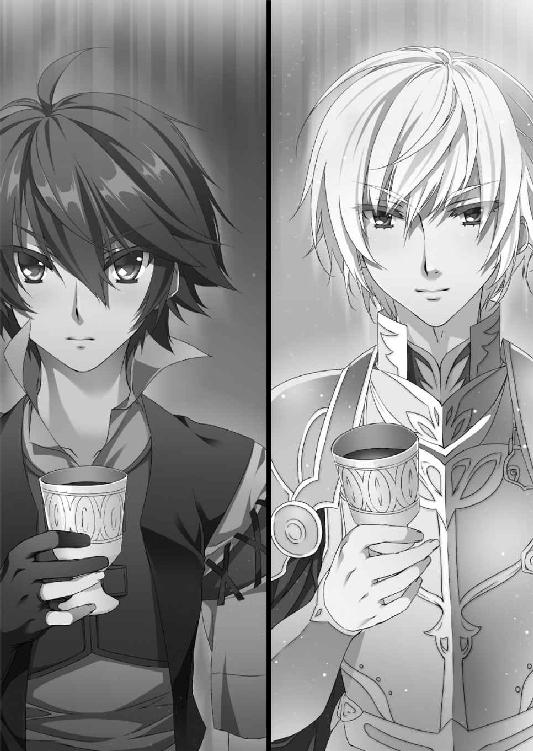
「いい酒だな」
タラードは熱を帯びた息を吐くと、笑みを消して真面目な表情になる。それを見て、ティグルも気を取り直した。
「酔う前に本題をかたづけるとしようか。おまえの要求は？」
「ブリューヌから退いてくれ」
率直な問いかけに、ティグルもまた明快な答えを返す。
「ただで退くのはいやだな。ここに来るだけでも金がかかってるんだ」
「そもそも、どうしてザクスタンと手を組んだ？ ザクスタンとアスヴァールは仇敵同士だと聞いたんだが」
ティグルの問いかけに、タラードは不思議そうに首をひねった。
「敵味方なんて、そのときの都合で変わるものだろう」
「その都合っていうのは何だ」
「自分で調べ、考えろと言ってやりたいところだが......。まあいいか」
そこまで言って、タラードは肩を揺らして笑う。
「手っ取り早く武勲が必要でな。そんなときに、ザクスタンが話を持ちかけてきたんだ。ブリューヌを攻めないかと」
「その提案を受け入れたのか」
「おまえはジスタートにいるという話だったからな。現在のブリューヌはたいした将軍もおらず、北から西から領土を切り取り放題とも言われた。それで、小銭稼ぎに連中を手伝うのもいいかと思ったわけだ」
タラードの台詞に、ティグルは嘆息した。ブリューヌの大地を切り取り放題とは、馬鹿にしてくれたものだ。
もっとも、合計七万もの軍勢、クリューゲルやシュミットの指揮能力、メリザンドという内通者、さらにタラードの存在を考えると、大言壮語とも言い切れない。
ティグルはクリューゲルを打ち破ったが、紙一重の勝利だった。シュミットは倒しきれなかった。それどころか、ひとつ間違えれば敗北していたのはティグルだっただろう。そうなれば、ブリューヌは領土の何割かを失っていたに違いない。
ティグルは話題を少しずらすことにした。
「アスヴァールはいいのか？ 内乱が終わってからまだ半年も過ぎていないだろう」
ブリューヌでさえ、二年前の内乱の傷跡が国内のいたるところに残っている。アスヴァールも同じと考えていいはずだ。ティグルの質問に、はたしてタラードは顔をしかめた。
「問題なしとは言えないな。ザクスタンが話を持ちかけてこなかったら、もう何年かは内政に専念していただろう」
だったらなぜ、と言いかけてティグルはひとつの可能性に思い当たった。
「まさか、おまえの立場を強固なものにするためか？」
タラードが公爵になったという使者の言葉を、ティグルは思いだしていた。誰も反論できないほどの武勲があるとはいえ、半年の間に公爵位を授かるには、かなり強引な手も打ったに違いない。加えて、いまのタラードの台詞。
ザクスタンがブリューヌに攻めこむならば、アスヴァールとしては南からの脅威を考えずにすむ。そこで生じる余力を、ブリューヌに向けることが可能となるのだ。
また、タラードの目的は王となることだ。彼にとっては、公爵位でさえ通過点に過ぎない。さらに上を目指すからには、より輝かしい功績が必要になるはずだった。ブリューヌの領土を手に入れることがかなえば、玉座はずいぶんと近くなるだろう。
その自分の考えを、銀杯に新たな葡萄酒を注ぎながらティグルは語ってみせた。タラードはにやにやと楽しそうな笑みを浮かべるだけで何も言わないが、その表情こそがティグルの考えの正しさを証明している。
ティグルが話し終えると、待っていたというふうにタラードは聞いてきた。
「さて、おまえはオレにどうしてほしい？」
「俺の望みは、アスヴァール軍がブリューヌから退いてくれることだ」
「わかった。一戦して派手に負けてくれ。おまえが捕虜になるなら厚遇するぞ。ジスタートではそうだったんだろう」
リムから聞いたのだろうか、タラードは明るい表情でとんでもないことを言った。しかし、すぐに皮肉っぽい口調で付け加える。
「先に言っておくが、中途半端な契約はお断りだ。どうしてもそういう話がしたければ、レギン王女でも連れてきてもらおう」
「俺では信用できないということか？」
「はっきり言うと、その通りだ」
眉をひそめて訝るティグルに、タラードは即答した。愕然として目を丸くする若者に、タラードは淡々と説明する。
「リムアリーシャ殿から聞いた。いまのおまえはアルサスを治めるヴォルン伯爵であり、臨時に編成された月光の騎士軍の総指揮官である。そうだな？」
ティグルはうなずいた。同時に、金髪の若者の表情がいつになく厳しいものになっていることに気づく。自分が信用できないとは、どういう意味なのか。リムが誤解を招くような説明をするとも思えないが。
「たとえば、そうだな。金貨五十万枚を後払いで、こちらがブリューヌから退くという契約を結んだとしよう。いまのおまえの立場では、これを反故にされる可能性が高い」
──反故？ どうしてそんな......。
タラードの言葉の意味がすぐにはわからず、ティグルは酒杯に視線を落とす。言い換えれば、現在の自分の立場ならそういった契約を踏み倒せるということだ。
おもわずティグルはあっと叫びそうになった。金髪の若者の言うことがわかったのだ。ティグルは顔を上げると、苦い表情でタラードを見つめた。
「この戦が終わったら、月光の騎士軍は解散するからだな？」
タラードは笑みを浮かべることもせず、黙然とうなずいて酒杯を傾ける。
月光の騎士軍の総指揮官として、ティグルがタラードと契約を結んだとする。その後、戦が終わったら月光の騎士軍はなくなり、ティグルの立場も自然に失われる。そのことによって、契約から逃げることができるのだ。
タラードが契約の履行をブリューヌに求めても、ブリューヌはティグルから取り立てるようにと答えればいい。しかし、月光の騎士軍がなくなれば、ティグルはアルサスを治めるヴォルン伯爵でしかない。
しかも、アルサスはジスタートにも近い位置にあって、うかつに揉めごとを起こしにくい。兵を差し向けて無理矢理収奪などはほとんど不可能だ。
だから、タラードは言ったのだ。レギン王女を連れてこいと。正確には、レギンでなくともいいのだろう。ブリューヌ王国の代表であれば。
ティグルはくすんだ赤い髪をかきむしる。ブリューヌから退いてくれなどという頼みを素直に受け入れてもらえるとは、さすがに考えていなかった。
だが、こんなところで立場の弱さを認識させられるとは思わなかった。ブリューヌでの内乱が終わったあとに地位なり領地なりを望んでいれば、また違ったのだろうか。
──やむを得ないか。
アスヴァール軍の総指揮官がタラードだとわかったとき、ティグルの胸中にはひとつの案が生まれていた。とうてい策などと呼べる代物ではないが、それを使うしかない。
必要なのは、知恵ではない。二つの意味での、面の皮の厚さだ。ティグルは銀杯を地面に置きながら小さく息を吸い、呼吸を整える。腹に力を入れた。
──以前、タラードは言っていたな......。
必要とあれば、民を見捨てることも辞さない。目の前の金髪の若者はティグルにそう言ったことがあった。これからティグルが彼に提案しようとしていることを考えると、胸が痛くなる。だが、他に手がない。
「──タラード」
ティグルは姿勢を正してアスヴァールの若き公爵に呼びかけた。タラードはわずかに眉を動かしたあと、ティグルにならって銀杯を地面に置き、若者の視線を受け止める。楽しそうな笑みを浮かべて尋ねた。
「何か面白そうな話があるのか？」
ティグルは小さくうなずくと、一語一語を噛みしめるように言った。
「ザクスタンと手を切って、俺たちと組まないか」
「そうすることで、オレに何の利益がある？」
「俺と戦わずにすむ」
きっぱりと、ティグルは言い切った。
タラードは一瞬、あたかも異国の言語を聞いたかのように動きを止め、目を大きく見開いてティグルを見つめる。それから若者の言葉を丁寧に吟味し、意味を理解すると吹きだした。腹を抱えて小刻みに肩を震わせる。大声で笑うのを懸命に堪えているらしい。
彼が笑いをおさめるのを、ティグルは姿勢を崩さずに黙って待った。
──大言壮語もいいところだな。
タラードと戦ったとして、勝てるかどうかなどわからない。むしろ、負けるかもしれない。それなのに、自分はそれを裏切りの対価として提案している。いつからそんな大層な人間になったのだと自分を笑いたくなるほどだ。
だが、タラードを動かせそうなものは他に考えつかなかった。
それに、まったくの思いつきというわけでもない。
タラードはザクスタンの計画に便乗したと言った。しかし、そのザクスタンの計画は、雨に打たれた砂の城のように崩れかかっている。
クリューゲルは戦死した。メリザンドも命を落とした。シュミットはまだ精強だが、彼の前にはティグルが立ちふさがっている。
そのティグルの背後には、ジスタートの影が見えているはずだ。
これらのことを、タラードも知っているはずだ。
やがて、タラードは顔を上げる。他の何者にも真似できないような不敵な笑みを浮かべて、彼はティグルを見つめた。
「考えようによっては、おまえと戦うのは絶好の機会だな。月光の騎士。流星落者。その二つの異名を持つおまえに勝てば、オレは今年中にギネヴィアを妻として王になれるかもしれない」
積極的なタラードらしい発言に、ティグルはため息をついた。駄目だったのだろうか。
だが、タラードは小さく笑って首を縦に振った。
「いいだろう。その提案に乗ろう」
実のところ、アスヴァールにとってティグルの提案はそれほど悪い話ではない。
ザクスタンに手落ちがあったとは思わない。ブリューヌが、ザクスタンの予想を上回る力を発揮したのだ。とくに、ジスタート軍を味方につけて戻ってきたこの男が。
このままザクスタンが敗北するのはかまわないが、巻きこまれてはたまったものではない。アスヴァールとしては、どこかで見切りをつける必要があった。あるいは、それがいまなのではないか。
タラードは考えを巡らせる。このままザクスタンと肩を並べて戦っていれば、ブリューヌとジスタートの二国を相手取ることとなる。
問題なのは、ザクスタンがいつまでブリューヌと戦う意志を持ち続けるかだ。
たとえばタラードの知らない間にザクスタンがブリューヌと和睦した場合、アスヴァールはブリューヌ、ジスタート、さらにザクスタンの三ヵ国を同時に相手取ることとなる。これほど間の抜けた話もないが、諸国の歴史を紐解けばそうした事例は数多い。
この場でティグルを捕らえて首を刎ね、あるいはザクスタン軍に土産として送り届けることも、もちろんタラードは考えた。そうなればブリューヌは瓦解し、タラードはザクスタン軍とブリューヌの領土を好き放題に切り取ることができる。
ただし、ひとつ気になることがある。ジスタート王国の存在だ。
ティグルヴルムド＝ヴォルンが、実はジスタートに寝返っているという噂は、タラードも耳にしている。そうなると、ティグルを殺害または捕虜にした場合、タラードはジスタートを敵にまわすことになりかねないのだ。
一晩かけてタラードがリムから聞いた話も、その噂を補強する形となっている。タラードもジスタートについていろいろと調べているが、複数の戦姫と親しい異国の人間などティグル以外に知らない。リムの話はどれも説得力に満ちて、嘘とはとうてい思えない。
繰り返すが、ザクスタンは仇敵である。いつアスヴァールに刃を向けるかわかったものではない。
ティグルを殺害して、ブリューヌという果実をいざ味わおうとしたら、ジスタートとザクスタンに挟まれていたなどという結果になっては、タラードの名は愚者として語り継がれるだろう。
「ただし、条件がある」
タラードは右手の指を二本立てて、ティグルにまっすぐ突きだした。
「ひとつは食糧や物資の供与。それから、ブリューヌ領内の通行許可がほしい」
二つめの条件に、ティグルは首をひねったものの、すぐに理解する。
「まさか、ブリューヌを通ってザクスタンに攻めこむつもりか？」
「おもしろいだろう？」
心の底から楽しそうなタラードの言葉に、ティグルは唸った。たしかに効果的だろう。やはり、この男と戦わなくてよかったと思う。
密談は、終わった。
◎
レオンハルト＝フォン＝シュミットは一日かけて軍の再編成をすませ、アスヴァール軍とも連絡をとりあい、次の戦で確実に月光の騎士軍を打ち倒すという決意を固めた。
だが、彼が月光の騎士軍と戦うことはもうなかった。
ブロワールの野を離れ、モンドゥという草原に軍を展開して月光の騎士軍と対峙したとき、彼は気づいたのだ。
アスヴァールが、自分たちを裏切ったことに。
このとき、アスヴァール軍はザクスタン軍のすぐ北に布陣している。ごくふつうに考えれば、正面にいる月光の騎士軍を二人がかりで攻めようとしているふうに見えるはずだ。
だが、シュミットにはそうは見えなかった。
自分たちが月光の騎士軍と激突したら、アスヴァール軍はそれを待っていたかのようにザクスタン軍の背後へまわるのでは。そうとしか思えなかったのだ。
二十年を超える戦場で培った経験が、無形の警告を彼の意識に響かせた。さらにいえば、新たな敵を前にしながら月光の騎士軍が落ち着きすぎていることが、彼の直感を刺激したのかもしれない。一昨日は彼の軍を救った者が、今日は彼の軍を脅かしている。
「──退くぞ」
憤怒に身を焦がしながら、呻くような声でシュミットは副官に言った。この状況で退けば、臆病者のそしりはまぬがれないだろう。
だが、敗北よりはましだ。そう思うことで、煮えたぎる感情をシュミットはおさえた。
ザクスタン軍が後退する。月光の騎士軍は動かない。アスヴァール軍も。
時間をかけてたっぷり一ベルスタ（約一キロメートル）ほども移動したところで、シュミットは撤収を告げた。アスヴァール軍が裏切ったと説明して。
◎
シュミットの直感が正しかったことがわかるのは、それから八日後のことになる。
行きとは違う道を通ってやはり村や町を襲いながら食糧や物資を補給し、国境まで戻ってきたザクスタン軍を待ちかまえていたのは、ナヴァール騎士団五千騎と、アスヴァール軍一万騎だった。
「おのれ、やはり貴様らは......」
怒りのあまり、シュミットの黄銅色めいた髪は一部が灰色に染まったともいわれる。
二国の軍の猛攻を耐えしのぎながらも、シュミットはザクスタンに帰還した。
ブリューヌ侵攻が失敗したという報告に、ザクスタン国王アウグストは肩を震わせた。
何重にも打った手が、ことごとく破られたのだ。受けた衝撃は誰よりも大きかった。
アウグストは、謁見の間でシュミットを迎えた。膝をつき、悄然として報告するシュミットを酷薄さを感じさせる目つきで見下ろした。クリューゲルがすでにこの世にいない以上、敗北の責任を問われるのはシュミットしかいない。
だが、アウグストはシュミットを許した。シュミットがいなくなれば、現在のザクスタンにおいて大軍を任せられる人材がただひとりになってしまう。そのことを、アウグストはわかっていたのだ。
何より、彼には他に怒りを向ける対象がいた。
「──シュミットよ」
シュミットが報告を終えるのを待って、アウグストは口を開いた。
「三日だけ、休むことを許す。そのあとは一日も早く軍を立て直せ」
居並ぶ廷臣が、国王の慈悲深さに驚いた。アウグストは言葉を続けた。
「次のそなたの敵はアスヴァールだ。憎きタラードめの首をとるまで、王宮の扉をくぐれると思うな」
汚名を返上する機会を与えられたことに、シュミットは歓喜した。あらためて頭を床に垂れ、タラードを討ち取るまで王宮に足を向けないことを誓った。
そして、これがシュミットにとって最後の謁見となったのである。
これから約十年もの間、シュミットはザクスタンとアスヴァールの国境から動かず、アスヴァール軍と戦い続ける日を送る。
『稲妻のレオンハルト』の異名は、アスヴァールに領土を奪われ続け、滅びの道を歩むザクスタンを最後まで支えた勇将の異名として知られることになる。
◎
ムオジネル軍が動きだしたのは、人々が春の終わりを感じはじめたころだった。
「そろそろよかろう」
虹色に飾りたてた豪奢な天幕の中で、クレイシュは主だった部下を集めてそう言った。アニエスを通過してブリューヌ国内へ侵入する道は、とうに発見している。リュドミラ＝ルリエ率いるオルミュッツ軍とも、何度か小競り合いを起こした。一度だけだが、ソフィーヤ＝オベルタスの治めるポリーシャにまで兵を向かわせた。
もはや、ジスタート人は疑っていないだろう。ムオジネルはあくまでジスタートと戦うつもりだと考えているはずだ。その心理的な隙を突く。
「ブリューヌに侵入を果たしたら、まずは南だ。港町群を手中におさめる」
ブリューヌ南部の港町群をおさえれば、ムオジネルは海路を使って本国と連絡をとることができる。そのことは兵たちを安心させるだろう。また、奪ったものを本国へ送ることも、その逆に本国から食糧物資や兵を送ってもらうこともできるようになる。
「さて、ブリューヌはいまごろどうなっているかな」
ブリューヌの現状を、クレイシュは知らない。ザクスタンが攻めこんだことは知っていたし、そのザクスタンに使者を送ったこともあったのだが、そこで情報収集を中断した。
戦争になれば、状況は短い時間で幾度となく変わる。昨日は黄金にも勝るほど貴重だった情報が、今日では路傍の石よりも役に立たなくなることなど珍しくない。まして、ムオジネル軍はブリューヌから遠く離れた地にいるのだ。
「さて、リュドミラ＝ルリエとの最後の戦いだ。せいぜい派手に演じるとするか」
翌日、クレイシュは温存していた精鋭をオルミュッツ軍にぶつけた。それまでの小競り合いとは比較にならないほどの猛攻に、ミラは懸命に耐える。
朝からはじまった戦いは昼過ぎまで続き、さすがに消耗したムオジネル軍は戦いが終わると潮が引くように大きく後退した。
それから三日間、ムオジネル軍はオルミュッツ軍に接触しなかった。
「何を考えているのかしら」
動く気配を見せないムオジネル軍を、ミラは訝しげな目で見る。
「三日前の攻撃でこの城砦を陥とせなかったことで、戦略を練り直しているのではないでしょうか」
ミラの部下はそう言い、青い髪の戦姫は納得したようにうなずいてみせたものの、彼女の青い瞳はまだ不審の色を帯びていた。
ミラがムオジネルの意図に気づかされたのは、翌朝のことだ。
ムオジネル軍が、一兵も残さずいなくなっていたのである。夜陰にまぎれたとはいえ、五千もの大軍が、オルミュッツ軍にまったく気づかせず、移動を果たしたのだ。
ミラは急いで四方に偵察部隊を放った。太陽が中天に上るころ、ようやくムオジネルの大軍をアニエスで見たという報告が彼女のもとに届く。
──やられた......！
怒りと悔しさから、ミラは唇を強く噛んだ。ムオジネルの目的ははじめからブリューヌであり、数日前までの攻防は陽動に過ぎなかったのだ。
──ティグル......。
青い髪の戦姫の脳裏に、くすんだ赤い髪の若者の姿が浮かびあがる。彼はザクスタンと戦い、さらにムオジネルをも相手にしなければならないのだ。
彼のもとに駆けつけたいと思った。だが、二年前と同じ行動はとれない。
ひとつには、ミラがヴィクトール王より待機を命じられているからだ。アニエスの向こうへ去っていったムオジネル軍がすべてとはかぎらない。彼らを追ってミラがオルミュッツの国境を手薄にした途端、ムオジネルの別働隊が攻めてくる可能性は充分にある。
兵たちには警戒を命じ、ミラは指揮官用の部屋で報告書をまとめていた。
彼女の傍らに置かれていた凍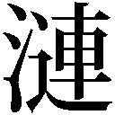が輝きを放ったのはそのときだ。
ミラは呆然として、己の竜具を見つめた。息を呑み、落ち着きを取り戻してから彼女はラヴィアスを手に取る。長柄を通して、竜具の意思がミラに伝わってきた。
──魔物が......？
ミラは眉をひそめて凍を見つめる。ここから北西──すなわちブリューヌに、魔物がいるとラヴィアスは訴えていた。
──どういうこと？ いままでは、そんなこと教えてくれたことなかったのに......。
魔物がジスタートで暗躍していたことは、太陽祭の折に戦姫全員とティグルが集まって話しあったときに知った。ルヴーシュにバーバ＝ヤガーとヴォジャノーイが現れ、リーザとエレン、ティグルの三人で撃退したと。
距離の問題なのだろうか。ポリーシャのソフィーやブレストのオルガ、ルヴーシュのリーザも、いまごろ自分の竜具に教えられているのか。
──確認している余裕はないわ。
冷気をまとった槍を、ミラは握り直す。戦姫が魔物を打ち倒す存在であることは、戦姫だった母からも教わっていた。もっとも、母は魔物と遭遇したことはなかったらしいが。
いま、自分はひどく奇妙な顔をしているだろうとミラは思う。指揮官として、オルミュッツの主としてブリューヌには行かないと決めたばかりなのに、戦姫として、彼女はブリューヌに行かなければならないのだ。
ミラは腹心の部下を呼ぶと、いつもの口調で告げた。
「私はブリューヌに行くわ。ここの指揮はあなたに任せる」
「ブリューヌへ向かったムオジネル軍を追うのですか？」
部下の質問は、この状況を考えれば当然のものだったろう。しかし、ミラは静かに首を横に振る。
「ブリューヌへ行くのは私だけよ。誰も連れていかない」
魔物との戦いとなれば、軍は不要だ。それどころか足手まといになりかねない。当惑する部下に、ミラは続けて指示を出す。
「王都と、ポリーシャのソフィーへそれぞれ使者を送るわ。用意をお願い。あなたに事情を話せないのは申し訳なく思うけれど、これは重要なことなの」
真剣な表情で、ミラは部下に訴える。部下はどう答えるべきか迷っていたようで、すぐには言葉を返さなかったものの、最終的には主への信頼が勝った。凍の雪姫は、義務を放りだそうとしているのではない。別の義務を果たそうとしているのだ。
「かしこまりました。この城砦の指揮は、私にお任せください。戦姫様は安んじてご自身の務めを果たされますよう」
「ありがとう」
微笑を浮かべて、ミラは年長の部下に礼を述べた。
それから一刻後、旅の準備を調えたミラは、馬を駆って城砦から離れた。
ムオジネル軍を追いかける形になるが、ブリューヌに至る最短の道が他にないのだから仕方がない。
──魔物相手となれば、ティグルとエレオノーラの力を借りたいところだけど......。
現在、ブリューヌにはティグルとエレン、そしてヴァレンティナがいるはずだ。ヴァレンティナを戦力として数えてよいかどうかはわからないので、ひとまず保留とする。
エレンのことは嫌いだが、必要とあれば二人は手を組むことをためらわなかった。だからこそ、二年前のブリューヌの内乱において双頭竜を打ち倒すことができたのだ。
──ザクスタンとの戦いはどうなっているのかしらね。
問題はそこだ。もしもティグルたちがザクスタン相手に手こずっているようであれば、自分ひとりで魔物と戦うことも考えなくてはならない。
街道に乾いた風が吹き抜ける。ミラは無言で馬を走らせた。
王都ニースから南西へ一日半ほど歩いたところに、草原がある。
そこに、およそ一万の兵がいた。彼らの出自は雑多だ。とある貴族に仕えていた兵だった者もいれば、つい先日まで山賊だった者もいる。騎士だった者もいた。
彼らは、コティヤール伯爵が集めた兵だ。メリザンドに忠誠を誓っていたコティヤールは、彼女を支援するべくネメタクムで兵を集め、来たるべき日を待っていた。
しかし、その日は永遠に訪れなかった。
現在、この一万の兵を統率しているのはコティヤールではない。別の男だ。
コティヤールはその男の前にいた。さるぐつわをされ、首から下を地中に埋められた格好で。放置されれば、野犬の餌となるのは間違いなかった。
その男は楽しそうな声で礼を述べる。灰色の髪をした若い男だった。
「ご苦労だった、伯爵。あなたが集めた兵は、私が有効に活用させていただく」
男の名はカロン＝アンクティル＝グレアストといった。
ブリューヌの王宮より盗みだした『不敗の剣』をガヌロン公爵に渡したあと、彼はネメタクムを訪れた。そして、メリザンド派を装ってコティヤールに接触したのだ。
「そうだ、メリザンドにも感謝をせねばな。彼女は何から何まで役に立ってくれた」
メリザンドの野心に気づいたガヌロンとグレアストは、彼女とその協力者たちを徹底的に利用した。メリザンドにレギンを暗殺させようとしながら、自分たちはデュランダルを盗みだした。また、彼女の名と資金を使って集めた兵を奪った。
グレアストは各部隊の隊長を呼ぶと、短く告げた。
「我々は北上する。ザクスタン軍との戦いで疲労困憊のティグルヴルムド＝ヴォルンを討つ。そして王都に凱旋し、レギンを排除して実権を握るのだ」
隊長たちがそれぞれの部隊を指揮するべく足早に去っていくと、グレアストは目を閉じる。彼の脳裏に浮かんだのは、二年前に見た白銀の髪の戦姫の姿だ。
「待っているがいい、戦姫よ。いまこそ、あなたを私のものとしてみせよう」
歌うように、灰色の髪の侯爵はつぶやいたのだった。
ザクスタン軍を退け、アスヴァール軍と別れた月光の騎士軍は、王都ニースに向かっていた。通称グレアスト軍と接触し、戦いになったのはニースまであと二日というところだったといわれる。
月光の騎士軍は、敗れた。
総指揮官ティグルヴルムド＝ヴォルンと、ジスタート軍の指揮官であるエレオノーラ＝ヴィルターリアは戦の混乱の中で、行方不明となった。
あとがき
このあとがきを書いているのは雨の降りしきる梅雨まっただ中ですが、この本がみなさんの手元に届くころには、夏らしい日になっていればと思います。
あらためまして、川口士です。『魔弾の王と戦姫』十二巻をお届けします。物語も実は割と佳境にきていまして、こんな感じで次回に続くと相成りましたが、いかがだったでしょうか。ともあれ、楽しんでいただければ幸いです。
それでは謝辞を。編集のＮさん。今回も何から何までありがとうございました。前巻のあとがきで、次回もたぶん会議室を借りますと書いたけど本当に借りることになるとは。
片桐雛太さん。最年長の新戦姫フィグネリアをありがとうございます。この巻では彼女の活躍をお披露目できませんでしたが、いずれ、彼女にふさわしい出番がきっと......。また、片桐さんには他の子たちの服装も細かく変えていただいていたりします。
最後に、本作が書店に並ぶまでの工程に携わった方々と、この本を手にとってくださった皆様。ありがとうございます。それでは、またどこかでお会いしましょう。
川口 士
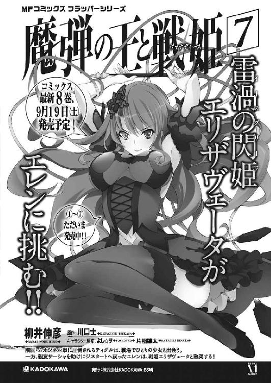
著者
川口士（かわぐち・つかさ）
１９７９年生まれ。２００６年、第18回富士見ファンタジア長編小説大賞にて『戦鬼』で大賞を受賞。
その後、いろいろなところでいろいろ書く。
『表紙を飾ったからといってその巻で活躍するわけではない』をたしか４巻あたりから地で行く本作ですが、この巻で表紙を飾った新たな戦姫もその例に漏れません。彼女の運命やいかに。
イラスト
片桐雛太（かたぎり・ひなた）
見慣れないキャラが表紙を飾る12巻です。
フィグネリアさんは、川口さんの書かれる所作がかっこよくて、気が付いたら敵わない系女子になってました。ぅゎ、っょぃ。
強いおねえさんは好きですか。私は好きです。
皆様にお手に取っていただけて、喜んでいただけたら最高の幸せ。
個人ブログ「ひなだまり」
http://hinadamari.blog.fc2.com/
ツイッターもまったりやっております。
カバー・口絵・本文イラスト／片桐雛太
装丁／伸童舎
魔弾の王と戦姫12
川口士
平成27年7月31日 発行
(C) Tsukasa Kawaguchi 2015
本電子書籍は下記にもとづいて制作しました
ＭＦ文庫Ｊ『魔弾の王と戦姫12』
平成27年7月31日初版第一刷発行
発行者 三坂泰二
発 行 株式会社ＫＡＤＯＫＡＷＡ
〒102-8177 東京都千代田区富士見2-13-3
0570-002-001（カスタマーサポートセンター）
年末年始を除く平日10：00～18：00まで
http://www.kadokawa.co.jp/